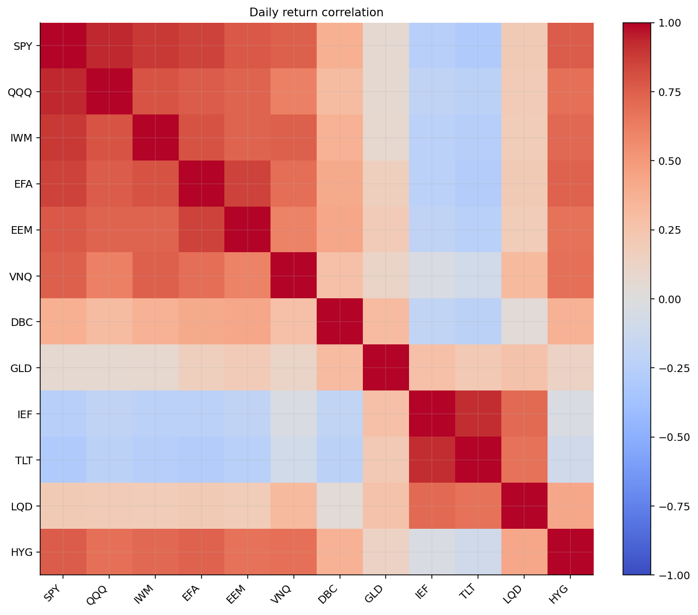

from pathlib import Path
import math
import warnings
import matplotlib.pyplot as plt
import numpy as np
import pandas as pd
import statsmodels.api as sm
from IPython.display import display
from sklearn.calibration import CalibratedClassifierCV
from sklearn.cluster import AgglomerativeClustering, KMeans
from sklearn.decomposition import PCA
from sklearn.discriminant_analysis import LinearDiscriminantAnalysis
from sklearn.ensemble import GradientBoostingClassifier, RandomForestClassifier
from sklearn.inspection import permutation_importance
from sklearn.linear_model import LogisticRegression, LinearRegression
from sklearn.metrics import (
accuracy_score,
balanced_accuracy_score,
confusion_matrix,
f1_score,
log_loss,
silhouette_score,
)
from sklearn.mixture import BayesianGaussianMixture, GaussianMixture
from sklearn.model_selection import TimeSeriesSplit
from sklearn.neighbors import KNeighborsClassifier
from sklearn.preprocessing import StandardScaler
from sklearn.svm import SVC
from statsmodels.tsa.regime_switching.markov_regression import MarkovRegression
try:
from hmmlearn.hmm import GaussianHMM
hmm_available = True
except Exception:
GaussianHMM = None
hmm_available = False
try:
from lightgbm import LGBMClassifier
lgbm_available = True
except Exception:
LGBMClassifier = None
lgbm_available = False
from quantfinlab.backtest.portfolio import run_many_weights_backtests
from quantfinlab.dataio import load_macro_factors, load_par_yield_curve, load_yfinance_panel, prices_to_returns_panel
from quantfinlab.macro.indicators import (
condition_blocks,
expanding_zscore,
external_demand_stress,
external_vulnerability,
goldilocks_support,
growth_acceleration_stress,
growth_breadth_stress,
growth_momentum_stress,
housing_impulse_stress,
housing_rate_squeeze,
inflation_acceleration,
inflation_diffusion,
inflation_impulse,
inflation_level_pressure,
labor_cooling,
policy_catchup_risk,
policy_shock,
policy_tightness,
real_rate_squeeze,
sahm_pressure,
severe_stress_breadth,
stagflation_pressure,
stress_breadth,
survey_warning,
)
from quantfinlab.macro.models import economic_fci, pca_fci
from quantfinlab.plotting.curves import LAB_COLORS, set_plot_style
from quantfinlab.plotting.diagrams import (
agglomerative_tree,
bayesian_mixture,
ensemble_bagging,
gmm_mixture,
hidden_markov_model,
kmeans_geometry,
knn_neighbors,
lda_projection,
logistic_boundary,
markov_chain,
ml_pipeline,
svm_margin,
unsupervised_supervised,
walkforward_split,
)
from quantfinlab.plotting.portfolio import plot_strategy_drawdowns, plot_strategy_nav, plot_turnover
from quantfinlab.plotting.risk import plot_corr_heatmap
from quantfinlab.portfolio import covariance, expected_returns, make_rebalance_dates, optimizers, selection
from quantfinlab.portfolio.cvar import mean_cvar_weight_frame
from quantfinlab.portfolio.robust import wasserstein_weight_frame
from quantfinlab.portfolio.walkforward import run_walkforward_grid
from quantfinlab.reports import risk_report
warnings.filterwarnings("ignore")
set_plot_style()
pd.set_option("display.max_columns", 120)
pd.set_option("display.width", 160)16. Regime Switching models for portfolio selection
fig, ax = ml_pipeline()
plt.show()
project_title = "Regime Classification and Regime-Switching Portfolio Allocation"
data_path = Path("../data")
etf_path = data_path / "ETF_data.csv"
macro_path = data_path / "us_macro_factors.csv"
par_yield_path = data_path / "par-yield-curve-rates-1990-2026.csv"
assets = [
"SPY", "QQQ", "IWM", "EFA", "EEM",
"VNQ", "DBC", "GLD", "IEF", "TLT",
"LQD", "HYG",
]
cash_ticker = "SHY"
risk_assets = ["SPY", "QQQ", "IWM", "EFA", "EEM", "VNQ", "HYG"]
defensive_assets = ["IEF", "TLT", "GLD", "SHY"]
outcome_assets = ["SPY", "HYG", "TLT", "DBC", "GLD", "EEM"]
context_tickers = ["XLE", "XLU"]
all_tickers = assets + [cash_ticker] + context_tickers
annualization = 252.0
cost_bps = 10.0
train_days = 1260
horizon = 63
horizon_slow = 126
rf_daily = (1.0 + 0.04) ** (1.0 / annualization) - 1.0
regime_names = ["risk_on", "neutral", "defensive"]panels = load_yfinance_panel(
etf_path,
fields=("close", "volume"),
tickers=sorted(set(all_tickers + outcome_assets)),
lowercase=False,
)
close = panels["close"].ffill(limit=3).reindex(columns=sorted(set(all_tickers + outcome_assets)))
volume = panels["volume"].ffill(limit=3).reindex(columns=close.columns)
coverage = pd.DataFrame(
{
"first": close.apply(pd.Series.first_valid_index),
"last": close.apply(pd.Series.last_valid_index),
"observations": close.notna().sum(),
}
)
display(coverage.loc[all_tickers])| first | last | observations | |
|---|---|---|---|
| SPY | 1999-01-04 | 2026-05-22 | 7020 |
| QQQ | 1999-03-10 | 2026-05-22 | 6975 |
| IWM | 2000-05-26 | 2026-05-22 | 6663 |
| EFA | 2001-08-27 | 2026-05-22 | 6341 |
| EEM | 2003-04-14 | 2026-05-22 | 5924 |
| VNQ | 2004-09-29 | 2026-05-22 | 5548 |
| DBC | 2006-02-06 | 2026-05-22 | 5199 |
| GLD | 2004-11-18 | 2026-05-22 | 5512 |
| IEF | 2002-07-30 | 2026-05-22 | 6105 |
| TLT | 2002-07-30 | 2026-05-22 | 6105 |
| LQD | 2002-07-30 | 2026-05-22 | 6105 |
| HYG | 2007-04-11 | 2026-05-22 | 4897 |
| SHY | 2002-07-30 | 2026-05-22 | 6105 |
| XLE | 1999-01-04 | 2026-05-22 | 7020 |
| XLU | 1999-01-04 | 2026-05-22 | 7020 |
returns = prices_to_returns_panel(close, kind="simple").fillna(0.0)
returns = returns.reindex(columns=close.columns).fillna(0.0)
monthly_prices = close.resample("ME").last()
rebalance_dates_all = make_rebalance_dates(returns.index, freq="ME", min_history_days=train_days)
print(project_title)
print(close.index.min().date(), "to", close.index.max().date())
print("daily rows:", len(close), "rebalance dates:", len(rebalance_dates_all))Regime Classification and Regime-Switching Portfolio Allocation
1999-01-04 to 2026-05-22
daily rows: 7020 rebalance dates: 270rates = load_par_yield_curve(par_yield_path, source="us_treasury").reindex(close.index).ffill()
rates = rates[["3M", "2Y", "10Y"]].dropna(how="all").reindex(close.index).ffill()
x_rates = pd.DataFrame(index=close.index)
x_rates["rate_3m"] = rates["3M"]
x_rates["rate_2y"] = rates["2Y"]
x_rates["rate_10y"] = rates["10Y"]
x_rates["slope_10y_3m"] = rates["10Y"] - rates["3M"]
x_rates["slope_10y_2y"] = rates["10Y"] - rates["2Y"]
x_rates["slope_10y_3m_change_21"] = x_rates["slope_10y_3m"].diff(21)
x_rates["slope_10y_3m_change_63"] = x_rates["slope_10y_3m"].diff(63)
x_rates["slope_10y_3m_change_126"] = x_rates["slope_10y_3m"].diff(126)
x_rates["slope_10y_2y_change_63"] = x_rates["slope_10y_2y"].diff(63)
x_rates["rate_10y_change_63"] = rates["10Y"].diff(63)
x_rates["rate_2y_change_63"] = rates["2Y"].diff(63)
display(x_rates.dropna().tail().round(4))| rate_3m | rate_2y | rate_10y | slope_10y_3m | slope_10y_2y | slope_10y_3m_change_21 | slope_10y_3m_change_63 | slope_10y_3m_change_126 | slope_10y_2y_change_63 | rate_10y_change_63 | rate_2y_change_63 | |
|---|---|---|---|---|---|---|---|---|---|---|---|
| date | |||||||||||
| 2026-05-18 | 0.0368 | 0.0356 | 0.0426 | 0.0058 | 0.007 | 0.0 | 0.0 | 0.0042 | 0.0 | 0.0 | 0.0 |
| 2026-05-19 | 0.0368 | 0.0356 | 0.0426 | 0.0058 | 0.007 | 0.0 | 0.0 | 0.0040 | 0.0 | 0.0 | 0.0 |
| 2026-05-20 | 0.0368 | 0.0356 | 0.0426 | 0.0058 | 0.007 | 0.0 | 0.0 | 0.0040 | 0.0 | 0.0 | 0.0 |
| 2026-05-21 | 0.0368 | 0.0356 | 0.0426 | 0.0058 | 0.007 | 0.0 | 0.0 | 0.0042 | 0.0 | 0.0 | 0.0 |
| 2026-05-22 | 0.0368 | 0.0356 | 0.0426 | 0.0058 | 0.007 | 0.0 | 0.0 | 0.0042 | 0.0 | 0.0 | 0.0 |
macro_factors = load_macro_factors(macro_path, start="1990-01-01")
min_macro_history = 60
inflation = pd.concat(
[
inflation_level_pressure(macro_factors, min_history=min_macro_history),
inflation_impulse(macro_factors, min_history=min_macro_history),
inflation_acceleration(macro_factors, min_history=min_macro_history),
inflation_diffusion(macro_factors, min_history=min_macro_history),
],
axis=1,
)
policy = pd.concat(
[
policy_tightness(macro_factors, min_history=min_macro_history),
policy_shock(macro_factors, min_history=min_macro_history),
],
axis=1,
)
policy["real_rate_squeeze"] = real_rate_squeeze(policy["policy_tightness"], inflation["inflation_impulse"], min_history=min_macro_history)
policy["policy_catchup_risk"] = policy_catchup_risk(inflation["inflation_level_pressure"], policy["policy_tightness"], min_history=min_macro_history)
growth_macro = pd.concat(
[
growth_momentum_stress(macro_factors, min_history=min_macro_history),
growth_acceleration_stress(macro_factors, min_history=min_macro_history),
growth_breadth_stress(macro_factors, min_history=min_macro_history),
survey_warning(macro_factors, min_history=min_macro_history),
],
axis=1,
)
labor = pd.concat(
[
labor_cooling(macro_factors, min_history=min_macro_history),
sahm_pressure(macro_factors, min_history=min_macro_history),
],
axis=1,
)
housing = pd.concat([housing_impulse_stress(macro_factors, min_history=min_macro_history)], axis=1)
housing["housing_rate_squeeze"] = housing_rate_squeeze(housing["housing_impulse_stress"], policy["policy_tightness"])
external = pd.concat(
[
external_demand_stress(macro_factors, min_history=min_macro_history),
external_vulnerability(macro_factors, min_history=min_macro_history),
],
axis=1,
)
macro_signals = pd.concat([inflation, policy, growth_macro, labor, housing, external], axis=1)
macro_breadth = pd.concat(
[
stress_breadth(macro_signals, min_history=min_macro_history),
severe_stress_breadth(macro_signals, min_history=min_macro_history),
stagflation_pressure(macro_signals),
goldilocks_support(macro_signals),
],
axis=1,
)
macro_signals = pd.concat([macro_signals, macro_breadth], axis=1)
macro_blocks = condition_blocks(macro_signals)
fci_econ = economic_fci(macro_blocks, min_history=min_macro_history).rename("fci_econ")
fci_pca = pca_fci(macro_blocks, min_history=min_macro_history, min_blocks=5).rename("fci_pca")
fci_blend = expanding_zscore(0.60 * fci_econ + 0.40 * fci_pca, min_history=24).rename("fci_blend")
x_macro_m = pd.concat(
[
fci_blend,
fci_econ,
fci_pca,
macro_blocks[[
"inflation_pressure_block",
"policy_rate_pressure_block",
"growth_recession_block",
"labor_cooling_block",
"macro_breadth_conflict_block",
]],
macro_breadth[["stress_breadth", "stagflation_pressure", "goldilocks_support"]],
],
axis=1,
)
x_macro_m["fci_change_3m"] = x_macro_m["fci_blend"].diff(3)
x_macro_m["fci_change_6m"] = x_macro_m["fci_blend"].diff(6)
x_macro = x_macro_m.shift(1).reindex(close.index, method="ffill")
display(x_macro_m.dropna(how="all").tail(12).round(3))| fci_blend | fci_econ | fci_pca | inflation_pressure_block | policy_rate_pressure_block | growth_recession_block | labor_cooling_block | macro_breadth_conflict_block | stress_breadth | stagflation_pressure | goldilocks_support | fci_change_3m | fci_change_6m | |
|---|---|---|---|---|---|---|---|---|---|---|---|---|---|
| date | |||||||||||||
| 2025-02-28 | 0.370 | 0.500 | -0.070 | 1.170 | -0.359 | 0.016 | -0.579 | 0.379 | 0.450 | 0.359 | -0.039 | 0.556 | 0.438 |
| 2025-03-31 | 0.326 | 0.420 | -0.051 | 0.852 | -0.272 | 0.077 | -0.588 | 0.124 | 0.044 | 0.330 | -0.010 | 0.522 | 0.444 |
| 2025-04-30 | -0.376 | -0.394 | -0.489 | 0.217 | -0.115 | -0.100 | -0.553 | -0.322 | -1.171 | 0.320 | -0.004 | -0.613 | -0.235 |
| 2025-05-31 | -0.258 | -0.308 | -0.340 | -0.048 | 0.102 | -0.230 | -0.578 | -0.131 | -0.358 | 0.289 | 0.010 | -0.628 | -0.072 |
| 2025-06-30 | -0.194 | -0.127 | -0.462 | 0.648 | -0.093 | -0.209 | -0.610 | -0.223 | -0.763 | 0.313 | -0.001 | -0.520 | 0.002 |
| 2025-07-31 | -0.039 | 0.065 | -0.387 | 0.920 | -0.134 | -0.299 | -0.593 | -0.014 | 0.050 | 0.324 | -0.012 | 0.337 | -0.277 |
| 2025-08-31 | -0.049 | 0.016 | -0.337 | 0.839 | -0.246 | -0.142 | -0.563 | 0.019 | -0.357 | 0.310 | -0.006 | 0.209 | -0.419 |
| 2025-09-30 | -0.292 | -0.257 | -0.496 | 0.622 | -0.262 | -0.160 | -0.515 | -0.232 | -0.763 | 0.286 | 0.010 | -0.098 | -0.618 |
| 2025-10-31 | -0.418 | -0.450 | -0.505 | 0.355 | -0.260 | -0.051 | -0.494 | -0.332 | -1.167 | 0.288 | 0.008 | -0.379 | -0.043 |
| 2025-11-30 | -0.430 | -0.454 | -0.528 | 0.344 | -0.291 | -0.037 | -0.432 | -0.337 | -1.164 | 0.271 | 0.015 | -0.382 | -0.172 |
| 2025-12-31 | -0.343 | -0.339 | -0.499 | 0.400 | -0.236 | -0.058 | -0.419 | -0.334 | -1.160 | 0.276 | 0.015 | -0.051 | -0.149 |
| 2026-01-31 | -0.252 | -0.208 | -0.484 | 0.740 | -0.274 | -0.184 | -0.500 | -0.132 | -0.344 | 0.276 | 0.023 | 0.167 | -0.212 |
asset_ret = returns[assets]
asset_summary = pd.DataFrame(
{
"ann_return": asset_ret.mean() * annualization,
"ann_vol": asset_ret.std(ddof=1) * np.sqrt(annualization),
"sharpe": asset_ret.mean() / asset_ret.std(ddof=1) * np.sqrt(annualization),
"max_drawdown": (close[assets] / close[assets].cummax() - 1.0).min(),
"first_price": close[assets].apply(pd.Series.first_valid_index),
}
).sort_values("sharpe", ascending=False)
display(asset_summary.round(4))| ann_return | ann_vol | sharpe | max_drawdown | first_price | |
|---|---|---|---|---|---|
| GLD | 0.0932 | 0.1591 | 0.5855 | -0.4556 | 2004-11-18 |
| LQD | 0.0407 | 0.0772 | 0.5281 | -0.2510 | 2002-07-30 |
| SPY | 0.0998 | 0.1910 | 0.5226 | -0.5519 | 1999-01-04 |
| QQQ | 0.1360 | 0.2660 | 0.5114 | -0.8296 | 1999-03-10 |
| IEF | 0.0316 | 0.0629 | 0.5027 | -0.2408 | 2002-07-30 |
| IWM | 0.1038 | 0.2307 | 0.4500 | -0.5864 | 2000-05-26 |
| EEM | 0.1093 | 0.2462 | 0.4438 | -0.6643 | 2003-04-14 |
| HYG | 0.0365 | 0.0904 | 0.4041 | -0.3425 | 2007-04-11 |
| EFA | 0.0745 | 0.1960 | 0.3804 | -0.6104 | 2001-08-27 |
| VNQ | 0.0885 | 0.2504 | 0.3536 | -0.7307 | 2004-09-29 |
| TLT | 0.0386 | 0.1322 | 0.2917 | -0.4853 | 2002-07-30 |
| DBC | 0.0307 | 0.1644 | 0.1864 | -0.7636 | 2006-02-06 |
growth = close[assets].dropna(how="all").ffill()
growth = growth.divide(growth.dropna(how="all").iloc[0])
drawdowns = growth / growth.cummax() - 1.0
asset_groups = {
"Equity and credit": ["SPY", "QQQ", "IWM", "EFA", "EEM", "HYG"],
"Real assets": ["VNQ", "DBC", "GLD"],
"Rates and quality bonds": ["IEF", "TLT", "LQD"],
}
fig, axes = plt.subplots(len(asset_groups), 2, figsize=(15.0, 10.8), sharex="col")
for row, (group_name, tickers) in enumerate(asset_groups.items()):
growth[tickers].plot(ax=axes[row, 0], lw=1.25, alpha=0.9)
axes[row, 0].set_title(f"{group_name}: growth of $1")
axes[row, 0].set_ylabel("Growth")
axes[row, 0].legend(ncol=min(3, len(tickers)), fontsize=8)
axes[row, 0].grid(True, alpha=0.25)
drawdowns[tickers].plot(ax=axes[row, 1], lw=1.05, alpha=0.9)
axes[row, 1].set_title(f"{group_name}: drawdown")
axes[row, 1].set_ylabel("Drawdown")
axes[row, 1].legend(ncol=min(3, len(tickers)), fontsize=8)
axes[row, 1].grid(True, alpha=0.25)
plt.tight_layout()
plt.show()
fig, ax = plt.subplots(figsize=(10.5, 8.2))
plot_corr_heatmap(ax, asset_ret.loc["2010":].corr(), title="Daily return correlation", annotate=False)
plt.tight_layout()
plt.show()

benchmark_train_end = pd.Timestamp("2018-12-31")
backtest_cols = assets + [cash_ticker]
benchmark_cov_lookback = 756
benchmark_mu_lookback = 252
benchmark_ewma_lambda = 0.97
benchmark_w_min = 0.0
benchmark_w_max = 0.40
benchmark_mv_lambda = 6.0
benchmark_alt_mv_lambda = 3.0
benchmark_dates = make_rebalance_dates(
returns.index,
freq="ME",
min_history_days=max(benchmark_cov_lookback, benchmark_mu_lookback),
)
w_equal_all = pd.DataFrame(0.0, index=benchmark_dates, columns=backtest_cols)
w_equal_all.loc[:, assets] = 1.0 / len(assets)
display(w_equal_all.head().round(4))| SPY | QQQ | IWM | EFA | EEM | VNQ | DBC | GLD | IEF | TLT | LQD | HYG | SHY | |
|---|---|---|---|---|---|---|---|---|---|---|---|---|---|
| 2001-12-31 | 0.0833 | 0.0833 | 0.0833 | 0.0833 | 0.0833 | 0.0833 | 0.0833 | 0.0833 | 0.0833 | 0.0833 | 0.0833 | 0.0833 | 0.0 |
| 2002-01-31 | 0.0833 | 0.0833 | 0.0833 | 0.0833 | 0.0833 | 0.0833 | 0.0833 | 0.0833 | 0.0833 | 0.0833 | 0.0833 | 0.0833 | 0.0 |
| 2002-02-28 | 0.0833 | 0.0833 | 0.0833 | 0.0833 | 0.0833 | 0.0833 | 0.0833 | 0.0833 | 0.0833 | 0.0833 | 0.0833 | 0.0833 | 0.0 |
| 2002-03-28 | 0.0833 | 0.0833 | 0.0833 | 0.0833 | 0.0833 | 0.0833 | 0.0833 | 0.0833 | 0.0833 | 0.0833 | 0.0833 | 0.0833 | 0.0 |
| 2002-04-30 | 0.0833 | 0.0833 | 0.0833 | 0.0833 | 0.0833 | 0.0833 | 0.0833 | 0.0833 | 0.0833 | 0.0833 | 0.0833 | 0.0833 | 0.0 |
fixed_universe_by_date = {
pd.Timestamp(dt): {"tickers": list(assets), "avg_dollar_volume": pd.Series(1.0, index=assets)}
for dt in benchmark_dates
}
benchmark_cov_models = {
"LedoitWolf": covariance.ledoit_wolf_covariance,
"OAS": covariance.oas_covariance,
"EWMA": covariance.ewma_covariance,
}
benchmark_mu_models = {
"Momentum": expected_returns.momentum_mu,
"BayesStein": expected_returns.bayes_stein_mu,
"BayesSteinMomentum": expected_returns.bayes_stein_momentum_mu,
}
mv_specs = [
{"name": f"{optimizer_name} ({cov_name}, {mu_name})", "optimizer": optimizer_name, "cov_model": cov_name, "mu_model": mu_name}
for optimizer_name in ["MV", "MaxSharpe"]
for cov_name in benchmark_cov_models
for mu_name in benchmark_mu_models
]
mv_grid = run_walkforward_grid(
returns=returns[assets],
close=close[assets],
rebalance_dates=benchmark_dates,
universe_by_date=fixed_universe_by_date,
cov_models=benchmark_cov_models,
mu_models=benchmark_mu_models,
optimizers={"MV": optimizers.mean_variance, "MaxSharpe": optimizers.max_sharpe_slsqp},
strategy_specs=mv_specs,
cov_lookback=benchmark_cov_lookback,
mu_lookback=benchmark_mu_lookback,
min_cov_observations=benchmark_cov_lookback - 1,
min_mu_observations=benchmark_mu_lookback - 1,
max_weight=benchmark_w_max,
min_weight=benchmark_w_min,
trading_cost_bps=cost_bps,
turnover_penalty_bps=cost_bps,
fallback="equal",
annualization=annualization,
rf_daily=rf_daily,
ewma_lambda=benchmark_ewma_lambda,
optimizer_params={"MV": {"mv_lambda": benchmark_mv_lambda}},
)
mv_train_rows = []
for name, res in mv_grid.backtests.items():
r = res.net_returns.loc[:benchmark_train_end]
v = (1.0 + r).cumprod()
m = selection.performance_metrics(r, v, rf_daily=rf_daily, annualization=annualization)
optimizer_name, mu_name, cov_name = selection.parse_strategy_spec(name, res)
mv_train_rows.append({"strategy": name, "Optimizer": optimizer_name, "Mu model": mu_name, "Covariance model": cov_name, **m})
mv_train_table = pd.DataFrame(mv_train_rows).set_index("strategy").sort_values(["Sharpe", "Max Drawdown"], ascending=[False, False])
mv_choice = str(
mv_train_table[mv_train_table["Optimizer"].eq("MV")]
.sort_values(["Sharpe", "Max Drawdown", "CAGR"], ascending=[False, False, False])
.index[0]
)
maxsharpe_candidates = mv_grid.results.loc[mv_grid.results["Optimizer"].eq("MaxSharpe")].dropna(subset=["Sharpe"])
maxsharpe_source = str(
maxsharpe_candidates.sort_values(["Sharpe", "Max Drawdown", "Turnover", "CAGR"], ascending=[False, False, True, False]).index[0]
if not maxsharpe_candidates.empty
else mv_choice
)
w_mv_all = mv_grid.backtests[mv_choice].weights.reindex(index=benchmark_dates, columns=assets).fillna(0.0)
w_mv_all[cash_ticker] = 0.0
w_mv_all = w_mv_all.reindex(columns=backtest_cols).fillna(0.0)
_, maxsharpe_mu_model, maxsharpe_cov_model = selection.parse_strategy_spec(maxsharpe_source, mv_grid.backtests[maxsharpe_source])
def prepare_benchmark_weights(w):
out = w.reindex(index=benchmark_dates, columns=assets).ffill()
out = out.fillna(1.0 / len(assets))
out[cash_ticker] = 0.0
return out.reindex(columns=backtest_cols).fillna(0.0)
w_mean_cvar_all = prepare_benchmark_weights(
mean_cvar_weight_frame(
cache=mv_grid.cache,
rebalance_dates=benchmark_dates,
cov_model=maxsharpe_cov_model,
mu_model=maxsharpe_mu_model,
reference="equal",
alpha=0.95,
budget_scale=0.90,
w_min=benchmark_w_min,
w_max=benchmark_w_max,
)
)
w_wasserstein_all = prepare_benchmark_weights(
wasserstein_weight_frame(
cache=mv_grid.cache,
rebalance_dates=benchmark_dates,
cov_model=maxsharpe_cov_model,
mu_model=maxsharpe_mu_model,
radius=0.10,
mv_lambda=benchmark_alt_mv_lambda,
w_min=benchmark_w_min,
w_max=benchmark_w_max,
)
)
display(mv_train_table.round(4))
print("MV choice:", mv_choice)
print("MaxSharpe source for Mean-CVaR/Wasserstein:", maxsharpe_source)
display(pd.DataFrame(
{
"MV source": [mv_choice],
"Mean-CVaR source": [maxsharpe_source],
"Mean-CVaR cov": [maxsharpe_cov_model],
"Mean-CVaR mu": [maxsharpe_mu_model],
"Wasserstein source": [maxsharpe_source],
"Wasserstein cov": [maxsharpe_cov_model],
"Wasserstein mu": [maxsharpe_mu_model],
}
))| Optimizer | Mu model | Covariance model | CAGR | Vol | Sharpe | Max Drawdown | Calmar | Sortino | |
|---|---|---|---|---|---|---|---|---|---|
| strategy | |||||||||
| MV (EWMA, BayesSteinMomentum) | MV | BayesSteinMomentum | EWMA | 0.0602 | 0.0610 | 0.3459 | -0.0805 | 0.7481 | 0.4578 |
| MV (EWMA, BayesStein) | MV | BayesStein | EWMA | 0.0608 | 0.0651 | 0.3370 | -0.0942 | 0.6456 | 0.4443 |
| MV (OAS, BayesStein) | MV | BayesStein | OAS | 0.0593 | 0.0634 | 0.3222 | -0.0981 | 0.6049 | 0.4276 |
| MV (EWMA, Momentum) | MV | Momentum | EWMA | 0.0599 | 0.0655 | 0.3216 | -0.0856 | 0.6997 | 0.4204 |
| MV (LedoitWolf, BayesStein) | MV | BayesStein | LedoitWolf | 0.0598 | 0.0661 | 0.3177 | -0.1056 | 0.5660 | 0.4211 |
| MV (OAS, Momentum) | MV | Momentum | OAS | 0.0556 | 0.0601 | 0.2774 | -0.0850 | 0.6537 | 0.3727 |
| MV (LedoitWolf, Momentum) | MV | Momentum | LedoitWolf | 0.0558 | 0.0617 | 0.2752 | -0.0874 | 0.6385 | 0.3689 |
| MaxSharpe (LedoitWolf, Momentum) | MaxSharpe | Momentum | LedoitWolf | 0.0647 | 0.1072 | 0.2730 | -0.1514 | 0.4274 | 0.3422 |
| MV (LedoitWolf, BayesSteinMomentum) | MV | BayesSteinMomentum | LedoitWolf | 0.0548 | 0.0586 | 0.2709 | -0.0838 | 0.6540 | 0.3636 |
| MaxSharpe (OAS, Momentum) | MaxSharpe | Momentum | OAS | 0.0644 | 0.1069 | 0.2705 | -0.1508 | 0.4270 | 0.3391 |
| MV (OAS, BayesSteinMomentum) | MV | BayesSteinMomentum | OAS | 0.0542 | 0.0576 | 0.2648 | -0.0823 | 0.6585 | 0.3555 |
| MaxSharpe (LedoitWolf, BayesSteinMomentum) | MaxSharpe | BayesSteinMomentum | LedoitWolf | 0.0637 | 0.1080 | 0.2625 | -0.1509 | 0.4218 | 0.3297 |
| MaxSharpe (OAS, BayesSteinMomentum) | MaxSharpe | BayesSteinMomentum | OAS | 0.0629 | 0.1078 | 0.2561 | -0.1508 | 0.4172 | 0.3215 |
| MaxSharpe (EWMA, BayesSteinMomentum) | MaxSharpe | BayesSteinMomentum | EWMA | 0.0616 | 0.1082 | 0.2444 | -0.1240 | 0.4968 | 0.3048 |
| MaxSharpe (EWMA, Momentum) | MaxSharpe | Momentum | EWMA | 0.0601 | 0.1061 | 0.2333 | -0.1318 | 0.4559 | 0.2899 |
| MaxSharpe (LedoitWolf, BayesStein) | MaxSharpe | BayesStein | LedoitWolf | 0.0558 | 0.1176 | 0.1874 | -0.2288 | 0.2440 | 0.2296 |
| MaxSharpe (OAS, BayesStein) | MaxSharpe | BayesStein | OAS | 0.0555 | 0.1176 | 0.1850 | -0.2290 | 0.2425 | 0.2267 |
| MaxSharpe (EWMA, BayesStein) | MaxSharpe | BayesStein | EWMA | 0.0515 | 0.1141 | 0.1534 | -0.2249 | 0.2289 | 0.1857 |
MV choice: MV (EWMA, BayesSteinMomentum)
MaxSharpe source for Mean-CVaR/Wasserstein: MaxSharpe (LedoitWolf, Momentum)| MV source | Mean-CVaR source | Mean-CVaR cov | Mean-CVaR mu | Wasserstein source | Wasserstein cov | Wasserstein mu | |
|---|---|---|---|---|---|---|---|
| 0 | MV (EWMA, BayesSteinMomentum) | MaxSharpe (LedoitWolf, Momentum) | LedoitWolf | Momentum | MaxSharpe (LedoitWolf, Momentum) | LedoitWolf | Momentum |
def total_ret(ticker, window):
return close[ticker].astype(float) / close[ticker].astype(float).shift(int(window)) - 1.0
def rel_ret(left, right, window):
return total_ret(left, window) - total_ret(right, window)
def skip_ret(ticker, lookback=252, skip=21):
return close[ticker].shift(int(skip)) / close[ticker].shift(int(lookback)) - 1.0x_eq = pd.DataFrame(index=close.index)
x_eq["spy_252_21"] = skip_ret("SPY", 252, 21)
x_eq["spy_126"] = total_ret("SPY", 126)
x_eq["qqq_spy_126"] = rel_ret("QQQ", "SPY", 126)
x_eq["iwm_spy_126"] = rel_ret("IWM", "SPY", 126)
x_eq["efa_spy_126"] = rel_ret("EFA", "SPY", 126)
x_eq["eem_efa_126"] = rel_ret("EEM", "EFA", 126)
display(x_eq.tail().round(4))| spy_252_21 | spy_126 | qqq_spy_126 | iwm_spy_126 | efa_spy_126 | eem_efa_126 | |
|---|---|---|---|---|---|---|
| date | ||||||
| 2026-05-18 | 0.2319 | 0.1160 | 0.0564 | 0.0758 | -0.0043 | 0.1017 |
| 2026-05-19 | 0.2378 | 0.1179 | 0.0615 | 0.0574 | 0.0003 | 0.0880 |
| 2026-05-20 | 0.2297 | 0.1250 | 0.0668 | 0.0800 | 0.0152 | 0.0927 |
| 2026-05-21 | 0.2169 | 0.1424 | 0.0783 | 0.0853 | 0.0138 | 0.0939 |
| 2026-05-22 | 0.2192 | 0.1312 | 0.0805 | 0.0628 | 0.0075 | 0.1117 |
x_credit = pd.DataFrame(index=close.index)
x_credit["hyg_lqd_126"] = rel_ret("HYG", "LQD", 126)
x_credit["hyg_lqd_63"] = rel_ret("HYG", "LQD", 63)
x_credit["hyg_lqd_change_21"] = x_credit["hyg_lqd_126"] - x_credit["hyg_lqd_126"].shift(21)
x_credit["hyg_lqd_change_63"] = x_credit["hyg_lqd_126"] - x_credit["hyg_lqd_126"].shift(63)
x_credit["hyg_63"] = total_ret("HYG", 63)
x_credit["hyg_dd_252"] = close["HYG"] / close["HYG"].rolling(252, min_periods=63).max() - 1.0
x_credit["hyg_dd_speed_21"] = x_credit["hyg_dd_252"] - x_credit["hyg_dd_252"].shift(21)
x_credit["hyg_vol_63"] = returns["HYG"].rolling(63).std(ddof=1) * np.sqrt(annualization)
x_credit["hyg_downside_semivar_63"] = returns["HYG"].clip(upper=0.0).rolling(63).std(ddof=1) * np.sqrt(annualization)
x_credit["hyg_shy_126"] = rel_ret("HYG", "SHY", 126)
x_credit["lqd_shy_126"] = rel_ret("LQD", "SHY", 126)
x_credit["lqd_ief_126"] = rel_ret("LQD", "IEF", 126)
x_duration = pd.DataFrame(index=close.index)
x_duration["tlt_shy_126"] = rel_ret("TLT", "SHY", 126)
x_duration["ief_shy_126"] = rel_ret("IEF", "SHY", 126)
x_duration["tlt_ief_126"] = rel_ret("TLT", "IEF", 126)
x_real = pd.DataFrame(index=close.index)
x_real["dbc_126"] = total_ret("DBC", 126)
x_real["gld_126"] = total_ret("GLD", 126)
x_real["dbc_ief_126"] = rel_ret("DBC", "IEF", 126)
x_real["gld_spy_126"] = rel_ret("GLD", "SPY", 126)
x_real["xle_spy_126"] = rel_ret("XLE", "SPY", 126)
x_real["xle_xlu_126"] = rel_ret("XLE", "XLU", 126)
display(pd.concat([x_credit, x_duration, x_real], axis=1).tail().round(4))| hyg_lqd_126 | hyg_lqd_63 | hyg_lqd_change_21 | hyg_lqd_change_63 | hyg_63 | hyg_dd_252 | hyg_dd_speed_21 | hyg_vol_63 | hyg_downside_semivar_63 | hyg_shy_126 | lqd_shy_126 | lqd_ief_126 | tlt_shy_126 | ief_shy_126 | tlt_ief_126 | dbc_126 | gld_126 | dbc_ief_126 | gld_spy_126 | xle_spy_126 | xle_xlu_126 | |
|---|---|---|---|---|---|---|---|---|---|---|---|---|---|---|---|---|---|---|---|---|---|
| date | |||||||||||||||||||||
| 2026-05-18 | 0.0242 | 0.0242 | -0.0014 | 0.0304 | -0.0009 | -0.0086 | -0.0086 | 0.0547 | 0.0318 | 0.0136 | -0.0107 | 0.0117 | -0.0500 | -0.0224 | -0.0276 | 0.4140 | 0.1259 | 0.4273 | 0.0099 | 0.2455 | 0.3659 |
| 2026-05-19 | 0.0270 | 0.0245 | 0.0012 | 0.0300 | -0.0045 | -0.0110 | -0.0101 | 0.0549 | 0.0318 | 0.0122 | -0.0148 | 0.0117 | -0.0545 | -0.0265 | -0.0280 | 0.4126 | 0.0992 | 0.4314 | -0.0187 | 0.2486 | 0.3581 |
| 2026-05-20 | 0.0254 | 0.0238 | -0.0032 | 0.0309 | 0.0015 | -0.0046 | -0.0011 | 0.0564 | 0.0318 | 0.0168 | -0.0086 | 0.0120 | -0.0438 | -0.0206 | -0.0232 | 0.3939 | 0.1132 | 0.4053 | -0.0118 | 0.2257 | 0.3299 |
| 2026-05-21 | 0.0274 | 0.0223 | -0.0029 | 0.0315 | 0.0008 | -0.0046 | -0.0027 | 0.0563 | 0.0318 | 0.0183 | -0.0091 | 0.0130 | -0.0468 | -0.0221 | -0.0247 | 0.4074 | 0.1135 | 0.4212 | -0.0289 | 0.2238 | 0.3402 |
| 2026-05-22 | 0.0275 | 0.0249 | -0.0004 | 0.0350 | 0.0024 | -0.0046 | -0.0011 | 0.0563 | 0.0319 | 0.0161 | -0.0114 | 0.0127 | -0.0484 | -0.0241 | -0.0243 | 0.4167 | 0.1152 | 0.4338 | -0.0159 | 0.2265 | 0.3332 |
def avg_total_return(tickers, window):
return pd.concat([total_ret(t, window) for t in tickers], axis=1).mean(axis=1)
x_pressure = pd.DataFrame(index=close.index)
x_pressure["risk_on_63"] = avg_total_return(risk_assets, 63) - avg_total_return(defensive_assets, 63)
x_pressure["risk_on_126"] = avg_total_return(risk_assets, 126) - avg_total_return(defensive_assets, 126)
x_pressure["growth_duration_126"] = rel_ret("QQQ", "TLT", 126)
x_pressure["credit_equity_63"] = rel_ret("HYG", "SPY", 63)
x_pressure["credit_equity_divergence_63"] = rel_ret("HYG", "LQD", 63) - rel_ret("SPY", "IEF", 63)
x_pressure["credit_momentum_minus_equity_126"] = total_ret("HYG", 126) - total_ret("SPY", 126)
x_pressure["hyg_spy_divergence_63"] = total_ret("HYG", 63) - total_ret("SPY", 63)
x_pressure["inflation_duration_126"] = avg_total_return(["DBC", "GLD"], 126) - avg_total_return(["IEF", "TLT"], 126)
x_pressure["inflation_equity_126"] = avg_total_return(["DBC", "GLD", "XLE"], 126) - total_ret("SPY", 126)
x_pressure["duration_stress_63"] = rel_ret("TLT", "SPY", 63)
x_pressure["duration_equity_divergence_126"] = rel_ret("TLT", "IEF", 126) - total_ret("SPY", 126)
display(x_pressure.tail().round(4))| risk_on_63 | risk_on_126 | growth_duration_126 | credit_equity_63 | credit_equity_divergence_63 | credit_momentum_minus_equity_126 | hyg_spy_divergence_63 | inflation_duration_126 | inflation_equity_126 | duration_stress_63 | duration_equity_divergence_126 | |
|---|---|---|---|---|---|---|---|---|---|---|---|
| date | |||||||||||
| 2026-05-18 | 0.0921 | 0.1110 | 0.2133 | -0.0856 | -0.0897 | -0.0933 | -0.0856 | 0.2971 | 0.1845 | -0.1446 | -0.1435 |
| 2026-05-19 | 0.0939 | 0.1191 | 0.2263 | -0.0765 | -0.0785 | -0.0980 | -0.0765 | 0.2887 | 0.1749 | -0.1345 | -0.1460 |
| 2026-05-20 | 0.1050 | 0.1285 | 0.2265 | -0.0844 | -0.0874 | -0.0991 | -0.0844 | 0.2766 | 0.1609 | -0.1393 | -0.1483 |
| 2026-05-21 | 0.1007 | 0.1455 | 0.2592 | -0.0773 | -0.0811 | -0.1158 | -0.0773 | 0.2866 | 0.1533 | -0.1293 | -0.1671 |
| 2026-05-22 | 0.1170 | 0.1337 | 0.2530 | -0.0868 | -0.0931 | -0.1080 | -0.0868 | 0.2952 | 0.1654 | -0.1439 | -0.1555 |
def breadth(tickers, window):
data = pd.concat([total_ret(t, window) for t in tickers], axis=1)
return data.gt(0.0).mean(axis=1)
def dispersion(tickers, window):
data = pd.concat([total_ret(t, window) for t in tickers], axis=1)
return data.std(axis=1, ddof=1)
def realized_vol(ticker, window):
return returns[ticker].rolling(int(window)).std(ddof=1) * np.sqrt(annualization)
def drawdown_level(ticker, window):
return close[ticker] / close[ticker].rolling(int(window), min_periods=max(63, int(window) // 4)).max() - 1.0
def rolling_avg_corr(tickers, window):
data = returns[tickers].astype(float)
pairs = []
for i, left in enumerate(tickers):
for right in tickers[i + 1:]:
pairs.append(data[left].rolling(int(window)).corr(data[right]))
return pd.concat(pairs, axis=1).mean(axis=1)x_internal = pd.DataFrame(index=close.index)
x_internal["breadth_63"] = breadth(risk_assets, 63)
x_internal["breadth_126"] = breadth(risk_assets, 126)
x_internal["dispersion_21"] = dispersion(risk_assets, 21)
x_internal["dispersion_63"] = dispersion(risk_assets, 63)
x_internal["vol_shock"] = realized_vol("SPY", 21) / realized_vol("SPY", 126)
x_internal["vol_level"] = realized_vol("SPY", 63)
x_internal["vol_change_21"] = x_internal["vol_level"] - x_internal["vol_level"].shift(21)
x_internal["vol_change_63"] = x_internal["vol_level"] - x_internal["vol_level"].shift(63)
x_internal["dd_level"] = drawdown_level("SPY", 252)
x_internal["dd_speed"] = x_internal["dd_level"] - x_internal["dd_level"].shift(21)
x_internal["corr_level"] = rolling_avg_corr(all_tickers, 252)
x_internal["corr_shock"] = rolling_avg_corr(all_tickers, 63) - rolling_avg_corr(all_tickers, 252)
x_internal["corr_change_21"] = x_internal["corr_level"] - x_internal["corr_level"].shift(21)
x_internal["corr_change_63"] = x_internal["corr_level"] - x_internal["corr_level"].shift(63)
x_internal["eq_bond_corr"] = returns["SPY"].rolling(252).corr(returns["TLT"])
x_internal["breadth_speed_21"] = x_internal["breadth_63"] - x_internal["breadth_63"].shift(21)
x_internal["breadth_speed_63"] = x_internal["breadth_126"] - x_internal["breadth_126"].shift(63)
display(x_internal.tail().round(4))| breadth_63 | breadth_126 | dispersion_21 | dispersion_63 | vol_shock | vol_level | vol_change_21 | vol_change_63 | dd_level | dd_speed | corr_level | corr_shock | corr_change_21 | corr_change_63 | eq_bond_corr | breadth_speed_21 | breadth_speed_63 | |
|---|---|---|---|---|---|---|---|---|---|---|---|---|---|---|---|---|---|
| date | |||||||||||||||||
| 2026-05-18 | 0.7143 | 1.0 | 0.0382 | 0.0658 | 0.8081 | 0.1459 | -0.0093 | 0.0331 | -0.0127 | -0.0127 | 0.2907 | 0.0574 | 0.0098 | -0.0529 | 0.1494 | -0.2857 | 0.0 |
| 2026-05-19 | 0.7143 | 1.0 | 0.0386 | 0.0601 | 0.8355 | 0.1466 | -0.0087 | 0.0348 | -0.0193 | -0.0173 | 0.2913 | 0.0581 | 0.0149 | -0.0515 | 0.1545 | -0.2857 | 0.0 |
| 2026-05-20 | 0.8571 | 1.0 | 0.0365 | 0.0634 | 0.8283 | 0.1475 | -0.0026 | 0.0357 | -0.0092 | -0.0007 | 0.2919 | 0.0592 | 0.0135 | -0.0522 | 0.1614 | -0.1429 | 0.0 |
| 2026-05-21 | 0.8571 | 1.0 | 0.0296 | 0.0614 | 0.8151 | 0.1470 | -0.0027 | 0.0392 | -0.0092 | -0.0092 | 0.2908 | 0.0607 | 0.0124 | -0.0533 | 0.1416 | -0.1429 | 0.0 |
| 2026-05-22 | 0.8571 | 1.0 | 0.0325 | 0.0662 | 0.8042 | 0.1452 | -0.0045 | 0.0367 | -0.0092 | -0.0054 | 0.2893 | 0.0684 | 0.0124 | -0.0531 | 0.1394 | -0.1429 | 0.0 |
x_all = pd.concat([x_eq, x_credit, x_duration, x_real, x_pressure, x_rates, x_macro, x_internal], axis=1)
x_all = x_all.replace([np.inf, -np.inf], np.nan).dropna()
feature_summary = x_all.describe(percentiles=[0.05, 0.50, 0.95]).T
feature_summary = feature_summary[["mean", "std", "min", "5%", "50%", "95%", "max"]]
display(feature_summary.round(4))
print("candidate features:", x_all.shape)| mean | std | min | 5% | 50% | 95% | max | |
|---|---|---|---|---|---|---|---|
| spy_252_21 | 0.1073 | 0.1589 | -0.4846 | -0.1949 | 0.1342 | 0.3260 | 0.7820 |
| spy_126 | 0.0582 | 0.1139 | -0.4500 | -0.1249 | 0.0724 | 0.2151 | 0.5130 |
| qqq_spy_126 | 0.0253 | 0.0556 | -0.1307 | -0.0576 | 0.0238 | 0.1346 | 0.2523 |
| iwm_spy_126 | -0.0074 | 0.0723 | -0.1899 | -0.1116 | -0.0116 | 0.1030 | 0.3800 |
| efa_spy_126 | -0.0278 | 0.0627 | -0.1747 | -0.1176 | -0.0350 | 0.0986 | 0.1998 |
| ... | ... | ... | ... | ... | ... | ... | ... |
| corr_change_21 | 0.0005 | 0.0193 | -0.0857 | -0.0241 | -0.0003 | 0.0304 | 0.1526 |
| corr_change_63 | 0.0015 | 0.0375 | -0.1033 | -0.0555 | -0.0023 | 0.0726 | 0.1411 |
| eq_bond_corr | -0.2973 | 0.2568 | -0.7650 | -0.6853 | -0.3602 | 0.1473 | 0.3179 |
| breadth_speed_21 | 0.0021 | 0.3143 | -1.0000 | -0.5714 | 0.0000 | 0.5714 | 1.0000 |
| breadth_speed_63 | 0.0042 | 0.3540 | -1.0000 | -0.5714 | 0.0000 | 0.5714 | 1.0000 |
79 rows × 7 columns
candidate features: (4708, 79)def feature_vif_local(x):
z0 = x.replace([np.inf, -np.inf], np.nan).dropna().astype(float)
rows = []
for col in z0.columns:
other = [c for c in z0.columns if c != col]
if not other:
rows.append({"feature": col, "r2": np.nan, "vif": np.nan})
continue
y0 = z0[col].to_numpy(dtype=float)
X0 = z0[other].to_numpy(dtype=float)
r2 = LinearRegression().fit(X0, y0).score(X0, y0)
vif = np.inf if r2 >= 1.0 - 1e-12 else 1.0 / (1.0 - r2)
rows.append({"feature": col, "r2": r2, "vif": vif})
return pd.DataFrame(rows).set_index("feature").sort_values("vif", ascending=False)
def pca_tables_local(x, n_components=10):
z0 = x.replace([np.inf, -np.inf], np.nan).dropna().astype(float)
arr = StandardScaler().fit_transform(z0)
n = min(int(n_components), min(arr.shape))
pca = PCA(n_components=n, random_state=42).fit(arr)
cols = [f"PC{i + 1}" for i in range(n)]
explained = pd.DataFrame(
{
"explained_variance": pca.explained_variance_,
"explained_variance_ratio": pca.explained_variance_ratio_,
"cumulative": np.cumsum(pca.explained_variance_ratio_),
},
index=cols,
)
loadings = pd.DataFrame(pca.components_.T, index=z0.columns, columns=cols)
return explained, loadingsvif_all = feature_vif_local(x_all)
pca_explained_all, pca_loadings_all = pca_tables_local(x_all, n_components=10)
display(vif_all.head(20).round(2))
display(pca_explained_all.round(4))| r2 | vif | |
|---|---|---|
| feature | ||
| spy_126 | 1.0 | inf |
| qqq_spy_126 | 1.0 | inf |
| hyg_lqd_126 | 1.0 | inf |
| credit_equity_63 | 1.0 | inf |
| xle_spy_126 | 1.0 | inf |
| gld_spy_126 | 1.0 | inf |
| dbc_ief_126 | 1.0 | inf |
| gld_126 | 1.0 | inf |
| dbc_126 | 1.0 | inf |
| tlt_ief_126 | 1.0 | inf |
| ief_shy_126 | 1.0 | inf |
| tlt_shy_126 | 1.0 | inf |
| lqd_ief_126 | 1.0 | inf |
| lqd_shy_126 | 1.0 | inf |
| hyg_shy_126 | 1.0 | inf |
| slope_10y_2y_change_63 | 1.0 | inf |
| slope_10y_2y | 1.0 | inf |
| slope_10y_3m | 1.0 | inf |
| inflation_equity_126 | 1.0 | inf |
| rate_3m | 1.0 | inf |
| explained_variance | explained_variance_ratio | cumulative | |
|---|---|---|---|
| PC1 | 19.7895 | 0.2504 | 0.2504 |
| PC2 | 10.4296 | 0.1320 | 0.3824 |
| PC3 | 7.7715 | 0.0984 | 0.4808 |
| PC4 | 6.1362 | 0.0777 | 0.5584 |
| PC5 | 4.5486 | 0.0576 | 0.6160 |
| PC6 | 3.5949 | 0.0455 | 0.6615 |
| PC7 | 3.1126 | 0.0394 | 0.7009 |
| PC8 | 2.1430 | 0.0271 | 0.7280 |
| PC9 | 1.9764 | 0.0250 | 0.7530 |
| PC10 | 1.8611 | 0.0236 | 0.7766 |
fig, axes = plt.subplots(1, 3, figsize=(18.0, 5.4))
plot_corr_heatmap(axes[0], x_all.corr(), title="Candidate feature correlation", annotate=False)
axes[1].bar(range(len(pca_explained_all)), pca_explained_all["explained_variance_ratio"])
axes[1].plot(range(len(pca_explained_all)), pca_explained_all["cumulative"], marker="o")
axes[1].set_xticks(range(len(pca_explained_all)))
axes[1].set_xticklabels(pca_explained_all.index)
axes[1].set_title("PCA explained variance")
axes[1].set_ylabel("Share")
top_loading_rows = pca_loadings_all.abs().max(axis=1).sort_values(ascending=False).head(18).index
load_show = pca_loadings_all.loc[top_loading_rows, pca_loadings_all.columns[:5]]
im = axes[2].imshow(load_show.values, aspect="auto", cmap="coolwarm", vmin=-abs(load_show.values).max(), vmax=abs(load_show.values).max())
axes[2].set_yticks(range(len(load_show.index)))
axes[2].set_yticklabels(load_show.index, fontsize=7)
axes[2].set_xticks(range(len(load_show.columns)))
axes[2].set_xticklabels(load_show.columns)
axes[2].set_title("Top PCA loadings")
fig.colorbar(im, ax=axes[2], fraction=0.046, pad=0.04)
plt.tight_layout()
plt.show()
def state_profile_local(features, labels, outcomes=None):
lab = pd.Series(labels, name="state")
parts = [features.copy()]
if outcomes is not None:
out = outcomes.copy()
if isinstance(out, pd.Series):
out = out.to_frame()
parts.append(out.add_prefix("outcome_"))
z0 = pd.concat(parts + [lab], axis=1).replace([np.inf, -np.inf], np.nan).dropna(subset=["state"])
cols = [c for c in z0.columns if c != "state"]
prof = z0.groupby("state")[cols].mean()
prof.insert(0, "share", z0.groupby("state").size() / len(z0))
prof.insert(0, "observations", z0.groupby("state").size())
prof.index = prof.index.astype(int)
return prof.sort_index()
def sort_profile_states(profile):
cols = [c for c in profile.columns if c not in {"observations", "share"}]
z0 = profile[cols].astype(float)
z0 = (z0 - z0.mean(axis=0)) / z0.std(axis=0, ddof=0).replace(0.0, np.nan)
z0 = z0.fillna(0.0)
score = pd.Series(0.0, index=profile.index)
for col in z0.columns:
name = str(col).lower()
if "risk_defensive_spread" in name:
score += 3.0 * z0[col]
continue
if any(k in name for k in ["spy", "qqq", "iwm", "efa", "eem", "hyg", "risk_on", "breadth", "growth", "credit", "cyclical", "sector_ew"]):
score += z0[col]
if any(k in name for k in ["vol", "corr", "dispersion"]):
score -= z0[col]
if "dd" in name or "drawdown" in name:
score += z0[col]
if "defensive_sleeve" in name:
score -= 0.5 * z0[col]
if "tlt" in name and "outcome" in name:
score -= 0.5 * z0[col]
return score.sort_values(ascending=False).index.astype(int).tolist()
def remap_series(labels, order):
mapping = {int(old): int(new) for new, old in enumerate(order)}
return pd.Series(labels).map(mapping).astype(int)target_risk_weights = pd.Series({"SPY": 0.35, "QQQ": 0.20, "IWM": 0.15, "EFA": 0.15, "HYG": 0.15})
target_defensive_weights = pd.Series({"IEF": 0.45, "SHY": 0.25, "TLT": 0.15, "GLD": 0.15})
def forward_sleeve_return(weights, days):
fwd = close[weights.index].shift(-int(days)) / close[weights.index] - 1.0
return fwd.mul(weights, axis=1).sum(axis=1)
risk_forward_63 = forward_sleeve_return(target_risk_weights, horizon)
defensive_forward_63 = forward_sleeve_return(target_defensive_weights, horizon)
spread_63 = risk_forward_63 - defensive_forward_63
risk_forward_126 = forward_sleeve_return(target_risk_weights, horizon_slow)
defensive_forward_126 = forward_sleeve_return(target_defensive_weights, horizon_slow)
spread_126 = risk_forward_126 - defensive_forward_126
future_assets_63 = close[outcome_assets].shift(-horizon) / close[outcome_assets] - 1.0
future_assets_126 = close[outcome_assets].shift(-horizon_slow) / close[outcome_assets] - 1.0
future_for_quality = pd.concat(
[
future_assets_63.add_suffix("_63"),
future_assets_126.add_suffix("_126"),
risk_forward_63.rename("risk_sleeve_63"),
defensive_forward_63.rename("defensive_sleeve_63"),
spread_63.rename("risk_defensive_spread_63"),
risk_forward_126.rename("risk_sleeve_126"),
defensive_forward_126.rename("defensive_sleeve_126"),
spread_126.rename("risk_defensive_spread_126"),
],
axis=1,
).reindex(x_all.index).dropna()
y = pd.Series(1, index=future_for_quality.index, name="realized_regime")
y.loc[spread_63.reindex(y.index) > 0.02] = 0
y.loc[spread_63.reindex(y.index) < -0.02] = 2
y_slow = pd.Series(1, index=future_for_quality.index, name="slow_regime")
y_slow.loc[spread_126.reindex(y_slow.index) > 0.04] = 0
y_slow.loc[spread_126.reindex(y_slow.index) < -0.04] = 2
stress_label = (
(future_assets_63["SPY"].reindex(future_for_quality.index) < -0.08)
| (spread_63.reindex(future_for_quality.index) < -0.05)
).astype(int).rename("stress_63")
model_index = x_all.index.intersection(y.index)
x_model = x_all.loc[model_index]
y = y.loc[model_index].astype(int)
y_slow = y_slow.loc[model_index].astype(int)
stress_label = stress_label.loc[model_index].astype(int)
future_for_quality = future_for_quality.loc[model_index]
future_profile = state_profile_local(future_for_quality, y, future_for_quality)
future_profile.index = regime_names
display(future_profile.round(4))| observations | share | SPY_63 | HYG_63 | TLT_63 | DBC_63 | GLD_63 | EEM_63 | SPY_126 | HYG_126 | TLT_126 | DBC_126 | GLD_126 | EEM_126 | risk_sleeve_63 | defensive_sleeve_63 | risk_defensive_spread_63 | risk_sleeve_126 | defensive_sleeve_126 | risk_defensive_spread_126 | outcome_SPY_63 | outcome_HYG_63 | outcome_TLT_63 | outcome_DBC_63 | outcome_GLD_63 | outcome_EEM_63 | outcome_SPY_126 | outcome_HYG_126 | outcome_TLT_126 | outcome_DBC_126 | outcome_GLD_126 | outcome_EEM_126 | outcome_risk_sleeve_63 | outcome_defensive_sleeve_63 | outcome_risk_defensive_spread_63 | outcome_risk_sleeve_126 | outcome_defensive_sleeve_126 | outcome_risk_defensive_spread_126 | |
|---|---|---|---|---|---|---|---|---|---|---|---|---|---|---|---|---|---|---|---|---|---|---|---|---|---|---|---|---|---|---|---|---|---|---|---|---|---|---|
| risk_on | 2605 | 0.5685 | 0.0749 | 0.0312 | -0.0140 | 0.0365 | 0.0097 | 0.0593 | 0.1063 | 0.0444 | -0.0081 | 0.0425 | 0.0344 | 0.0703 | 0.0718 | -0.0019 | 0.0736 | 0.0995 | 0.0061 | 0.0934 | 0.0749 | 0.0312 | -0.0140 | 0.0365 | 0.0097 | 0.0593 | 0.1063 | 0.0444 | -0.0081 | 0.0425 | 0.0344 | 0.0703 | 0.0718 | -0.0019 | 0.0736 | 0.0995 | 0.0061 | 0.0934 |
| neutral | 884 | 0.1929 | 0.0190 | 0.0108 | 0.0142 | 0.0026 | 0.0418 | 0.0071 | 0.0549 | 0.0245 | 0.0213 | 0.0133 | 0.0633 | 0.0271 | 0.0152 | 0.0129 | 0.0023 | 0.0482 | 0.0210 | 0.0272 | 0.0190 | 0.0108 | 0.0142 | 0.0026 | 0.0418 | 0.0071 | 0.0549 | 0.0245 | 0.0213 | 0.0133 | 0.0633 | 0.0271 | 0.0152 | 0.0129 | 0.0023 | 0.0482 | 0.0210 | 0.0272 |
| defensive | 1093 | 0.2385 | -0.0662 | -0.0250 | 0.0590 | -0.0762 | 0.0450 | -0.0855 | -0.0380 | -0.0098 | 0.0768 | -0.0770 | 0.0784 | -0.0601 | -0.0661 | 0.0325 | -0.0986 | -0.0386 | 0.0471 | -0.0857 | -0.0662 | -0.0250 | 0.0590 | -0.0762 | 0.0450 | -0.0855 | -0.0380 | -0.0098 | 0.0768 | -0.0770 | 0.0784 | -0.0601 | -0.0661 | 0.0325 | -0.0986 | -0.0386 | 0.0471 | -0.0857 |
fig, axes = plt.subplots(1, 2, figsize=(12.5, 4.3))
y.value_counts(normalize=True).sort_index().plot(kind="bar", ax=axes[0])
axes[0].set_title("Forward 63-day regime balance")
axes[0].set_ylabel("Share")
profile_cols = [
c for c in [
"outcome_risk_sleeve_63",
"outcome_defensive_sleeve_63",
"outcome_risk_defensive_spread_63",
"outcome_SPY_63",
"outcome_HYG_63",
"outcome_TLT_63",
"outcome_DBC_63",
"outcome_GLD_63",
"outcome_risk_defensive_spread_126",
]
if c in future_profile.columns
]
profile_z = future_profile[profile_cols]
profile_z = (profile_z - profile_z.mean()) / profile_z.std(ddof=0).replace(0, np.nan)
im = axes[1].imshow(profile_z.fillna(0.0).values, aspect="auto", cmap="coolwarm", vmin=-2.2, vmax=2.2)
axes[1].set_yticks(range(len(profile_z.index)))
axes[1].set_yticklabels(profile_z.index)
axes[1].set_xticks(range(len(profile_z.columns)))
axes[1].set_xticklabels([c.replace("outcome_", "") for c in profile_z.columns], rotation=35, ha="right")
axes[1].set_title("Forward regime outcome profile")
fig.colorbar(im, ax=axes[1], fraction=0.046, pad=0.04)
plt.tight_layout()
plt.show()
feature_train_end = pd.Timestamp("2018-12-31")
train_mask = x_model.index <= feature_train_end
test_mask = x_model.index > feature_train_end
rf_selector = RandomForestClassifier(
n_estimators=500,
min_samples_leaf=20,
class_weight="balanced_subsample",
random_state=42,
n_jobs=1,
)
rf_selector.fit(x_model.loc[train_mask], y.loc[train_mask])
perm = permutation_importance(
rf_selector,
x_model.loc[train_mask],
y.loc[train_mask],
n_repeats=8,
random_state=42,
scoring="balanced_accuracy",
n_jobs=1,
)
importance = pd.DataFrame(
{
"feature": x_model.columns,
"importance": rf_selector.feature_importances_,
"permutation_importance": perm.importances_mean,
"permutation_std": perm.importances_std,
}
).sort_values(["permutation_importance", "importance"], ascending=False)
target_features = [
"risk_on_63",
"risk_on_126",
"hyg_lqd_126",
"hyg_lqd_change_63",
"credit_equity_divergence_63",
"duration_equity_divergence_126",
"inflation_equity_126",
"breadth_speed_63",
"dd_level",
"vol_change_63",
"corr_shock",
"slope_10y_3m",
"fci_change_3m",
"goldilocks_support",
]
target_features = [f for f in target_features if f in x_model.columns]
selected_features = list(dict.fromkeys(target_features + importance.head(18)["feature"].tolist()))[:16]
display(importance.head(18).round(4))
display(pd.DataFrame({"selected_features": selected_features}))| feature | importance | permutation_importance | permutation_std | |
|---|---|---|---|---|
| 70 | dd_level | 0.0167 | 0.0066 | 0.0024 |
| 69 | vol_change_63 | 0.0169 | 0.0055 | 0.0010 |
| 4 | efa_spy_126 | 0.0229 | 0.0046 | 0.0022 |
| 41 | slope_10y_3m | 0.0174 | 0.0042 | 0.0017 |
| 72 | corr_level | 0.0290 | 0.0038 | 0.0007 |
| 1 | spy_126 | 0.0121 | 0.0038 | 0.0005 |
| 59 | goldilocks_support | 0.0351 | 0.0033 | 0.0013 |
| 40 | rate_10y | 0.0331 | 0.0032 | 0.0010 |
| 73 | corr_shock | 0.0139 | 0.0028 | 0.0011 |
| 17 | lqd_ief_126 | 0.0166 | 0.0028 | 0.0013 |
| 45 | slope_10y_3m_change_126 | 0.0141 | 0.0028 | 0.0014 |
| 56 | macro_breadth_conflict_block | 0.0251 | 0.0025 | 0.0011 |
| 36 | duration_stress_63 | 0.0116 | 0.0024 | 0.0007 |
| 37 | duration_equity_divergence_126 | 0.0088 | 0.0018 | 0.0011 |
| 68 | vol_change_21 | 0.0090 | 0.0018 | 0.0005 |
| 28 | risk_on_126 | 0.0078 | 0.0017 | 0.0005 |
| 39 | rate_2y | 0.0144 | 0.0016 | 0.0005 |
| 47 | rate_10y_change_63 | 0.0051 | 0.0016 | 0.0005 |
| selected_features | |
|---|---|
| 0 | risk_on_63 |
| 1 | risk_on_126 |
| 2 | hyg_lqd_126 |
| 3 | hyg_lqd_change_63 |
| 4 | credit_equity_divergence_63 |
| 5 | duration_equity_divergence_126 |
| 6 | inflation_equity_126 |
| 7 | breadth_speed_63 |
| 8 | dd_level |
| 9 | vol_change_63 |
| 10 | corr_shock |
| 11 | slope_10y_3m |
| 12 | fci_change_3m |
| 13 | goldilocks_support |
| 14 | efa_spy_126 |
| 15 | corr_level |
fig, ax = plt.subplots(figsize=(9.0, 5.6))
importance.head(18).sort_values("permutation_importance").plot(
x="feature",
y="permutation_importance",
kind="barh",
ax=ax,
legend=False,
)
ax.set_title("RandomForest permutation importance")
ax.set_xlabel("Balanced-accuracy importance")
plt.tight_layout()
plt.show()
def selected_feature_transform(x, min_history=252, clip=4.0):
base = x.replace([np.inf, -np.inf], np.nan).astype(float)
mean = base.expanding(min_periods=int(min_history)).mean().shift(1)
std = base.expanding(min_periods=int(min_history)).std(ddof=1).shift(1).replace(0.0, np.nan)
transformed = ((base - mean) / std).clip(-float(clip), float(clip))
return transformed
x_raw_unscaled = x_model[selected_features].copy()
x_raw = selected_feature_transform(x_raw_unscaled).dropna(how="any")
common_selected = x_raw.index.intersection(y.index)
x_raw = x_raw.loc[common_selected]
y = y.loc[common_selected].astype(int)
y_slow = y_slow.loc[common_selected].astype(int)
stress_label = stress_label.loc[common_selected].astype(int)
future_for_quality = future_for_quality.loc[common_selected]
train_mask = x_raw.index <= feature_train_end
test_mask = x_raw.index > feature_train_end
scaler = StandardScaler()
z = pd.DataFrame(scaler.fit_transform(x_raw), index=x_raw.index, columns=x_raw.columns)
vif_selected = feature_vif_local(x_raw)
pca_explained, pca_loadings = pca_tables_local(x_raw, n_components=min(8, x_raw.shape[1]))
display(vif_selected.round(2))
display(pca_explained.round(4))| r2 | vif | |
|---|---|---|
| feature | ||
| risk_on_126 | 0.95 | 18.64 |
| duration_equity_divergence_126 | 0.94 | 15.80 |
| risk_on_63 | 0.91 | 10.80 |
| credit_equity_divergence_63 | 0.87 | 7.96 |
| hyg_lqd_126 | 0.83 | 5.93 |
| dd_level | 0.67 | 3.07 |
| hyg_lqd_change_63 | 0.59 | 2.42 |
| breadth_speed_63 | 0.56 | 2.27 |
| goldilocks_support | 0.54 | 2.19 |
| inflation_equity_126 | 0.52 | 2.09 |
| vol_change_63 | 0.52 | 2.06 |
| corr_level | 0.49 | 1.96 |
| efa_spy_126 | 0.32 | 1.46 |
| slope_10y_3m | 0.31 | 1.46 |
| corr_shock | 0.31 | 1.45 |
| fci_change_3m | 0.21 | 1.26 |
| explained_variance | explained_variance_ratio | cumulative | |
|---|---|---|---|
| PC1 | 5.1920 | 0.3244 | 0.3244 |
| PC2 | 2.1108 | 0.1319 | 0.4563 |
| PC3 | 1.7382 | 0.1086 | 0.5649 |
| PC4 | 1.3996 | 0.0875 | 0.6524 |
| PC5 | 1.0564 | 0.0660 | 0.7184 |
| PC6 | 0.9775 | 0.0611 | 0.7795 |
| PC7 | 0.7722 | 0.0483 | 0.8277 |
| PC8 | 0.7170 | 0.0448 | 0.8725 |
fig, axes = plt.subplots(1, 2, figsize=(14.5, 5.1))
plot_corr_heatmap(axes[0], x_raw.corr(), title="Selected feature correlation", annotate=False)
axes[1].plot(pca_explained.index, pca_explained["cumulative"], marker="o", label="cumulative")
axes[1].bar(pca_explained.index, pca_explained["explained_variance_ratio"], alpha=0.65, label="component")
axes[1].set_title("Selected-feature PCA")
axes[1].set_ylabel("Share")
axes[1].legend()
plt.tight_layout()
plt.show()
fig, ax = unsupervised_supervised()
plt.show()
def state_durations(labels):
s = pd.Series(labels).dropna().astype(int)
if s.empty:
return []
groups = (s != s.shift()).cumsum()
return s.groupby(groups).size().astype(int).tolist()
def quality_row_local(name, labels, x=None, proba=None, outcomes=None, loglike=np.nan, aic=np.nan, bic=np.nan):
lab = pd.Series(labels).dropna().astype(int)
row = {
"model": name,
"states": lab.nunique(),
"loglike": loglike,
"aic": aic,
"bic": bic,
"silhouette": np.nan,
"min_state_share": lab.value_counts(normalize=True).min() if len(lab) else np.nan,
"avg_state_duration": np.mean(state_durations(lab)) if len(lab) else np.nan,
"transitions_per_year": np.nan,
"posterior_confidence": np.nan,
"economic_separation": np.nan,
}
if isinstance(lab.index, pd.DatetimeIndex) and len(lab) > 1:
years = max((lab.index[-1] - lab.index[0]).days / 365.25, 1.0 / annualization)
row["transitions_per_year"] = ((lab != lab.shift()).sum() - 1) / years
elif len(lab) > 1:
row["transitions_per_year"] = ((lab != lab.shift()).sum() - 1) / (len(lab) / annualization)
if x is not None and lab.nunique() > 1:
try:
Xq = x.loc[lab.index].to_numpy(dtype=float) if isinstance(x, pd.DataFrame) else np.asarray(x, dtype=float)
row["silhouette"] = silhouette_score(Xq, lab.to_numpy(dtype=int))
except Exception:
pass
if proba is not None:
P = proba.loc[lab.index] if isinstance(proba, pd.DataFrame) else pd.DataFrame(proba, index=lab.index)
row["posterior_confidence"] = P.max(axis=1).mean()
if outcomes is not None and lab.nunique() > 1:
out = outcomes.reindex(lab.index)
joined = pd.concat([out, lab.rename("state")], axis=1).dropna()
if not joined.empty:
by_state = joined.groupby("state")[out.columns].mean()
denom = joined[out.columns].std(ddof=1).replace(0.0, np.nan)
row["economic_separation"] = (by_state.max() - by_state.min()).div(denom).mean()
return row
eco_rows = []
eco_outputs = {}fig, ax = kmeans_geometry()
plt.show()
kmeans3 = KMeans(n_clusters=3, n_init=50, random_state=42)
lab = pd.Series(kmeans3.fit_predict(z), index=z.index, name="state")
order = sort_profile_states(state_profile_local(x_raw, lab, future_for_quality))
lab = remap_series(lab, order).set_axis(z.index)
eco_outputs["KMeans 3"] = {"labels": lab, "proba": pd.get_dummies(lab).reindex(columns=range(3), fill_value=0.0)}
eco_rows.append(quality_row_local("KMeans 3", lab, x=z, outcomes=future_for_quality))
kmeans4 = KMeans(n_clusters=4, n_init=50, random_state=42)
lab = pd.Series(kmeans4.fit_predict(z), index=z.index, name="state")
order = sort_profile_states(state_profile_local(x_raw, lab, future_for_quality))
lab = remap_series(lab, order).set_axis(z.index)
eco_outputs["KMeans 4"] = {"labels": lab, "proba": pd.get_dummies(lab).reindex(columns=range(4), fill_value=0.0)}
eco_rows.append(quality_row_local("KMeans 4", lab, x=z, outcomes=future_for_quality))fig, axes = agglomerative_tree()
plt.show()
agg3 = AgglomerativeClustering(n_clusters=3, linkage="ward")
lab = pd.Series(agg3.fit_predict(z), index=z.index, name="state")
order = sort_profile_states(state_profile_local(x_raw, lab, future_for_quality))
lab = remap_series(lab, order).set_axis(z.index)
eco_outputs["Agglomerative 3"] = {"labels": lab, "proba": pd.get_dummies(lab).reindex(columns=range(3), fill_value=0.0)}
eco_rows.append(quality_row_local("Agglomerative 3", lab, x=z, outcomes=future_for_quality))
agg4 = AgglomerativeClustering(n_clusters=4, linkage="ward")
lab = pd.Series(agg4.fit_predict(z), index=z.index, name="state")
order = sort_profile_states(state_profile_local(x_raw, lab, future_for_quality))
lab = remap_series(lab, order).set_axis(z.index)
eco_outputs["Agglomerative 4"] = {"labels": lab, "proba": pd.get_dummies(lab).reindex(columns=range(4), fill_value=0.0)}
eco_rows.append(quality_row_local("Agglomerative 4", lab, x=z, outcomes=future_for_quality))fig, axes = gmm_mixture()
plt.show()
gmm3 = GaussianMixture(n_components=3, covariance_type="diag", n_init=10, random_state=42, reg_covar=1e-5)
lab = pd.Series(gmm3.fit_predict(z), index=z.index, name="state")
proba = pd.DataFrame(gmm3.predict_proba(z), index=z.index)
order = sort_profile_states(state_profile_local(x_raw, lab, future_for_quality))
lab = remap_series(lab, order).set_axis(z.index)
proba = proba[order].set_axis(range(3), axis=1)
eco_outputs["GMM 3 diag"] = {"labels": lab, "proba": proba}
eco_rows.append(quality_row_local("GMM 3 diag", lab, x=z, proba=proba, outcomes=future_for_quality, loglike=gmm3.score(z) * len(z), aic=gmm3.aic(z), bic=gmm3.bic(z)))
gmm4 = GaussianMixture(n_components=4, covariance_type="diag", n_init=10, random_state=42, reg_covar=1e-5)
lab = pd.Series(gmm4.fit_predict(z), index=z.index, name="state")
proba = pd.DataFrame(gmm4.predict_proba(z), index=z.index)
order = sort_profile_states(state_profile_local(x_raw, lab, future_for_quality))
lab = remap_series(lab, order).set_axis(z.index)
proba = proba[order].set_axis(range(4), axis=1)
eco_outputs["GMM 4 diag"] = {"labels": lab, "proba": proba}
eco_rows.append(quality_row_local("GMM 4 diag", lab, x=z, proba=proba, outcomes=future_for_quality, loglike=gmm4.score(z) * len(z), aic=gmm4.aic(z), bic=gmm4.bic(z)))fig, ax = bayesian_mixture()
plt.show()
bgmm = BayesianGaussianMixture(
n_components=6,
covariance_type="diag",
random_state=42,
max_iter=500,
weight_concentration_prior_type="dirichlet_process",
weight_concentration_prior=0.25,
)
lab = pd.Series(bgmm.fit_predict(z), index=z.index, name="state")
active_states = sorted(lab.value_counts().loc[lambda s: s > 20].index.tolist())
lab = lab.where(lab.isin(active_states), lab.mode().iloc[0])
proba = pd.DataFrame(bgmm.predict_proba(z), index=z.index).reindex(columns=active_states, fill_value=0.0)
order = sort_profile_states(state_profile_local(x_raw, lab, future_for_quality))
lab = remap_series(lab, order).set_axis(z.index)
proba = proba[order].set_axis(range(len(order)), axis=1)
eco_outputs["Bayesian GMM"] = {"labels": lab, "proba": proba}
eco_rows.append(quality_row_local("Bayesian GMM", lab, x=z, proba=proba, outcomes=future_for_quality, loglike=bgmm.score(z) * len(z)))
display(pd.Series(bgmm.weights_, name="component_weight").round(4))0 0.2083
1 0.1436
2 0.0471
3 0.1741
4 0.0311
5 0.3958
Name: component_weight, dtype: float64fig, ax = markov_chain()
plt.show()
global_ew_ret = returns[assets].mean(axis=1).reindex(z.index).dropna() * 100.0
try:
mr3 = MarkovRegression(global_ew_ret, k_regimes=3, trend="c", switching_variance=True)
mr3_res = mr3.fit(search_reps=12, em_iter=8, maxiter=120, disp=False)
p = mr3_res.smoothed_marginal_probabilities
proba = pd.DataFrame(np.asarray(p), index=global_ew_ret.index)
lab = proba.idxmax(axis=1).astype(int)
order = sort_profile_states(state_profile_local(x_raw.reindex(lab.index), lab, future_for_quality.reindex(lab.index)))
lab = remap_series(lab, order).set_axis(lab.index)
proba = proba[order].set_axis(range(len(order)), axis=1)
eco_outputs["MarkovRegression 3"] = {"labels": lab, "proba": proba}
eco_rows.append(quality_row_local("MarkovRegression 3", lab, x=z.reindex(lab.index), proba=proba, outcomes=future_for_quality, loglike=mr3_res.llf, aic=mr3_res.aic, bic=mr3_res.bic))
except Exception as exc:
print("MarkovRegression skipped:", exc)fig, ax = hidden_markov_model()
plt.show()
if hmm_available:
for n_states in [3, 4]:
hmm = GaussianHMM(
n_components=n_states,
covariance_type="diag",
n_iter=120,
random_state=42,
min_covar=1e-4,
)
hmm.fit(z.to_numpy(dtype=float))
raw = hmm.predict(z.to_numpy(dtype=float))
proba = pd.DataFrame(hmm.predict_proba(z.to_numpy(dtype=float)), index=z.index)
lab = pd.Series(raw, index=z.index, name="state")
order = sort_profile_states(state_profile_local(x_raw, lab, future_for_quality))
lab = remap_series(lab, order).set_axis(z.index)
proba = proba[order].set_axis(range(n_states), axis=1)
ll = hmm.score(z.to_numpy(dtype=float))
k = (n_states - 1) + n_states * (n_states - 1) + 2 * n_states * z.shape[1]
eco_outputs[f"HMM {n_states}"] = {"labels": lab, "proba": proba}
eco_rows.append(quality_row_local(f"HMM {n_states}", lab, x=z, proba=proba, outcomes=future_for_quality, loglike=ll, aic=-2 * ll + 2 * k, bic=-2 * ll + k * np.log(len(z))))
else:
print("hmmlearn is unavailable")if hmm_available:
pca_n = min(5, z.shape[1])
pca_hmm_scaler = PCA(n_components=pca_n, random_state=42)
z_pca = pd.DataFrame(pca_hmm_scaler.fit_transform(z), index=z.index, columns=[f"PC{i+1}" for i in range(pca_n)])
pca_hmm = GaussianHMM(
n_components=len(regime_names),
covariance_type="diag",
n_iter=150,
random_state=7,
min_covar=1e-4,
)
pca_hmm.fit(z_pca.to_numpy(dtype=float))
raw = pca_hmm.predict(z_pca.to_numpy(dtype=float))
proba = pd.DataFrame(pca_hmm.predict_proba(z_pca.to_numpy(dtype=float)), index=z.index)
lab = pd.Series(raw, index=z.index, name="state")
order = sort_profile_states(state_profile_local(x_raw, lab, future_for_quality))
lab = remap_series(lab, order).set_axis(z.index)
proba = proba[order].set_axis(range(len(regime_names)), axis=1)
ll = pca_hmm.score(z_pca.to_numpy(dtype=float))
k = (len(regime_names) - 1) + len(regime_names) * (len(regime_names) - 1) + 2 * len(regime_names) * pca_n
eco_outputs["PCA-HMM 3"] = {"labels": lab, "proba": proba}
eco_rows.append(quality_row_local("PCA-HMM 3", lab, x=z_pca, proba=proba, outcomes=future_for_quality, loglike=ll, aic=-2 * ll + 2 * k, bic=-2 * ll + k * np.log(len(z_pca))))x_train = z.loc[train_mask]
y_train = y.loc[train_mask]
x_test = z.loc[test_mask]
y_test = y.loc[test_mask]
class_labels = sorted(y.unique())
def classifier_score_local(name, model):
pred = model.predict(x_test)
row = {
"model": name,
"accuracy": accuracy_score(y_test, pred),
"balanced_accuracy": balanced_accuracy_score(y_test, pred),
"macro_f1": f1_score(y_test, pred, average="macro"),
"log_loss": np.nan,
}
if hasattr(model, "predict_proba"):
try:
row["log_loss"] = log_loss(y_test, model.predict_proba(x_test), labels=class_labels)
except Exception:
pass
return row
ml_models = {}
ml_rows = []fig, axes = logistic_boundary()
plt.show()
logit = LogisticRegression(max_iter=2500, class_weight="balanced", C=0.75)
logit.fit(x_train, y_train)
ml_models["LogisticRegression"] = logit
ml_rows.append(classifier_score_local("LogisticRegression", logit))fig, axes = lda_projection()
plt.show()
lda = LinearDiscriminantAnalysis(solver="lsqr", shrinkage="auto")
lda.fit(x_train, y_train)
ml_models["LinearDiscriminantAnalysis"] = lda
ml_rows.append(classifier_score_local("LinearDiscriminantAnalysis", lda))fig, axes = ensemble_bagging()
plt.show()
rf_clf = RandomForestClassifier(
n_estimators=500,
min_samples_leaf=20,
class_weight="balanced_subsample",
random_state=42,
n_jobs=1,
)
rf_clf.fit(x_train, y_train)
ml_models["RandomForestClassifier"] = rf_clf
ml_rows.append(classifier_score_local("RandomForestClassifier", rf_clf))gb_clf = GradientBoostingClassifier(
n_estimators=260,
learning_rate=0.035,
max_depth=2,
min_samples_leaf=25,
random_state=42,
)
gb_clf.fit(x_train, y_train)
ml_models["GradientBoostingClassifier"] = gb_clf
ml_rows.append(classifier_score_local("GradientBoostingClassifier", gb_clf))if lgbm_available:
lgbm = LGBMClassifier(
n_estimators=360,
learning_rate=0.025,
num_leaves=15,
min_child_samples=45,
subsample=0.85,
colsample_bytree=0.85,
objective="multiclass",
random_state=42,
verbosity=-1,
n_jobs=1,
)
lgbm.fit(x_train, y_train)
ml_models["LGBMClassifier"] = lgbm
ml_rows.append(classifier_score_local("LGBMClassifier", lgbm))
else:
print("LightGBM unavailable; skipped")fig, axes = svm_margin()
plt.show()
svm = SVC(C=1.8, gamma="scale", probability=True, class_weight="balanced", random_state=42)
svm.fit(x_train, y_train)
ml_models["SVC"] = svm
ml_rows.append(classifier_score_local("SVC", svm))fig, ax = knn_neighbors()
plt.show()
knn = KNeighborsClassifier(n_neighbors=31, weights="distance")
knn.fit(x_train, y_train)
ml_models["KNeighborsClassifier"] = knn
ml_rows.append(classifier_score_local("KNeighborsClassifier", knn))eco_quality = pd.DataFrame(eco_rows).drop_duplicates("model").set_index("model")
classifier_table = pd.DataFrame(ml_rows).drop_duplicates("model").set_index("model")
display(eco_quality.round(4))
display(classifier_table.sort_values(["balanced_accuracy", "macro_f1", "log_loss"], ascending=[False, False, True]).round(4))| states | loglike | aic | bic | silhouette | min_state_share | avg_state_duration | transitions_per_year | posterior_confidence | economic_separation | |
|---|---|---|---|---|---|---|---|---|---|---|
| model | ||||||||||
| KMeans 3 | 3 | NaN | NaN | NaN | 0.1749 | 0.1861 | 20.7177 | 12.3111 | NaN | 0.4551 |
| KMeans 4 | 4 | NaN | NaN | NaN | 0.1789 | 0.1353 | 27.4051 | 9.2925 | NaN | 0.6251 |
| Agglomerative 3 | 3 | NaN | NaN | NaN | 0.2350 | 0.0441 | 166.5385 | 1.4797 | NaN | 1.0132 |
| Agglomerative 4 | 4 | NaN | NaN | NaN | 0.2304 | 0.0441 | 154.6429 | 1.5981 | NaN | 1.0600 |
| GMM 3 diag | 3 | -84066.8666 | 168329.7331 | 168954.3187 | 0.1920 | 0.1342 | 29.0604 | 8.7598 | 0.9776 | 0.4999 |
| GMM 4 diag | 4 | -81379.0189 | 163020.0377 | 163854.9430 | 0.1049 | 0.0506 | 20.0463 | 12.7254 | 0.9632 | 0.9971 |
| Bayesian GMM | 6 | -76901.3555 | NaN | NaN | 0.1565 | 0.0309 | 24.7429 | 10.2987 | 0.9732 | 1.5629 |
| MarkovRegression 3 | 3 | -3753.7253 | 7531.4506 | 7607.9305 | 0.0405 | 0.0797 | 43.7374 | 5.8004 | 0.8945 | 0.8683 |
| HMM 3 | 3 | -80541.7466 | 161291.4932 | 161954.3188 | 0.1726 | 0.1513 | 73.3898 | 3.4329 | 0.9927 | 0.4804 |
| HMM 4 | 4 | -76981.1600 | 154248.3200 | 155159.7052 | 0.1133 | 0.1245 | 77.3214 | 3.2553 | 0.9929 | 0.7325 |
| PCA-HMM 3 | 3 | -31877.8488 | 63831.6977 | 64073.8840 | 0.1116 | 0.2314 | 120.2778 | 2.0716 | 0.9880 | 0.6100 |
| accuracy | balanced_accuracy | macro_f1 | log_loss | |
|---|---|---|---|---|
| model | ||||
| LogisticRegression | 0.4912 | 0.3998 | 0.3948 | 1.1634 |
| LGBMClassifier | 0.5806 | 0.3998 | 0.3774 | 1.5469 |
| RandomForestClassifier | 0.5631 | 0.3969 | 0.3758 | 0.9683 |
| GradientBoostingClassifier | 0.5574 | 0.3947 | 0.3788 | 1.0765 |
| SVC | 0.4646 | 0.3571 | 0.3516 | 1.5950 |
| LinearDiscriminantAnalysis | 0.5178 | 0.3445 | 0.3054 | 1.1675 |
| KNeighborsClassifier | 0.5003 | 0.3254 | 0.2864 | 6.9680 |
eco_rank = eco_quality.copy()
eligible_eco = eco_rank[
eco_rank.index.to_series().str.contains("HMM|GMM|Markov", regex=True)
& eco_rank["states"].eq(len(regime_names))
& eco_rank["min_state_share"].ge(0.04)
& eco_rank["avg_state_duration"].ge(4.0)
].copy()
if eligible_eco.empty:
eligible_eco = eco_rank[eco_rank["states"].eq(len(regime_names))].copy()
if eligible_eco.empty:
eligible_eco = eco_rank.copy()
eco_rank_score = (
eligible_eco["economic_separation"].rank(pct=True)
+ eligible_eco["posterior_confidence"].fillna(0.0).rank(pct=True)
+ eligible_eco["avg_state_duration"].rank(pct=True)
- eligible_eco["transitions_per_year"].rank(pct=True) * 0.35
+ eligible_eco["min_state_share"].rank(pct=True)
)
best_eco = str(eco_rank_score.sort_values(ascending=False).index[0])
def classifier_economic_utility(model):
if hasattr(model, "predict_proba"):
raw = model.predict_proba(x_test)
proba = pd.DataFrame(0.0, index=x_test.index, columns=range(len(regime_names)))
for j, cls in enumerate(model.classes_):
proba[int(cls)] = raw[:, j]
else:
pred = pd.Series(model.predict(x_test), index=x_test.index)
proba = pd.get_dummies(pred).reindex(index=x_test.index, columns=range(len(regime_names)), fill_value=0.0)
p = proba.rename(columns=dict(enumerate(regime_names)))
fwd = future_for_quality.reindex(x_test.index)
utility = fwd["risk_defensive_spread_63"]
signal = p["risk_on"] - p["defensive"]
r = (signal * utility).replace([np.inf, -np.inf], np.nan).dropna()
return np.sqrt(12.0) * r.mean() / r.std(ddof=1) if r.std(ddof=1) > 1e-12 else 0.0
ml_rank = classifier_table.copy()
ml_rank["economic_utility_raw"] = pd.Series({name: classifier_economic_utility(model) for name, model in ml_models.items()})
ml_rank["economic_utility_score"] = 0.30 * ml_rank["economic_utility_raw"].rank(pct=True)
ml_rank["log_loss_bad_rank"] = ml_rank["log_loss"].replace(np.nan, ml_rank["log_loss"].max() + 1.0).rank(pct=True, ascending=True)
ml_rank["selection_score"] = (
0.40 * ml_rank["balanced_accuracy"]
+ 0.30 * ml_rank["macro_f1"]
- 0.30 * ml_rank["log_loss_bad_rank"]
+ ml_rank["economic_utility_score"]
)
classifier_table = ml_rank
display(classifier_table.sort_values("selection_score", ascending=False).round(4))
ml_rank_score = classifier_table["selection_score"]
best_ml = str(ml_rank_score.sort_values(ascending=False).index[0])
print("best econometric model:", best_eco)
print("best ML model:", best_ml)| accuracy | balanced_accuracy | macro_f1 | log_loss | economic_utility_raw | economic_utility_score | log_loss_bad_rank | selection_score | |
|---|---|---|---|---|---|---|---|---|
| model | ||||||||
| LogisticRegression | 0.4912 | 0.3998 | 0.3948 | 1.1634 | 1.9351 | 0.3000 | 0.4286 | 0.4498 |
| RandomForestClassifier | 0.5631 | 0.3969 | 0.3758 | 0.9683 | 1.4080 | 0.1714 | 0.1429 | 0.4001 |
| LinearDiscriminantAnalysis | 0.5178 | 0.3445 | 0.3054 | 1.1675 | 1.5670 | 0.2571 | 0.5714 | 0.3151 |
| GradientBoostingClassifier | 0.5574 | 0.3947 | 0.3788 | 1.0765 | 1.3588 | 0.1286 | 0.2857 | 0.3144 |
| SVC | 0.4646 | 0.3571 | 0.3516 | 1.5950 | 1.5583 | 0.2143 | 0.8571 | 0.2055 |
| LGBMClassifier | 0.5806 | 0.3998 | 0.3774 | 1.5469 | 1.2816 | 0.0857 | 0.7143 | 0.1446 |
| KNeighborsClassifier | 0.5003 | 0.3254 | 0.2864 | 6.9680 | 0.8129 | 0.0429 | 1.0000 | -0.0411 |
best econometric model: PCA-HMM 3
best ML model: LogisticRegressionbest_pred = ml_models[best_ml].predict(x_test)
best_cm = pd.DataFrame(
confusion_matrix(y_test, best_pred, labels=class_labels),
index=[f"true_{i}" for i in class_labels],
columns=[f"pred_{i}" for i in class_labels],
)
display(best_cm)
fig, ax = plt.subplots(figsize=(5.8, 4.8))
im = ax.imshow(best_cm.values, cmap="Blues")
ax.set_xticks(range(len(class_labels)))
ax.set_yticks(range(len(class_labels)))
ax.set_xticklabels(class_labels)
ax.set_yticklabels(class_labels)
for i in range(best_cm.shape[0]):
for j in range(best_cm.shape[1]):
ax.text(j, i, int(best_cm.iloc[i, j]), ha="center", va="center", fontsize=9)
ax.set_xlabel("Predicted")
ax.set_ylabel("Realized")
ax.set_title(f"Confusion matrix: {best_ml}")
fig.colorbar(im, ax=ax, fraction=0.046, pad=0.04)
plt.tight_layout()
plt.show()| pred_0 | pred_1 | pred_2 | |
|---|---|---|---|
| true_0 | 671 | 177 | 145 |
| true_1 | 218 | 61 | 133 |
| true_2 | 104 | 122 | 136 |

fig, ax = walkforward_split()
plt.show()
def fit_eco_now(model_name, train_raw):
local_scaler = StandardScaler()
train_z = pd.DataFrame(local_scaler.fit_transform(train_raw), index=train_raw.index, columns=train_raw.columns)
state = {"model_name": model_name, "scaler": local_scaler, "train_z": train_z, "pca": None}
if model_name.startswith("PCA-HMM"):
n = int(str(model_name).split()[-1]) if str(model_name).split()[-1].isdigit() else len(regime_names)
pca_n = min(5, train_z.shape[1])
local_pca = PCA(n_components=pca_n, random_state=42).fit(train_z)
z_fit = pd.DataFrame(local_pca.transform(train_z), index=train_z.index)
model = GaussianHMM(n_components=n, covariance_type="diag", n_iter=100, random_state=42, min_covar=1e-4).fit(z_fit)
lab = pd.Series(model.predict(z_fit), index=train_z.index)
mapping = align_model_states_to_regimes(lab, train_raw)
state.update({"model": model, "pca": local_pca, "mapping": mapping, "train_fit": z_fit})
return state
if model_name.startswith("HMM"):
n = int(model_name.split()[1])
model = GaussianHMM(n_components=n, covariance_type="diag", n_iter=100, random_state=42, min_covar=1e-4).fit(train_z)
lab = pd.Series(model.predict(train_z), index=train_z.index)
mapping = align_model_states_to_regimes(lab, train_raw)
state.update({"model": model, "mapping": mapping, "train_fit": train_z})
return state
if model_name.startswith("GMM 3"):
model = GaussianMixture(n_components=3, covariance_type="diag", n_init=5, random_state=42, reg_covar=1e-5).fit(train_z)
elif model_name.startswith("Bayesian"):
model = BayesianGaussianMixture(n_components=6, covariance_type="diag", random_state=42, max_iter=350, weight_concentration_prior=0.25).fit(train_z)
else:
model = GaussianMixture(n_components=4, covariance_type="diag", n_init=5, random_state=42, reg_covar=1e-5).fit(train_z)
lab = pd.Series(model.predict(train_z), index=train_z.index)
active = sorted(lab.unique())
proba_train = pd.DataFrame(model.predict_proba(train_z), index=train_z.index).reindex(columns=active, fill_value=0.0)
mapping = align_model_states_to_regimes(lab, train_raw)
state.update({"model": model, "mapping": mapping, "active": active, "train_fit": train_z, "proba_train": proba_train})
return state
def align_model_states_to_regimes(labels, train_raw):
known_index = train_raw.index[:-horizon] if len(train_raw) > horizon else train_raw.index
outcomes = future_for_quality.reindex(known_index).dropna()
lab = labels.copy() if isinstance(labels, pd.Series) else pd.Series(labels, index=train_raw.index)
lab = lab.reindex(outcomes.index).dropna()
common = outcomes.index.intersection(lab.index)
if len(common) < 60 or lab.loc[common].nunique() < 2:
prof = state_profile_local(train_raw, labels)
else:
prof = state_profile_local(train_raw.reindex(common), lab.loc[common], outcomes.loc[common])
order = sort_profile_states(prof)
if not order:
return {}
mapping = {}
if len(order) == 1:
mapping[int(order[0])] = "neutral"
return mapping
mapping[int(order[0])] = "risk_on"
mapping[int(order[-1])] = "defensive"
for old in order[1:-1]:
mapping[int(old)] = "neutral"
return mapping
def shrink_probabilities(p, base=0.10):
p = pd.Series(p, dtype=float).reindex(regime_names).fillna(0.0)
p = p / p.sum() if p.sum() > 1e-12 else pd.Series(1.0 / len(regime_names), index=regime_names)
confidence = float(p.max())
shrink = float(base + (0.15 if confidence > 0.98 else 0.0))
uniform = pd.Series(1.0 / len(p), index=p.index)
out = (1.0 - shrink) * p + shrink * uniform
return out / out.sum()
def eco_current_proba(state, current_raw):
z_cur = pd.DataFrame(state["scaler"].transform(current_raw), index=current_raw.index, columns=current_raw.columns)
if state["model_name"].startswith("PCA-HMM"):
z_seq = pd.concat([state["train_fit"], pd.DataFrame(state["pca"].transform(z_cur), index=z_cur.index)], axis=0)
p_raw = state["model"].predict_proba(z_seq)[-1]
elif state["model_name"].startswith("HMM"):
z_seq = pd.concat([state["train_fit"], z_cur], axis=0)
p_raw = state["model"].predict_proba(z_seq)[-1]
else:
p_raw = state["model"].predict_proba(z_cur)[0]
p = pd.Series(0.0, index=regime_names)
mapping = state.get("mapping", {})
for old_i, val in enumerate(p_raw):
p[mapping.get(int(old_i), "neutral")] += float(val)
return shrink_probabilities(p, base=0.12)wf_dates = pd.DatetimeIndex([d for d in rebalance_dates_all if d in x_raw.index and d in y.index or d in x_raw.index])
wf_dates = wf_dates[wf_dates >= x_raw.index[min(train_days, len(x_raw) - 1)]]
refit_every = 3
p_eco_rows = []
eco_state_cache = None
for i, dt in enumerate(wf_dates):
hist_raw = x_raw.loc[:dt].tail(train_days)
if len(hist_raw) < 756:
continue
if eco_state_cache is None or i % refit_every == 0:
eco_state_cache = fit_eco_now(best_eco, hist_raw)
p_now = eco_current_proba(eco_state_cache, x_raw.loc[[dt], selected_features])
p_now.name = dt
p_eco_rows.append(p_now)
p_eco = pd.DataFrame(p_eco_rows).sort_index()
display(p_eco.tail().round(4))| risk_on | neutral | defensive | |
|---|---|---|---|
| 2025-06-30 | 0.0435 | 0.4794 | 0.4771 |
| 2025-07-31 | 0.0424 | 0.4795 | 0.4780 |
| 2025-08-29 | 0.8148 | 0.0926 | 0.0926 |
| 2025-09-30 | 0.8173 | 0.0914 | 0.0913 |
| 2025-10-31 | 0.8186 | 0.0907 | 0.0907 |
def make_ml_model(name):
if name == "LogisticRegression":
return LogisticRegression(max_iter=2500, class_weight="balanced", C=0.75)
if name == "LinearDiscriminantAnalysis":
return LinearDiscriminantAnalysis(solver="lsqr", shrinkage="auto")
if name == "RandomForestClassifier":
return RandomForestClassifier(n_estimators=320, min_samples_leaf=24, class_weight="balanced_subsample", random_state=42, n_jobs=1)
if name == "GradientBoostingClassifier":
return GradientBoostingClassifier(n_estimators=260, learning_rate=0.035, max_depth=2, min_samples_leaf=25, random_state=42)
if name == "LGBMClassifier" and lgbm_available:
return LGBMClassifier(n_estimators=320, learning_rate=0.025, num_leaves=15, min_child_samples=45, subsample=0.85, colsample_bytree=0.85, objective="multiclass", random_state=42, verbosity=-1, n_jobs=1)
if name == "SVC":
return SVC(C=1.8, gamma="scale", probability=True, class_weight="balanced", random_state=42)
return KNeighborsClassifier(n_neighbors=31, weights="distance")
def make_calibrated_ml_model(name):
return make_ml_model(name)
def current_ml_proba(model, current_z):
if hasattr(model, "predict_proba"):
raw = model.predict_proba(current_z)[0]
classes = model.classes_
else:
pred = model.predict(current_z)[0]
raw = np.array([1.0])
classes = np.array([pred])
p = pd.Series(0.0, index=regime_names)
for cls, val in zip(classes, raw, strict=False):
p[regime_names[int(cls)]] = float(val)
return shrink_probabilities(p, base=0.06)
def current_stress_proba(model, current_z):
if model is None:
return 0.0
raw = model.predict_proba(current_z)[0]
classes = list(model.classes_)
return float(raw[classes.index(1)]) if 1 in classes else 0.0
def blend_horizon_and_stress(p_fast, p_slow, p_stress):
p = shrink_probabilities(0.65 * p_fast + 0.35 * p_slow, base=0.03)
defensive_floor = 0.85 * float(p_stress)
if defensive_floor > p["defensive"]:
p["defensive"] = defensive_floor
remaining = max(1.0 - p["defensive"], 0.0)
nondef = p[["risk_on", "neutral"]]
if nondef.sum() > 1e-12:
p.loc[["risk_on", "neutral"]] = remaining * nondef / nondef.sum()
else:
p.loc[["risk_on", "neutral"]] = remaining / 2.0
return p / p.sum()p_ml_rows = []
ml_state_cache = None
for i, dt in enumerate(wf_dates):
pos = x_raw.index.searchsorted(dt, side="right") - 1
if pos <= horizon_slow:
continue
label_cutoff = x_raw.index[max(0, pos - horizon)]
slow_cutoff = x_raw.index[max(0, pos - horizon_slow)]
train_idx = y.loc[:label_cutoff].tail(train_days).index
slow_idx = y_slow.loc[:slow_cutoff].tail(train_days).index
stress_idx = stress_label.loc[:label_cutoff].tail(train_days).index
if len(train_idx) < 756 or y.loc[train_idx].nunique() < 2:
continue
if ml_state_cache is None or i % refit_every == 0:
local_scaler = StandardScaler()
X_fit = pd.DataFrame(local_scaler.fit_transform(x_raw.loc[train_idx]), index=train_idx, columns=selected_features)
model_fast = make_calibrated_ml_model(best_ml)
try:
model_fast.fit(X_fit, y.loc[train_idx])
except Exception:
model_fast = make_ml_model(best_ml)
model_fast.fit(X_fit, y.loc[train_idx])
model_slow = None
if len(slow_idx) >= 756 and y_slow.loc[slow_idx].nunique() > 1:
X_slow = pd.DataFrame(local_scaler.transform(x_raw.loc[slow_idx]), index=slow_idx, columns=selected_features)
model_slow = make_calibrated_ml_model(best_ml)
try:
model_slow.fit(X_slow, y_slow.loc[slow_idx])
except Exception:
model_slow = make_ml_model(best_ml)
model_slow.fit(X_slow, y_slow.loc[slow_idx])
stress_model = None
if len(stress_idx) >= 756 and stress_label.loc[stress_idx].nunique() > 1:
X_stress = pd.DataFrame(local_scaler.transform(x_raw.loc[stress_idx]), index=stress_idx, columns=selected_features)
stress_base = RandomForestClassifier(
n_estimators=350,
min_samples_leaf=25,
class_weight="balanced_subsample",
random_state=42,
n_jobs=1,
)
stress_model = stress_base.fit(X_stress, stress_label.loc[stress_idx])
ml_state_cache = {"scaler": local_scaler, "model_fast": model_fast, "model_slow": model_slow, "stress_model": stress_model}
current_z = pd.DataFrame(ml_state_cache["scaler"].transform(x_raw.loc[[dt]]), index=[dt], columns=selected_features)
p_fast = current_ml_proba(ml_state_cache["model_fast"], current_z)
p_slow = current_ml_proba(ml_state_cache["model_slow"], current_z) if ml_state_cache["model_slow"] is not None else p_fast
p_stress = current_stress_proba(ml_state_cache["stress_model"], current_z)
p_now = blend_horizon_and_stress(p_fast, p_slow, p_stress)
p_now.name = dt
p_ml_rows.append(p_now)
p_ml = pd.DataFrame(p_ml_rows).sort_index()
display(p_ml.tail().round(4))| risk_on | neutral | defensive | |
|---|---|---|---|
| 2025-06-30 | 0.4548 | 0.1324 | 0.4128 |
| 2025-07-31 | 0.6658 | 0.2406 | 0.0936 |
| 2025-08-29 | 0.6262 | 0.3220 | 0.0518 |
| 2025-09-30 | 0.6106 | 0.1597 | 0.2297 |
| 2025-10-31 | 0.4776 | 0.1411 | 0.3814 |
rebal_dates = pd.DatetimeIndex(sorted(p_eco.index.intersection(p_ml.index)))
returns_bt = returns[backtest_cols].reindex(returns.index).fillna(0.0)
def align_benchmark_to_regime(w):
out = w.reindex(index=rebal_dates, columns=backtest_cols).ffill().bfill()
return out.fillna(0.0)
w_equal = align_benchmark_to_regime(w_equal_all)
w_mv = align_benchmark_to_regime(w_mv_all)
w_mean_cvar = align_benchmark_to_regime(w_mean_cvar_all)
w_wasserstein = align_benchmark_to_regime(w_wasserstein_all)
display(w_equal.head().round(4))
display(w_mv.head().round(4))
display(w_mean_cvar.head().round(4))
display(w_wasserstein.head().round(4))| SPY | QQQ | IWM | EFA | EEM | VNQ | DBC | GLD | IEF | TLT | LQD | HYG | SHY | |
|---|---|---|---|---|---|---|---|---|---|---|---|---|---|
| 2013-11-29 | 0.0833 | 0.0833 | 0.0833 | 0.0833 | 0.0833 | 0.0833 | 0.0833 | 0.0833 | 0.0833 | 0.0833 | 0.0833 | 0.0833 | 0.0 |
| 2013-12-31 | 0.0833 | 0.0833 | 0.0833 | 0.0833 | 0.0833 | 0.0833 | 0.0833 | 0.0833 | 0.0833 | 0.0833 | 0.0833 | 0.0833 | 0.0 |
| 2014-01-31 | 0.0833 | 0.0833 | 0.0833 | 0.0833 | 0.0833 | 0.0833 | 0.0833 | 0.0833 | 0.0833 | 0.0833 | 0.0833 | 0.0833 | 0.0 |
| 2014-02-28 | 0.0833 | 0.0833 | 0.0833 | 0.0833 | 0.0833 | 0.0833 | 0.0833 | 0.0833 | 0.0833 | 0.0833 | 0.0833 | 0.0833 | 0.0 |
| 2014-03-31 | 0.0833 | 0.0833 | 0.0833 | 0.0833 | 0.0833 | 0.0833 | 0.0833 | 0.0833 | 0.0833 | 0.0833 | 0.0833 | 0.0833 | 0.0 |
| SPY | QQQ | IWM | EFA | EEM | VNQ | DBC | GLD | IEF | TLT | LQD | HYG | SHY | |
|---|---|---|---|---|---|---|---|---|---|---|---|---|---|
| 2013-11-29 | 0.2773 | 0.3001 | 0.0722 | 0.0002 | 0.0 | 0.0 | 0.0 | 0.0000 | 0.2174 | 0.0000 | 0.0004 | 0.1323 | 0.0 |
| 2013-12-31 | 0.2795 | 0.3049 | 0.0726 | 0.0002 | 0.0 | 0.0 | 0.0 | 0.0000 | 0.2110 | 0.0000 | 0.0004 | 0.1313 | 0.0 |
| 2014-01-31 | 0.2742 | 0.3037 | 0.0446 | 0.0002 | 0.0 | 0.0 | 0.0 | 0.0057 | 0.2170 | 0.0000 | 0.0218 | 0.1328 | 0.0 |
| 2014-02-28 | 0.1952 | 0.3088 | 0.0068 | 0.0002 | 0.0 | 0.0 | 0.0 | 0.0059 | 0.2119 | 0.0000 | 0.1399 | 0.1313 | 0.0 |
| 2014-03-31 | 0.1982 | 0.3016 | 0.0067 | 0.0002 | 0.0 | 0.0 | 0.0 | 0.0009 | 0.2132 | 0.0049 | 0.1416 | 0.1328 | 0.0 |
| SPY | QQQ | IWM | EFA | EEM | VNQ | DBC | GLD | IEF | TLT | LQD | HYG | SHY | |
|---|---|---|---|---|---|---|---|---|---|---|---|---|---|
| 2013-11-29 | 0.0000 | 0.4 | 0.1874 | 0.0000 | 0.0 | 0.0 | 0.0 | 0.0 | 0.4000 | 0.0126 | 0.0000 | 0.0 | 0.0 |
| 2013-12-31 | 0.0000 | 0.4 | 0.1890 | 0.0000 | 0.0 | 0.0 | 0.0 | 0.0 | 0.3925 | 0.0185 | 0.0000 | 0.0 | 0.0 |
| 2014-01-31 | 0.2190 | 0.4 | 0.0000 | 0.0000 | 0.0 | 0.0 | 0.0 | 0.0 | 0.0000 | 0.1087 | 0.2724 | 0.0 | 0.0 |
| 2014-02-28 | 0.0000 | 0.4 | 0.0957 | 0.1618 | 0.0 | 0.0 | 0.0 | 0.0 | 0.0000 | 0.2950 | 0.0475 | 0.0 | 0.0 |
| 2014-03-31 | 0.3097 | 0.4 | 0.0000 | 0.0000 | 0.0 | 0.0 | 0.0 | 0.0 | 0.0000 | 0.2903 | 0.0000 | 0.0 | 0.0 |
| SPY | QQQ | IWM | EFA | EEM | VNQ | DBC | GLD | IEF | TLT | LQD | HYG | SHY | |
|---|---|---|---|---|---|---|---|---|---|---|---|---|---|
| 2013-11-29 | 0.0000 | 0.4 | 0.2305 | 0.0000 | 0.0 | 0.0 | 0.0 | 0.0 | 0.3695 | 0.0000 | 0.0000 | 0.0 | 0.0 |
| 2013-12-31 | 0.0000 | 0.4 | 0.2002 | 0.0000 | 0.0 | 0.0 | 0.0 | 0.0 | 0.1823 | 0.0000 | 0.2175 | 0.0 | 0.0 |
| 2014-01-31 | 0.2000 | 0.4 | 0.0000 | 0.0000 | 0.0 | 0.0 | 0.0 | 0.0 | 0.0000 | 0.0000 | 0.4000 | 0.0 | 0.0 |
| 2014-02-28 | 0.0000 | 0.4 | 0.0289 | 0.0311 | 0.0 | 0.0 | 0.0 | 0.0 | 0.0000 | 0.1400 | 0.4000 | 0.0 | 0.0 |
| 2014-03-31 | 0.2877 | 0.4 | 0.0000 | 0.0000 | 0.0 | 0.0 | 0.0 | 0.0 | 0.0000 | 0.3123 | 0.0000 | 0.0 | 0.0 |
period_prices = close[backtest_cols].reindex(rebal_dates).ffill()
period_returns = period_prices.shift(-1) / period_prices - 1.0
def zscore_assets(values, candidates=None):
universe = list(candidates) if candidates is not None else backtest_cols
s = pd.Series(values, dtype=float).reindex(universe).replace([np.inf, -np.inf], np.nan).fillna(0.0)
scale = s.std(ddof=0)
return (s - s.mean()) / (scale if scale > 1e-12 else 1.0)
def sleeve_from_scores(scores, top_n=5, max_weight=0.30):
s = pd.Series(scores, dtype=float).replace([np.inf, -np.inf], np.nan).dropna()
s = s[s.index.isin(backtest_cols)].sort_values(ascending=False)
w = pd.Series(0.0, index=backtest_cols, dtype=float)
if s.empty:
w.loc[assets] = 1.0 / len(assets)
return w
selected = s.head(top_n)
raw = selected - min(0.0, float(selected.min())) + 1e-6
if raw.sum() <= 1e-12:
raw = pd.Series(1.0, index=selected.index)
alloc = raw / raw.sum()
for _ in range(10):
over = alloc > max_weight
if not bool(over.any()):
break
excess = float((alloc[over] - max_weight).sum())
alloc[over] = max_weight
room = (max_weight - alloc[~over]).clip(lower=0.0)
if room.sum() <= 1e-12:
break
alloc.loc[room.index] += excess * room / room.sum()
w.loc[alloc.index] = alloc
w[cash_ticker] = max(1.0 - w[assets].sum(), 0.0)
return w / w.sum()
def smooth_weights(weights, alpha=0.50):
rows = []
prev = None
neutral = pd.Series(0.0, index=backtest_cols, dtype=float)
neutral.loc[assets] = 1.0 / len(assets)
for dt, row in weights.iterrows():
target = row.reindex(backtest_cols).fillna(0.0).astype(float)
target = target / target.sum() if target.sum() > 1e-12 else neutral.copy()
current = target if prev is None else alpha * target + (1.0 - alpha) * prev
current = current / current.sum() if current.sum() > 1e-12 else neutral.copy()
rows.append(current.rename(dt))
prev = current
return pd.DataFrame(rows)
asset_trend_63 = close[backtest_cols] / close[backtest_cols].shift(63) - 1.0
asset_trend_126 = close[backtest_cols] / close[backtest_cols].shift(126) - 1.0
asset_trend_252_21 = close[backtest_cols].shift(21) / close[backtest_cols].shift(252) - 1.0
asset_vol_126 = returns[backtest_cols].rolling(126).std(ddof=1) * np.sqrt(annualization)
asset_dd_252 = close[backtest_cols] / close[backtest_cols].rolling(252, min_periods=63).max() - 1.0
risk_on_candidates = ["SPY", "QQQ", "IWM", "EFA", "EEM", "VNQ", "DBC", "GLD", "HYG"]
defensive_candidates = ["SHY", "IEF", "TLT", "GLD", "LQD"]
def scored_sleeve(dt, candidates, top_n=5, max_weight=0.30):
candidates = [c for c in candidates if c in backtest_cols]
hist = returns.loc[:dt, candidates].tail(504)
mu = hist.tail(252).mean() * annualization
hit = hist.tail(252).gt(0.0).mean()
trend_63 = asset_trend_63.loc[:dt].iloc[-1].reindex(candidates)
trend_126 = asset_trend_126.loc[:dt].iloc[-1].reindex(candidates)
skip_trend = asset_trend_252_21.loc[:dt].iloc[-1].reindex(candidates)
vol = asset_vol_126.loc[:dt].iloc[-1].reindex(candidates)
dd = asset_dd_252.loc[:dt].iloc[-1].reindex(candidates)
score = (
0.20 * zscore_assets(trend_63, candidates)
+ 0.25 * zscore_assets(trend_126, candidates)
+ 0.20 * zscore_assets(skip_trend, candidates)
+ 0.15 * zscore_assets(mu, candidates)
+ 0.08 * zscore_assets(hit, candidates)
+ 0.07 * zscore_assets(-vol, candidates)
+ 0.05 * zscore_assets(dd, candidates)
)
return sleeve_from_scores(score, top_n=top_n, max_weight=max_weight)
def neutral_sleeve(dt):
mv = w_mv.reindex([dt], method="ffill").iloc[0].reindex(backtest_cols).fillna(0.0)
scored = scored_sleeve(dt, assets, top_n=6, max_weight=0.25)
w = 0.55 * mv + 0.45 * scored
return w / w.sum() if w.sum() > 1e-12 else scored
def state_sleeves_at(dt, p_table, lookback_days=1008):
hist_days = returns.index[returns.index < pd.Timestamp(dt)][-int(lookback_days):]
R_hist = returns.loc[hist_days, assets].dropna(how="all")
P_hist = p_table.reindex(hist_days.union(p_table.index)).sort_index().ffill().reindex(hist_days)
P_hist = P_hist.dropna(how="all")
common = R_hist.index.intersection(P_hist.index)
trend = asset_trend_126.loc[:dt].iloc[-1]
skip_trend = asset_trend_252_21.loc[:dt].iloc[-1]
vol = asset_vol_126.loc[:dt].iloc[-1]
dd = asset_dd_252.loc[:dt].iloc[-1]
sleeves = {}
for state in p_table.columns:
if len(common) < 126 or state not in P_hist:
score = 0.40 * zscore_assets(trend) + 0.20 * zscore_assets(skip_trend) + 0.20 * zscore_assets(-vol) + 0.20 * zscore_assets(dd)
sleeves[state] = sleeve_from_scores(score)
continue
R_state = R_hist.loc[common]
P_state = P_hist.loc[common]
w_state = P_state[state].clip(lower=0.0)
if w_state.sum() <= 1e-12:
w_state = pd.Series(1.0, index=P_state.index)
w_state = w_state / w_state.sum()
mu = R_state.mul(w_state, axis=0).sum(axis=0) * annualization
hit = R_state.gt(0.0).mul(w_state, axis=0).sum(axis=0)
score = (
0.30 * zscore_assets(mu)
+ 0.20 * zscore_assets(hit)
+ 0.20 * zscore_assets(trend)
+ 0.15 * zscore_assets(-vol)
+ 0.15 * zscore_assets(dd)
)
sleeves[state] = sleeve_from_scores(score)
return pd.DataFrame(sleeves).T
def defensive_sleeve():
base = pd.Series({"SHY": 0.40, "IEF": 0.24, "GLD": 0.20, "TLT": 0.10, "LQD": 0.06})
w = pd.Series(0.0, index=backtest_cols, dtype=float)
for ticker, weight in base.items():
if ticker in w.index:
w[ticker] = weight
return w / w.sum() if w.sum() > 1e-12 else w
def adaptive_defensive_sleeve(dt):
scored = scored_sleeve(dt, defensive_candidates, top_n=3, max_weight=0.45)
base = defensive_sleeve()
w = 0.60 * scored + 0.40 * base
return w / w.sum() if w.sum() > 1e-12 else base
def regime_risk_budget(p):
p = pd.Series(p, dtype=float).reindex(regime_names).fillna(0.0)
p = p / p.sum() if p.sum() > 1e-12 else pd.Series(1.0 / len(regime_names), index=regime_names)
entropy = -(p.clip(lower=1e-12) * np.log(p.clip(lower=1e-12))).sum() / np.log(len(p))
risky_weight = 0.90 + 0.45 * p["risk_on"] - 0.75 * p["defensive"] - 0.10 * entropy
return float(np.clip(risky_weight, 0.35, 1.00))
def blend_state_sleeves(dt, p_table):
p = p_table.loc[dt].reindex(regime_names).fillna(0.0)
if p.sum() <= 1e-12:
p[:] = 1.0 / len(p)
p = p / p.sum()
risk_on = scored_sleeve(dt, risk_on_candidates, top_n=5, max_weight=0.30)
neutral = neutral_sleeve(dt)
defensive = adaptive_defensive_sleeve(dt)
w = p["risk_on"] * risk_on + p["neutral"] * neutral + p["defensive"] * defensive
if p["risk_on"] > 0.55:
w = 0.75 * w + 0.25 * risk_on
if p["defensive"] > 0.55:
w = 0.70 * w + 0.30 * defensive
w = w / w.sum()
risky_budget = regime_risk_budget(p)
risky_sleeve = w.copy()
risky_sleeve[cash_ticker] = 0.0
risky_sleeve = risky_sleeve / risky_sleeve.sum() if risky_sleeve.sum() > 1e-12 else neutral
out = risky_budget * risky_sleeve + (1.0 - risky_budget) * defensive
return out / out.sum()
def apply_mv_anchor(signal_weights, mv_weights, signal_share=0.80):
mv_aligned = mv_weights.reindex(signal_weights.index).ffill().bfill().reindex(columns=signal_weights.columns).fillna(0.0)
W = signal_share * signal_weights + (1.0 - signal_share) * mv_aligned
return W.div(W.sum(axis=1), axis=0).fillna(0.0)w_eco_signal = pd.DataFrame([blend_state_sleeves(dt, p_eco).rename(dt) for dt in rebal_dates])
w_eco_signal = smooth_weights(w_eco_signal.reindex(columns=backtest_cols).fillna(0.0), alpha=0.50)
w_eco = apply_mv_anchor(w_eco_signal, w_mv, signal_share=0.70)
display(w_eco.tail().round(4))| SPY | QQQ | IWM | EFA | EEM | VNQ | DBC | GLD | IEF | TLT | LQD | HYG | SHY | |
|---|---|---|---|---|---|---|---|---|---|---|---|---|---|
| 2025-06-30 | 0.0143 | 0.0139 | 0.0006 | 0.0255 | 0.0131 | 0.0037 | 0.0003 | 0.3040 | 0.2446 | 0.0221 | 0.0629 | 0.1735 | 0.1214 |
| 2025-07-31 | 0.0154 | 0.0201 | 0.0003 | 0.0531 | 0.0170 | 0.0018 | 0.0001 | 0.3018 | 0.2029 | 0.0220 | 0.0927 | 0.1594 | 0.1132 |
| 2025-08-29 | 0.0617 | 0.0896 | 0.0300 | 0.0445 | 0.0773 | 0.0009 | 0.0001 | 0.2881 | 0.1482 | 0.0120 | 0.0512 | 0.1399 | 0.0566 |
| 2025-09-30 | 0.0842 | 0.1320 | 0.0504 | 0.0398 | 0.0923 | 0.0005 | 0.0000 | 0.2872 | 0.1202 | 0.0070 | 0.0301 | 0.1279 | 0.0283 |
| 2025-10-31 | 0.1108 | 0.1538 | 0.0258 | 0.0530 | 0.1304 | 0.0002 | 0.0000 | 0.2474 | 0.1188 | 0.0045 | 0.0199 | 0.1213 | 0.0141 |
w_ml_signal = pd.DataFrame([blend_state_sleeves(dt, p_ml).rename(dt) for dt in rebal_dates])
w_ml_signal = smooth_weights(w_ml_signal.reindex(columns=backtest_cols).fillna(0.0), alpha=0.50)
w_ml = apply_mv_anchor(w_ml_signal, w_mv, signal_share=0.85)
display(w_ml.tail().round(4))| SPY | QQQ | IWM | EFA | EEM | VNQ | DBC | GLD | IEF | TLT | LQD | HYG | SHY | |
|---|---|---|---|---|---|---|---|---|---|---|---|---|---|
| 2025-06-30 | 0.0417 | 0.0543 | 0.0019 | 0.1008 | 0.0624 | 0.0236 | 0.0019 | 0.3210 | 0.1316 | 0.0159 | 0.0534 | 0.1330 | 0.0586 |
| 2025-07-31 | 0.0743 | 0.1335 | 0.0009 | 0.0932 | 0.1024 | 0.0118 | 0.0009 | 0.3003 | 0.1013 | 0.0092 | 0.0335 | 0.1094 | 0.0293 |
| 2025-08-29 | 0.0976 | 0.1550 | 0.0355 | 0.0622 | 0.1234 | 0.0059 | 0.0005 | 0.2874 | 0.0892 | 0.0053 | 0.0200 | 0.1034 | 0.0146 |
| 2025-09-30 | 0.1012 | 0.1629 | 0.0527 | 0.0435 | 0.1123 | 0.0029 | 0.0002 | 0.2984 | 0.0823 | 0.0069 | 0.0296 | 0.0881 | 0.0189 |
| 2025-10-31 | 0.0913 | 0.1339 | 0.0277 | 0.0427 | 0.1067 | 0.0015 | 0.0001 | 0.2947 | 0.0996 | 0.0133 | 0.0635 | 0.0802 | 0.0447 |
def schedule_period_returns(weights):
aligned_ret = period_returns.reindex(weights.index).reindex(columns=weights.columns).fillna(0.0)
return weights.mul(aligned_ret, axis=0).sum(axis=1)
def rolling_utility_weight(ra, rb, window=24, temperature=3.0):
rows = []
for dt in ra.index:
a_hist = ra.loc[:dt].iloc[:-1].tail(window)
b_hist = rb.loc[:dt].iloc[:-1].tail(window)
if len(a_hist) < 12 or len(b_hist) < 12:
alpha = 0.50
else:
ua = a_hist.mean() / (a_hist.std(ddof=1) + 1e-6)
ub = b_hist.mean() / (b_hist.std(ddof=1) + 1e-6)
scores = np.exp(np.clip(temperature * np.array([ua, ub]), -20, 20))
alpha = float(scores[0] / scores.sum())
alpha = float(np.clip(alpha, 0.25, 0.75))
rows.append((dt, alpha))
return pd.Series(dict(rows), name="eco_weight")
eco_period_ret = schedule_period_returns(w_eco)
ml_period_ret = schedule_period_returns(w_ml)
hybrid_eco_weight = rolling_utility_weight(eco_period_ret, ml_period_ret)
w_hybrid_signal = w_eco_signal.mul(hybrid_eco_weight, axis=0) + w_ml_signal.mul(1.0 - hybrid_eco_weight, axis=0)
w_hybrid_signal = w_hybrid_signal.div(w_hybrid_signal.sum(axis=1), axis=0).fillna(0.0)
w_hybrid = w_eco.mul(hybrid_eco_weight, axis=0) + w_ml.mul(1.0 - hybrid_eco_weight, axis=0)
w_hybrid = w_hybrid.div(w_hybrid.sum(axis=1), axis=0).fillna(0.0)
display(hybrid_eco_weight.tail().round(3).to_frame())
display(w_hybrid.tail().round(4))| eco_weight | |
|---|---|
| 2025-06-30 | 0.512 |
| 2025-07-31 | 0.509 |
| 2025-08-29 | 0.517 |
| 2025-09-30 | 0.541 |
| 2025-10-31 | 0.539 |
| SPY | QQQ | IWM | EFA | EEM | VNQ | DBC | GLD | IEF | TLT | LQD | HYG | SHY | |
|---|---|---|---|---|---|---|---|---|---|---|---|---|---|
| 2025-06-30 | 0.0277 | 0.0336 | 0.0012 | 0.0622 | 0.0371 | 0.0134 | 0.0011 | 0.3123 | 0.1895 | 0.0191 | 0.0583 | 0.1538 | 0.0908 |
| 2025-07-31 | 0.0444 | 0.0758 | 0.0006 | 0.0728 | 0.0589 | 0.0067 | 0.0005 | 0.3011 | 0.1530 | 0.0157 | 0.0636 | 0.1348 | 0.0720 |
| 2025-08-29 | 0.0791 | 0.1212 | 0.0327 | 0.0531 | 0.0996 | 0.0033 | 0.0003 | 0.2877 | 0.1197 | 0.0087 | 0.0362 | 0.1222 | 0.0363 |
| 2025-09-30 | 0.0920 | 0.1462 | 0.0515 | 0.0415 | 0.1015 | 0.0016 | 0.0001 | 0.2923 | 0.1028 | 0.0069 | 0.0299 | 0.1096 | 0.0240 |
| 2025-10-31 | 0.1018 | 0.1446 | 0.0267 | 0.0483 | 0.1195 | 0.0008 | 0.0001 | 0.2692 | 0.1099 | 0.0086 | 0.0400 | 0.1024 | 0.0282 |
weights_by_strategy = {
"Global EW": w_equal,
"MV": w_mv,
"Mean-CVaR 95": w_mean_cvar,
"Wasserstein DRMV": w_wasserstein,
"Econometric Regime": w_eco,
"ML Regime": w_ml,
"Hybrid Regime": w_hybrid,
}
w_max = pd.Series(0.40, index=backtest_cols)
w_max[cash_ticker] = 1.0
results = run_many_weights_backtests(
weights_by_strategy,
returns=returns_bt,
cost_bps=cost_bps,
rf_daily=rf_daily,
w_min=0.0,
w_max=w_max,
long_only=True,
normalize=True,
weight_timing="next_close",
)
nav = pd.concat({name: res.net_values for name, res in results.items()}, axis=1).dropna(how="all")
strategy_returns = pd.concat({name: res.net_returns for name, res in results.items()}, axis=1).dropna(how="all")
turnover = pd.concat({name: res.turnover for name, res in results.items()}, axis=1)
costs = pd.concat({name: res.costs for name, res in results.items()}, axis=1)
display(nav.tail().round(4))| Global EW | MV | Mean-CVaR 95 | Wasserstein DRMV | Econometric Regime | ML Regime | Hybrid Regime | |
|---|---|---|---|---|---|---|---|
| date | |||||||
| 2026-05-18 | 2.4784 | 2.1727 | 3.1200 | 3.1229 | 2.2342 | 3.4982 | 2.9318 |
| 2026-05-19 | 2.4653 | 2.1602 | 3.0904 | 3.0884 | 2.2141 | 3.4655 | 2.9050 |
| 2026-05-20 | 2.4889 | 2.1806 | 3.1253 | 3.1308 | 2.2435 | 3.5104 | 2.9430 |
| 2026-05-21 | 2.4889 | 2.1806 | 3.1253 | 3.1308 | 2.2435 | 3.5104 | 2.9430 |
| 2026-05-22 | 2.4889 | 2.1806 | 3.1253 | 3.1308 | 2.2435 | 3.5104 | 2.9430 |
summary = selection.build_strategy_summary(results, rf_daily=rf_daily, annualization=annualization)
display(summary.round(4))| Optimizer | Mu model | Covariance model | CAGR | Vol | Sharpe | Max Drawdown | Calmar | Sortino | Turnover | Total Turnover | Cost Drag | Effective N | Fallbacks | |
|---|---|---|---|---|---|---|---|---|---|---|---|---|---|---|
| Strategy | ||||||||||||||
| Global EW | Global EW | - | - | 0.0746 | 0.1015 | 0.3799 | -0.2218 | 0.3364 | 0.4676 | 0.0150 | 2.1559 | 0.0012 | 12.0000 | 0 |
| MV | MV | - | - | 0.0635 | 0.0726 | 0.3476 | -0.1702 | 0.3729 | 0.4523 | 0.0626 | 9.0140 | 0.0059 | 4.4692 | 0 |
| Mean-CVaR 95 | Mean-CVaR 95 | - | - | 0.0941 | 0.1005 | 0.5595 | -0.1693 | 0.5559 | 0.7245 | 0.3239 | 46.6411 | 0.0237 | 3.3015 | 0 |
| Wasserstein DRMV | Wasserstein DRMV | - | - | 0.0943 | 0.1095 | 0.5236 | -0.1691 | 0.5573 | 0.6664 | 0.3313 | 47.7122 | 0.0232 | 3.2008 | 0 |
| Econometric Regime | Econometric Regime | - | - | 0.0658 | 0.0833 | 0.3415 | -0.1745 | 0.3775 | 0.4275 | 0.1083 | 15.5891 | 0.0093 | 6.7676 | 0 |
| ML Regime | ML Regime | - | - | 0.1042 | 0.1037 | 0.6340 | -0.1652 | 0.6306 | 0.8090 | 0.1144 | 16.4682 | 0.0078 | 6.6028 | 0 |
| Hybrid Regime | Hybrid Regime | - | - | 0.0889 | 0.0938 | 0.5419 | -0.1635 | 0.5440 | 0.6864 | 0.1003 | 14.4364 | 0.0074 | 7.1535 | 0 |
rf_importance_table = importance.set_index("feature")
realized_profile_show = future_profile[[c for c in future_profile.columns if c.startswith("outcome_")]]
risky_hybrid = 1.0 - w_hybrid[cash_ticker]fig, ax = plt.subplots(figsize=(10.5, 8.0))
plot_corr_heatmap(ax, x_raw.corr(), title="Selected feature correlation", annotate=False)
plt.tight_layout()
plt.show()
fig, ax = plt.subplots(figsize=(9.0, 4.8))
ax.bar(pca_explained.index, pca_explained["explained_variance_ratio"], color=LAB_COLORS[0], alpha=0.70, label="component")
ax.plot(pca_explained.index, pca_explained["cumulative"], color=LAB_COLORS[2], marker="o", lw=2.0, label="cumulative")
ax.set_title("Selected-feature PCA explained variance")
ax.set_ylabel("Share")
ax.set_ylim(0, 1.05)
ax.grid(True, axis="y", alpha=0.22)
ax.legend(frameon=False)
plt.tight_layout()
plt.show()
fig, axes = plt.subplots(1, 2, figsize=(15.5, 5.2))
top_imp = importance.head(12).sort_values("permutation_importance")
axes[0].barh(top_imp["feature"], top_imp["permutation_importance"], color=LAB_COLORS[0], alpha=0.82)
axes[0].set_title("RandomForest feature selection")
axes[0].set_xlabel("Permutation importance")
axes[0].grid(True, axis="x", alpha=0.22)
profile_plot = realized_profile_show.copy()
profile_plot = (profile_plot - profile_plot.mean()) / profile_plot.std(ddof=0).replace(0.0, np.nan)
im = axes[1].imshow(profile_plot.fillna(0.0).values, aspect="auto", cmap="coolwarm", vmin=-2.2, vmax=2.2)
axes[1].set_yticks(range(len(profile_plot.index)))
axes[1].set_yticklabels(profile_plot.index)
axes[1].set_xticks(range(len(profile_plot.columns)))
axes[1].set_xticklabels([c.replace("outcome_", "") for c in profile_plot.columns], rotation=35, ha="right")
axes[1].set_title("Realized regime profiles")
fig.colorbar(im, ax=axes[1], fraction=0.046, pad=0.04)
plt.tight_layout()
plt.show()
fig, axes = plt.subplots(1, 2, figsize=(15.5, 5.0))
eco_show = eco_quality["economic_separation"].sort_values()
axes[0].barh(eco_show.index, eco_show.values, color=LAB_COLORS[3], alpha=0.86)
axes[0].set_title("Econometric economic separation")
axes[0].set_xlabel("Separation score")
axes[0].grid(True, axis="x", alpha=0.22)
ml_show = classifier_table["balanced_accuracy"].sort_values()
axes[1].barh(ml_show.index, ml_show.values, color=LAB_COLORS[6], alpha=0.82)
axes[1].set_title("Classifier balanced accuracy")
axes[1].set_xlabel("Balanced accuracy")
axes[1].grid(True, axis="x", alpha=0.22)
plt.tight_layout()
plt.show()
fig, axes = plt.subplots(2, 1, figsize=(14.0, 8.0), sharex=True)
p_eco.plot.area(ax=axes[0], stacked=True, color=LAB_COLORS[:p_eco.shape[1]], alpha=0.78, linewidth=0)
axes[0].set_title(f"Econometric walk-forward probabilities: {best_eco}")
axes[0].set_ylabel("Probability")
axes[0].legend(ncol=p_eco.shape[1], frameon=False, loc="upper left")
p_ml.plot.area(ax=axes[1], stacked=True, color=LAB_COLORS[:p_ml.shape[1]], alpha=0.78, linewidth=0)
axes[1].set_title(f"ML walk-forward probabilities: {best_ml}")
axes[1].set_ylabel("Probability")
axes[1].legend(ncol=p_ml.shape[1], frameon=False, loc="upper left")
plt.tight_layout()
plt.show()
fig, ax = plt.subplots(figsize=(13.5, 4.2))
p_eco.max(axis=1).plot(ax=ax, color=LAB_COLORS[3], lw=1.8, label="Econometric")
p_ml.max(axis=1).plot(ax=ax, color=LAB_COLORS[0], lw=1.8, label="ML")
ax.set_title("Maximum posterior probability")
ax.set_ylabel("Confidence")
ax.set_ylim(0, 1.05)
ax.grid(True, alpha=0.22)
ax.legend(frameon=False)
plt.tight_layout()
plt.show()
fig, axes = plt.subplots(1, 3, figsize=(18.0, 5.7), sharey=True)
for ax, schedule, title in zip(axes, [w_eco, w_ml, w_hybrid], ["Econometric weights", "ML weights", "Hybrid weights"], strict=False):
im = ax.imshow(schedule.T.values, aspect="auto", cmap="Blues", vmin=0.0, vmax=max(0.22, float(schedule.max().max())))
ax.set_title(title)
ax.set_yticks(range(len(schedule.columns)))
ax.set_yticklabels(schedule.columns)
tick_pos = np.linspace(0, len(schedule.index) - 1, min(5, len(schedule.index))).astype(int)
ax.set_xticks(tick_pos)
ax.set_xticklabels([schedule.index[i].strftime("%Y-%m") for i in tick_pos], rotation=35, ha="right")
fig.colorbar(im, ax=axes, fraction=0.018, pad=0.02, label="Weight")
plt.show()
fig, ax = plt.subplots(figsize=(13.5, 3.8))
risky_hybrid.plot(ax=ax, color=LAB_COLORS[1], lw=2.0)
ax.fill_between(risky_hybrid.index, 0.0, risky_hybrid.values, color=LAB_COLORS[1], alpha=0.15)
ax.set_title("Hybrid risky allocation")
ax.set_ylabel("Allocation")
ax.set_ylim(0, 1.05)
ax.grid(True, alpha=0.22)
plt.tight_layout()
plt.show()
fig, axes = plt.subplots(1, 2, figsize=(15.5, 4.8))
plot_strategy_nav(nav, ax=axes[0], title="Costed strategy NAV")
plot_strategy_drawdowns(nav, ax=axes[1], title="Costed strategy drawdowns")
plt.tight_layout()
plt.show()
fig, axes = plt.subplots(1, 2, figsize=(15.5, 4.7))
plot_turnover(turnover, ax=axes[0], title="Rebalance turnover")
costs.cumsum().plot(ax=axes[1])
axes[1].set_title("Cumulative transaction costs")
axes[1].set_ylabel("Cost")
axes[1].grid(True, alpha=0.25)
plt.tight_layout()
plt.show()
latest_dt = w_hybrid.index[-1]
latest_snapshot = pd.DataFrame(
{
"eco_probability": p_eco.loc[latest_dt],
"ml_probability": p_ml.loc[latest_dt],
}
)
latest_weights = w_hybrid.loc[latest_dt].sort_values(ascending=False).to_frame("hybrid_weight")
latest_risky = 1.0 - float(w_hybrid.loc[latest_dt, cash_ticker])
print("latest rebalance:", latest_dt.date())
display(latest_snapshot.round(4))
display(latest_weights[latest_weights["hybrid_weight"] > 0.001].round(4))
print("latest risky allocation:", round(latest_risky, 4))latest rebalance: 2025-10-31| eco_probability | ml_probability | |
|---|---|---|
| risk_on | 0.8186 | 0.4776 |
| neutral | 0.0907 | 0.1411 |
| defensive | 0.0907 | 0.3814 |
| hybrid_weight | |
|---|---|
| GLD | 0.2692 |
| QQQ | 0.1446 |
| EEM | 0.1195 |
| IEF | 0.1099 |
| HYG | 0.1024 |
| SPY | 0.1018 |
| EFA | 0.0483 |
| LQD | 0.0400 |
| SHY | 0.0282 |
| IWM | 0.0267 |
| TLT | 0.0086 |
latest risky allocation: 0.9718stress_windows = {
"2018 Q4": ("2018-10-01", "2018-12-31"),
"COVID crash": ("2020-02-20", "2020-04-30"),
"2022 rates/inflation shock": ("2022-01-03", "2022-10-31"),
"2023 rebound": ("2023-01-01", "2023-12-31"),
}
available_windows = {
name: window
for name, window in stress_windows.items()
if strategy_returns.index.min() <= pd.Timestamp(window[1]) and strategy_returns.index.max() >= pd.Timestamp(window[0])
}
risk_report_artifacts = risk_report(
objects={name: strategy_returns[name].dropna() for name in strategy_returns.columns},
rf_daily=rf_daily,
include={
"performance_tables": False,
"shape_tables": False,
"drawdowns": False,
"drawdown_episodes": False,
"var_es": True,
"var_backtest": True,
"stress": True,
"capm": False,
"rolling_beta": False,
"correlation": False,
"attribution": False,
"exec_bullets": False,
},
var_settings={"alpha": 0.05, "methods": ["hist", "cf", "fhs"]},
backtest_settings={"alpha": 0.05, "methods": ["hist", "cf", "fhs"], "lookback": 252, "plot_method": "best"},
stress_settings={"windows": available_windows, "worst_only": False},
layout={"ncols": len(strategy_returns.columns), "sharex": True, "sharey": False},
output={"display_table_keys": ["var_es", "var_backtest", "stress"], "round_tables": 4, "short_labels": False},
)| hist_var5 | hist_es5 | cf_var5 | cf_es5 | fhs_var5 | fhs_es5 | |
|---|---|---|---|---|---|---|
| object | ||||||
| Econometric Regime | 0.0081 | 0.0128 | 0.0087 | 0.0165 | 0.0169 | 0.0249 |
| Global EW | 0.0094 | 0.0151 | 0.0098 | 0.0273 | 0.0111 | 0.0169 |
| Hybrid Regime | 0.0093 | 0.0144 | 0.0096 | 0.0174 | 0.0166 | 0.0249 |
| ML Regime | 0.0102 | 0.0160 | 0.0103 | 0.0192 | 0.0162 | 0.0245 |
| MV | 0.0071 | 0.0110 | 0.0074 | 0.0135 | 0.0103 | 0.0152 |
| Mean-CVaR 95 | 0.0098 | 0.0151 | 0.0102 | 0.0190 | 0.0156 | 0.0223 |
| Wasserstein DRMV | 0.0107 | 0.0169 | 0.0114 | 0.0201 | 0.0205 | 0.0293 |
| breach_count | breach_rate | coverage_error | abs_coverage_error | longest_breach_streak | avg_gap_days | kupiec_p | christoffersen_p | quantile_loss | accuracy_rank | accuracy_score | is_best | ||
|---|---|---|---|---|---|---|---|---|---|---|---|---|---|
| object | method | ||||||||||||
| Econometric Regime | cf | 152 | 0.0517 | 0.0017 | 0.0017 | 3 | 19.4172 | 0.6770 | 0.0064 | 0.0007 | 2.0 | 0.1250 | False |
| fhs | 163 | 0.0554 | 0.0054 | 0.0054 | 3 | 18.0988 | 0.1844 | 0.0113 | 0.0007 | 1.0 | 0.1429 | True | |
| hist | 176 | 0.0598 | 0.0098 | 0.0098 | 3 | 16.7543 | 0.0174 | 0.0008 | 0.0007 | 3.0 | 0.0833 | False | |
| Global EW | cf | 166 | 0.0564 | 0.0064 | 0.0064 | 4 | 17.7758 | 0.1159 | 0.0072 | 0.0008 | 2.0 | 0.1000 | False |
| fhs | 159 | 0.0541 | 0.0041 | 0.0041 | 3 | 18.5633 | 0.3180 | 0.0347 | 0.0007 | 1.0 | 0.2000 | True | |
| hist | 172 | 0.0585 | 0.0085 | 0.0085 | 4 | 17.1520 | 0.0396 | 0.0011 | 0.0008 | 3.0 | 0.0833 | False | |
| Hybrid Regime | cf | 158 | 0.0537 | 0.0037 | 0.0037 | 3 | 18.6115 | 0.3597 | 0.0008 | 0.0008 | 1.0 | 0.1429 | True |
| fhs | 159 | 0.0541 | 0.0041 | 0.0041 | 3 | 18.5570 | 0.3180 | 0.0067 | 0.0007 | 1.0 | 0.1429 | False | |
| hist | 170 | 0.0578 | 0.0078 | 0.0078 | 3 | 17.3491 | 0.0579 | 0.0003 | 0.0008 | 3.0 | 0.0769 | False | |
| ML Regime | cf | 162 | 0.0551 | 0.0051 | 0.0051 | 3 | 18.1118 | 0.2130 | 0.0002 | 0.0008 | 2.0 | 0.1000 | False |
| fhs | 154 | 0.0524 | 0.0024 | 0.0024 | 3 | 19.0980 | 0.5594 | 0.0198 | 0.0008 | 1.0 | 0.2000 | True | |
| hist | 175 | 0.0595 | 0.0095 | 0.0095 | 3 | 16.7586 | 0.0215 | 0.0003 | 0.0009 | 3.0 | 0.0833 | False | |
| MV | cf | 143 | 0.0486 | -0.0014 | 0.0014 | 3 | 20.5352 | 0.7307 | 0.0000 | 0.0006 | 1.0 | 0.1250 | True |
| fhs | 162 | 0.0551 | 0.0051 | 0.0051 | 3 | 18.2112 | 0.2130 | 0.0225 | 0.0006 | 2.0 | 0.1111 | False | |
| hist | 161 | 0.0547 | 0.0047 | 0.0047 | 4 | 18.3250 | 0.2447 | 0.0000 | 0.0006 | 3.0 | 0.1000 | False | |
| Mean-CVaR 95 | cf | 159 | 0.0541 | 0.0041 | 0.0041 | 4 | 18.5570 | 0.3180 | 0.0000 | 0.0008 | 1.0 | 0.1250 | True |
| fhs | 162 | 0.0551 | 0.0051 | 0.0051 | 3 | 18.2112 | 0.2130 | 0.0006 | 0.0008 | 1.0 | 0.1250 | False | |
| hist | 164 | 0.0558 | 0.0058 | 0.0058 | 3 | 17.9877 | 0.1588 | 0.0008 | 0.0008 | 3.0 | 0.0909 | False | |
| Wasserstein DRMV | cf | 163 | 0.0554 | 0.0054 | 0.0054 | 3 | 18.0988 | 0.1844 | 0.0000 | 0.0009 | 2.0 | 0.1000 | False |
| fhs | 159 | 0.0541 | 0.0041 | 0.0041 | 3 | 18.5570 | 0.3180 | 0.0347 | 0.0009 | 1.0 | 0.2000 | True | |
| hist | 176 | 0.0598 | 0.0098 | 0.0098 | 3 | 16.7543 | 0.0174 | 0.0008 | 0.0009 | 3.0 | 0.0833 | False |
| object | cum_return | max_dd | worst_day | worst_week | |
|---|---|---|---|---|---|
| window | |||||
| 2018 Q4 | Econometric Regime | -0.0856 | -0.1068 | -0.0235 | -0.0279 |
| 2018 Q4 | Global EW | -0.0730 | -0.0974 | -0.0165 | -0.0328 |
| 2018 Q4 | Hybrid Regime | -0.1068 | -0.1350 | -0.0253 | -0.0413 |
| 2018 Q4 | ML Regime | -0.1230 | -0.1567 | -0.0267 | -0.0520 |
| 2018 Q4 | MV | -0.0376 | -0.0486 | -0.0109 | -0.0193 |
| 2018 Q4 | Mean-CVaR 95 | -0.0892 | -0.1113 | -0.0155 | -0.0372 |
| 2018 Q4 | Wasserstein DRMV | -0.0906 | -0.0998 | -0.0193 | -0.0374 |
| 2022 rates/inflation shock | Econometric Regime | -0.1478 | -0.1659 | -0.0244 | -0.0234 |
| 2022 rates/inflation shock | Global EW | -0.1865 | -0.2110 | -0.0324 | -0.0392 |
| 2022 rates/inflation shock | Hybrid Regime | -0.1324 | -0.1599 | -0.0258 | -0.0323 |
| 2022 rates/inflation shock | ML Regime | -0.1258 | -0.1652 | -0.0263 | -0.0356 |
| 2022 rates/inflation shock | MV | -0.1343 | -0.1702 | -0.0261 | -0.0260 |
| 2022 rates/inflation shock | Mean-CVaR 95 | -0.0874 | -0.1693 | -0.0445 | -0.0388 |
| 2022 rates/inflation shock | Wasserstein DRMV | -0.1029 | -0.1691 | -0.0428 | -0.0389 |
| 2023 rebound | Econometric Regime | 0.0981 | -0.0747 | -0.0142 | -0.0210 |
| 2023 rebound | Global EW | 0.1391 | -0.0876 | -0.0151 | -0.0240 |
| 2023 rebound | Hybrid Regime | 0.1053 | -0.0754 | -0.0159 | -0.0210 |
| 2023 rebound | ML Regime | 0.1104 | -0.0772 | -0.0169 | -0.0211 |
| 2023 rebound | MV | 0.0867 | -0.0627 | -0.0130 | -0.0160 |
| 2023 rebound | Mean-CVaR 95 | 0.0979 | -0.0796 | -0.0143 | -0.0205 |
| 2023 rebound | Wasserstein DRMV | 0.0814 | -0.0797 | -0.0155 | -0.0204 |
| COVID crash | Econometric Regime | -0.0458 | -0.1612 | -0.0404 | -0.0720 |
| COVID crash | Global EW | -0.0936 | -0.2214 | -0.0652 | -0.1016 |
| COVID crash | Hybrid Regime | -0.0098 | -0.1432 | -0.0417 | -0.0730 |
| COVID crash | ML Regime | 0.0247 | -0.1382 | -0.0428 | -0.0738 |
| COVID crash | MV | -0.0017 | -0.1185 | -0.0317 | -0.0576 |
| COVID crash | Mean-CVaR 95 | 0.0020 | -0.1433 | -0.0423 | -0.0842 |
| COVID crash | Wasserstein DRMV | -0.0326 | -0.1604 | -0.0452 | -0.0871 |


from pathlib import Path
import matplotlib.pyplot as plt
import numpy as np
import pandas as pd
from sklearn.base import clone
from sklearn.calibration import CalibratedClassifierCV
from sklearn.cluster import AgglomerativeClustering, KMeans
from sklearn.decomposition import PCA
from sklearn.discriminant_analysis import LinearDiscriminantAnalysis
from sklearn.ensemble import GradientBoostingClassifier, RandomForestClassifier
from sklearn.inspection import permutation_importance
from sklearn.linear_model import LogisticRegression
from sklearn.mixture import BayesianGaussianMixture, GaussianMixture
from sklearn.model_selection import TimeSeriesSplit
from sklearn.neighbors import KNeighborsClassifier
from sklearn.preprocessing import StandardScaler
from sklearn.svm import SVC
from statsmodels.tsa.regime_switching.markov_regression import MarkovRegression
from hmmlearn.hmm import GaussianHMM
try:
from lightgbm import LGBMClassifier
lgbm_available = True
except ImportError:
LGBMClassifier = None
lgbm_available = False
from quantfinlab.backtest.portfolio import run_many_weights_backtests
from quantfinlab.dataio.panel import load_yfinance_panel, prices_to_returns_panel
from quantfinlab.portfolio import covariance, expected_returns, make_rebalance_dates, optimizers
from quantfinlab.portfolio.cvar import mean_cvar_weight_frame
from quantfinlab.portfolio.robust import wasserstein_weight_frame
from quantfinlab.portfolio.selection import build_strategy_summary, parse_strategy_spec
from quantfinlab.portfolio.walkforward import run_walkforward_grid
from quantfinlab.reports.risk_report import risk_report
from quantfinlab.ml.classifiers import classifier_scores, rf_importance
from quantfinlab.ml.features import (
breadth,
dispersion,
drawdown_change,
drawdown_level,
feature_vif,
future_return,
pca_tables,
realized_vol,
relative_return,
rolling_avg_corr,
rolling_pair_corr,
skip_return,
total_return,
)
from quantfinlab.ml.regimes import (
duration_table,
model_quality_row,
posterior_confidence,
posterior_entropy,
proba_frame,
regime_separation_score,
remap_labels,
sort_states_by_profile,
state_profile,
transition_table,
)
from quantfinlab.ml.sequence_models import (
align_state_probabilities,
hmm_proba_frame,
hmm_quality_row,
pca_hmm_inputs,
)
from quantfinlab.portfolio.regimes import (
blend_sleeves,
hybrid_weights,
regime_asset_scores,
risky_allocation,
sleeve_weights,
)
from quantfinlab.plotting.regimes import (
class_balance,
confusion,
feature_corr,
feature_importance,
model_quality,
pca_explained,
pca_loadings,
probability_confidence,
regime_probabilities,
regime_profiles,
risky_allocation as risky_allocation_plot,
weight_heatmap,
)
from quantfinlab.plotting.portfolio import plot_strategy_drawdowns, plot_strategy_nav
data_path = Path("../data")
etf_path = data_path / "ETF_data.csv"
feature_tickers = [
"SPY", "QQQ", "IWM", "EFA", "EEM",
"VNQ", "DBC", "GLD", "IEF", "TLT",
"LQD", "HYG", "SHY",
]
sector_tickers = [
"XLB", "XLE", "XLF", "XLI", "XLK",
"XLP", "XLU", "XLV", "XLY",
"IYR", "IYZ",
]
cash_ticker = "SHY"
benchmark_ticker = "SPY"
regime_names = ["risk_on", "neutral", "defensive"]
annualization = 252.0
rf_daily = (1.0 + 0.04) ** (1.0 / annualization) - 1.0
horizon = 63
horizon_slow = 126
tickers = sorted(set(feature_tickers + sector_tickers + [cash_ticker, benchmark_ticker]))
panels = load_yfinance_panel(
etf_path,
fields=("close", "volume"),
tickers=tickers,
start="2013-01-01",
)
close = panels["close"].ffill(limit=3)
volume = panels["volume"].ffill(limit=3)
ret_d = prices_to_returns_panel(close).fillna(0.0)
close_m = close.resample("ME").last()
ret_m = close_m.pct_change(fill_method=None).dropna(how="all")
feature_close = close[feature_tickers]
feature_ret = ret_d[feature_tickers]
sector_close = close[sector_tickers]
sector_ret_d = ret_d[sector_tickers]
sector_ret_m = ret_m[sector_tickers]
cash_ret_d = ret_d[[cash_ticker]]
spy_ret_d = ret_d[benchmark_ticker]
risk_assets = ["SPY", "QQQ", "IWM", "EFA", "EEM", "VNQ", "HYG"]
defensive_assets = ["IEF", "TLT", "GLD", "SHY"]
cyclical = ["XLB", "XLE", "XLF", "XLI", "XLK", "XLY", "IYR", "IYZ"]
defensive = ["XLP", "XLU", "XLV"]
sector_ew_price = sector_close.mean(axis=1)
x_all = pd.concat(
{
"sector_breadth_63": breadth(sector_close, 63),
"sector_breadth_126": breadth(sector_close, 126),
"sector_dispersion_21": dispersion(sector_close, 21),
"sector_dispersion_63": dispersion(sector_close, 63),
"cyclical_defensive_63": total_return(sector_close[cyclical], 63).mean(axis=1) - total_return(sector_close[defensive], 63).mean(axis=1),
"cyclical_defensive_126": total_return(sector_close[cyclical], 126).mean(axis=1) - total_return(sector_close[defensive], 126).mean(axis=1),
"growth_defensive_126": total_return(sector_close[["XLK", "XLY"]], 126).mean(axis=1) - total_return(sector_close[defensive], 126).mean(axis=1),
"fin_ind_mat_energy_def_126": total_return(sector_close[["XLF", "XLI", "XLB", "XLE"]], 126).mean(axis=1) - total_return(sector_close[defensive], 126).mean(axis=1),
"technology_vs_sector_126": total_return(sector_close["XLK"], 126) - total_return(sector_ew_price, 126),
"energy_materials_ief_126": total_return(sector_close[["XLE", "XLB"]], 126).mean(axis=1) - total_return(feature_close["IEF"], 126),
"real_estate_tlt_126": total_return(sector_close["IYR"], 126) - total_return(feature_close["TLT"], 126),
"defensive_relative_126": total_return(sector_close[defensive], 126).mean(axis=1) - total_return(sector_ew_price, 126),
"sector_ew_126": total_return(sector_ew_price, 126),
"sector_ew_drawdown": drawdown_level(sector_ew_price, 252),
"sector_ew_dd_speed": drawdown_change(sector_ew_price, 252, 21),
"sector_avg_vol_63": realized_vol(sector_ret_d, 63).mean(axis=1),
"sector_avg_vol_change_21": realized_vol(sector_ret_d, 63).mean(axis=1).diff(21),
"sector_avg_vol_change_63": realized_vol(sector_ret_d, 63).mean(axis=1).diff(63),
"sector_avg_corr_252": rolling_avg_corr(sector_ret_d, 252),
"sector_corr_shock": rolling_avg_corr(sector_ret_d, 63) - rolling_avg_corr(sector_ret_d, 252),
"sector_corr_change_21": rolling_avg_corr(sector_ret_d, 126).diff(21),
"sector_corr_change_63": rolling_avg_corr(sector_ret_d, 126).diff(63),
"sector_breadth_speed_21": breadth(sector_close, 63).diff(21),
"sector_breadth_speed_63": breadth(sector_close, 126).diff(63),
"leadership_concentration_63": total_return(sector_close, 63).max(axis=1) - total_return(sector_close, 63).median(axis=1),
"rotation_spread_63": total_return(sector_close, 63).apply(lambda row: row.nlargest(3).mean() - row.nsmallest(3).mean(), axis=1),
"rotation_spread_126": total_return(sector_close, 126).apply(lambda row: row.nlargest(3).mean() - row.nsmallest(3).mean(), axis=1),
"spy_252_21": skip_return(feature_close["SPY"], 252, 21),
"hyg_lqd_126": relative_return(feature_close["HYG"], feature_close["LQD"], 126),
"hyg_lqd_change_21": relative_return(feature_close["HYG"], feature_close["LQD"], 63).diff(21),
"hyg_lqd_change_63": relative_return(feature_close["HYG"], feature_close["LQD"], 126).diff(63),
"tlt_shy_126": relative_return(feature_close["TLT"], feature_close["SHY"], 126),
"duration_equity_divergence_126": relative_return(feature_close["TLT"], feature_close["SPY"], 126),
"dbc_ief_126": relative_return(feature_close["DBC"], feature_close["IEF"], 126),
"gld_spy_126": relative_return(feature_close["GLD"], feature_close["SPY"], 126),
"spy_vol_shock": realized_vol(feature_ret["SPY"], 21) / realized_vol(feature_ret["SPY"], 126),
"spy_dd_level": drawdown_level(feature_close["SPY"], 252),
"spy_dd_speed": drawdown_change(feature_close["SPY"], 252, 21),
},
axis=1,
).dropna()
train_end = "2018-12-31"
n_label_states = len(regime_names)
future_63 = future_return(sector_close, horizon)
future_126 = future_return(sector_close, horizon_slow)
cash_future_63 = future_return(close[cash_ticker], horizon)
cash_future_126 = future_return(close[cash_ticker], horizon_slow)
growth_sleeve_63 = future_63[["XLK", "XLY"]].mean(axis=1)
cyclical_sleeve_63 = future_63[["XLF", "XLI", "XLB", "XLE", "IYR", "IYZ"]].mean(axis=1)
inflation_sleeve_63 = future_63[["XLE", "XLB"]].mean(axis=1)
risk_sleeve_63 = pd.concat(
[growth_sleeve_63, cyclical_sleeve_63, inflation_sleeve_63],
axis=1,
).max(axis=1)
defensive_sleeve_63 = 0.70 * future_63[defensive].mean(axis=1) + 0.30 * cash_future_63
spread_63 = risk_sleeve_63 - defensive_sleeve_63
growth_sleeve_126 = future_126[["XLK", "XLY"]].mean(axis=1)
cyclical_sleeve_126 = future_126[["XLF", "XLI", "XLB", "XLE", "IYR", "IYZ"]].mean(axis=1)
inflation_sleeve_126 = future_126[["XLE", "XLB"]].mean(axis=1)
risk_sleeve_126 = pd.concat(
[growth_sleeve_126, cyclical_sleeve_126, inflation_sleeve_126],
axis=1,
).max(axis=1)
defensive_sleeve_126 = 0.70 * future_126[defensive].mean(axis=1) + 0.30 * cash_future_126
spread_126 = risk_sleeve_126 - defensive_sleeve_126
y_future = pd.concat(
[
future_63.add_suffix("_63"),
future_126.add_suffix("_126"),
growth_sleeve_63.rename("growth_sleeve_63"),
cyclical_sleeve_63.rename("cyclical_sleeve_63"),
inflation_sleeve_63.rename("inflation_sleeve_63"),
risk_sleeve_63.rename("risk_sleeve_63"),
defensive_sleeve_63.rename("defensive_sleeve_63"),
spread_63.rename("risk_defensive_spread_63"),
growth_sleeve_126.rename("growth_sleeve_126"),
cyclical_sleeve_126.rename("cyclical_sleeve_126"),
inflation_sleeve_126.rename("inflation_sleeve_126"),
risk_sleeve_126.rename("risk_sleeve_126"),
defensive_sleeve_126.rename("defensive_sleeve_126"),
spread_126.rename("risk_defensive_spread_126"),
],
axis=1,
).dropna()
common_index = x_all.index.intersection(y_future.index)
x_all = x_all.loc[common_index]
y_future = y_future.loc[common_index]
y = pd.Series(1, index=y_future.index, name="realized_regime")
y.loc[y_future["risk_defensive_spread_63"] > 0.025] = 0
y.loc[y_future["risk_defensive_spread_63"] < -0.025] = 2
y_slow = pd.Series(1, index=y_future.index, name="slow_regime")
y_slow.loc[y_future["risk_defensive_spread_126"] > 0.05] = 0
y_slow.loc[y_future["risk_defensive_spread_126"] < -0.05] = 2
stress_label = (
(y_future["risk_defensive_spread_63"] < -0.06)
| (future_63.mean(axis=1).reindex(y_future.index) < -0.10)
).astype(int).rename("stress_63")
profile = state_profile(y_future, y, y_future)
profile.index = regime_names
x_train_all = x_all.loc[:train_end]
y_train_all = y.loc[x_train_all.index]
rf_for_importance = RandomForestClassifier(
n_estimators=500,
max_depth=5,
min_samples_leaf=25,
random_state=42,
n_jobs=1,
)
rf_for_importance.fit(x_train_all, y_train_all)
imp = rf_importance(
rf_for_importance,
x_train_all,
y_train_all,
n_repeats=8,
random_state=42,
)
model_features = imp.head(12).index.tolist()
def selected_feature_transform(x, min_history=252, clip=4.0):
base = x.replace([np.inf, -np.inf], np.nan).astype(float)
mean = base.expanding(min_periods=int(min_history)).mean().shift(1)
std = base.expanding(min_periods=int(min_history)).std(ddof=1).shift(1).replace(0.0, np.nan)
out = ((base - mean) / std).clip(-float(clip), float(clip))
return out
x_raw = selected_feature_transform(x_all[model_features]).dropna(how="any")
common_index = x_raw.index.intersection(y.index)
x_raw = x_raw.loc[common_index]
y = y.loc[common_index].astype(int)
y_slow = y_slow.loc[common_index].astype(int)
stress_label = stress_label.loc[common_index].astype(int)
y_future = y_future.loc[common_index]
vif = feature_vif(x_raw)
pca_info, pca_loading = pca_tables(x_raw)
scaler = StandardScaler()
z = pd.DataFrame(
scaler.fit_transform(x_raw),
index=x_raw.index,
columns=x_raw.columns,
)
kmeans_3 = KMeans(n_clusters=3, n_init=50, random_state=42).fit(z)
kmeans_4 = KMeans(n_clusters=4, n_init=50, random_state=42).fit(z)
agg_3 = AgglomerativeClustering(n_clusters=3, linkage="ward").fit(z)
agg_4 = AgglomerativeClustering(n_clusters=4, linkage="ward").fit(z)
gmm_3 = GaussianMixture(n_components=3, covariance_type="diag", n_init=10, random_state=42, reg_covar=1e-5).fit(z)
gmm_4 = GaussianMixture(n_components=4, covariance_type="diag", n_init=10, random_state=42, reg_covar=1e-5).fit(z)
bgmm = BayesianGaussianMixture(
n_components=6,
covariance_type="diag",
weight_concentration_prior_type="dirichlet_process",
weight_concentration_prior=0.25,
random_state=42,
).fit(z)
ew_ret = sector_ret_d.mean(axis=1).reindex(z.index).dropna() * 100.0
ms_fit = None
try:
ms_model = MarkovRegression(
ew_ret,
k_regimes=3,
trend="c",
switching_variance=True,
)
ms_fit = ms_model.fit(search_reps=10, em_iter=8, maxiter=100, disp=False)
except Exception as exc:
print("MarkovRegression skipped:", exc)
hmm_3 = GaussianHMM(n_components=3, covariance_type="diag", n_iter=250, random_state=42, min_covar=1e-4).fit(z)
hmm_4 = GaussianHMM(n_components=4, covariance_type="diag", n_iter=250, random_state=42, min_covar=1e-4).fit(z)
z_pca, pca_scaler, pca = pca_hmm_inputs(z, n_components=min(5, z.shape[1]), random_state=42)
pca_hmm_3 = GaussianHMM(n_components=n_label_states, covariance_type="diag", n_iter=250, random_state=42, min_covar=1e-4).fit(z_pca)
eco_rows = []
eco_rows.append(model_quality_row("KMeans 3", z, kmeans_3.labels_, outcomes=y_future))
eco_rows.append(model_quality_row("KMeans 4", z, kmeans_4.labels_, outcomes=y_future))
eco_rows.append(model_quality_row("Agglomerative 3", z, agg_3.labels_, outcomes=y_future))
eco_rows.append(model_quality_row("Agglomerative 4", z, agg_4.labels_, outcomes=y_future))
eco_rows.append(model_quality_row("GMM 3", z, gmm_3.predict(z), proba=gmm_3.predict_proba(z), outcomes=y_future, likelihood=gmm_3.score(z) * len(z), bic=gmm_3.bic(z), aic=gmm_3.aic(z)))
eco_rows.append(model_quality_row("GMM 4", z, gmm_4.predict(z), proba=gmm_4.predict_proba(z), outcomes=y_future, likelihood=gmm_4.score(z) * len(z), bic=gmm_4.bic(z), aic=gmm_4.aic(z)))
eco_rows.append(model_quality_row("Bayesian GMM", z, bgmm.predict(z), proba=bgmm.predict_proba(z), outcomes=y_future, likelihood=bgmm.score(z) * len(z)))
if ms_fit is not None:
p_ms = pd.DataFrame(np.asarray(ms_fit.smoothed_marginal_probabilities), index=ew_ret.index)
lab_ms = p_ms.idxmax(axis=1).astype(int)
eco_rows.append(model_quality_row("MarkovRegression 3", z.loc[lab_ms.index], lab_ms, proba=p_ms, outcomes=y_future, likelihood=ms_fit.llf, bic=ms_fit.bic, aic=ms_fit.aic))
eco_rows.append(hmm_quality_row("HMM 3", hmm_3, z, outcomes=y_future))
eco_rows.append(hmm_quality_row("HMM 4", hmm_4, z, outcomes=y_future))
eco_rows.append(hmm_quality_row("PCA-HMM 3", pca_hmm_3, z_pca, outcomes=y_future))
eco_table = pd.DataFrame(eco_rows).set_index("model")
display(eco_table.round(4))
supervised_train = z.loc[:train_end]
supervised_test = z.loc[train_end:].iloc[1:]
y_train = y.loc[supervised_train.index]
y_test = y.loc[supervised_test.index]
class_labels = sorted(y.unique())
logit = LogisticRegression(max_iter=2000, class_weight="balanced").fit(supervised_train, y_train)
lda = LinearDiscriminantAnalysis(solver="lsqr", shrinkage="auto").fit(supervised_train, y_train)
rf = RandomForestClassifier(n_estimators=420, max_depth=5, min_samples_leaf=25, class_weight="balanced", random_state=42, n_jobs=1).fit(supervised_train, y_train)
gb = GradientBoostingClassifier(n_estimators=240, learning_rate=0.035, max_depth=2, min_samples_leaf=25, random_state=42).fit(supervised_train, y_train)
svm = SVC(C=2.0, gamma="scale", probability=True, class_weight="balanced", random_state=42).fit(supervised_train, y_train)
knn = KNeighborsClassifier(n_neighbors=25, weights="distance").fit(supervised_train, y_train)
classifiers = {
"Logistic": logit,
"LDA": lda,
"RandomForest": rf,
"GradientBoosting": gb,
"SVM": svm,
"KNN": knn,
}
if lgbm_available:
lgbm = LGBMClassifier(n_estimators=300, learning_rate=0.03, num_leaves=15, min_child_samples=45, subsample=0.8, colsample_bytree=0.8, objective="multiclass", random_state=42, verbosity=-1, n_jobs=1).fit(supervised_train, y_train)
classifiers["LightGBM"] = lgbm
ml_table = classifier_scores(classifiers, supervised_test, y_test, labels=class_labels)
display(ml_table.round(4))
hmm_candidates = eco_table.loc[eco_table.index.to_series().str.contains("HMM", regex=False)].copy()
eligible = hmm_candidates[
hmm_candidates["states"].eq(n_label_states)
& hmm_candidates["min_state_share"].ge(0.03)
& hmm_candidates["avg_state_duration"].ge(4.0)
].copy()
if eligible.empty:
eligible = eco_table[
eco_table.index.to_series().str.contains("HMM|GMM|Markov", regex=True)
& eco_table["states"].eq(n_label_states)
& eco_table["min_state_share"].ge(0.03)
& eco_table["avg_state_duration"].ge(4.0)
].copy()
if eligible.empty:
eligible = eco_table[eco_table["states"].eq(n_label_states)].copy()
if eligible.empty:
eligible = eco_table.copy()
best_eco_name = (
1.60 * eligible["economic_separation"].rank(pct=True)
+ 1.10 * eligible["avg_state_duration"].rank(pct=True)
+ 0.70 * eligible["silhouette"].fillna(0.0).rank(pct=True)
+ 0.50 * eligible["posterior_confidence"].fillna(0.0).rank(pct=True)
- 0.45 * eligible["transitions_per_year"].rank(pct=True)
- 0.25 * eligible["posterior_entropy"].fillna(0.0).rank(pct=True)
).sort_values(ascending=False).index[0]
def classifier_economic_utility(model):
if hasattr(model, "predict_proba"):
raw = model.predict_proba(supervised_test)
proba = pd.DataFrame(0.0, index=supervised_test.index, columns=range(n_label_states))
for j, cls in enumerate(model.classes_):
proba[int(cls)] = raw[:, j]
else:
pred = pd.Series(model.predict(supervised_test), index=supervised_test.index)
proba = pd.get_dummies(pred).reindex(index=supervised_test.index, columns=range(n_label_states), fill_value=0.0)
p = proba.rename(columns=dict(enumerate(regime_names)))
fwd = y_future.reindex(supervised_test.index)
sector_beta = fwd["risk_defensive_spread_63"]
signal = p["risk_on"] - p["defensive"]
r = (signal * sector_beta).replace([np.inf, -np.inf], np.nan).dropna()
return np.sqrt(12.0) * r.mean() / r.std(ddof=1) if r.std(ddof=1) > 1e-12 else 0.0
ml_rank = ml_table.copy()
ml_rank["economic_utility_raw"] = pd.Series({name: classifier_economic_utility(model) for name, model in classifiers.items()})
ml_rank["economic_utility_score"] = 0.30 * ml_rank["economic_utility_raw"].rank(pct=True)
ml_rank["log_loss_bad_rank"] = ml_rank["log_loss"].replace(np.nan, ml_rank["log_loss"].max() + 1.0).rank(pct=True, ascending=True)
ml_rank["selection_score"] = (
0.40 * ml_rank["balanced_accuracy"]
+ 0.30 * ml_rank["macro_f1"]
- 0.30 * ml_rank["log_loss_bad_rank"]
+ ml_rank["economic_utility_score"]
)
ml_table = ml_rank
best_ml_name = ml_table["selection_score"].sort_values(ascending=False).index[0]
best_ml_template = classifiers[best_ml_name]
print("best econometric:", best_eco_name)
print("best ML:", best_ml_name)
def shrink_probability(p, base=0.10):
p = pd.Series(p, dtype=float).reindex(regime_names).fillna(0.0)
p = p / p.sum() if p.sum() > 1e-12 else pd.Series(1.0 / len(regime_names), index=regime_names)
confidence = float(p.max())
shrink = base + (0.15 if confidence > 0.98 else 0.0)
uniform = pd.Series(1.0 / len(regime_names), index=regime_names)
out = (1.0 - shrink) * p + shrink * uniform
return out / out.sum()
def economic_state_mapping(labels, train_x):
labels = pd.Series(labels, index=train_x.index)
known_index = train_x.index[:-horizon] if len(train_x) > horizon else train_x.index
known_outcomes = y_future.reindex(known_index).dropna(how="any")
known_labels = labels.reindex(known_outcomes.index).dropna()
common = known_outcomes.index.intersection(known_labels.index)
if len(common) >= 60 and known_labels.loc[common].nunique() >= 2:
prof = state_profile(train_x.reindex(common), known_labels.loc[common], known_outcomes.loc[common])
else:
prof = state_profile(train_x, labels)
order = list(sort_states_by_profile(prof))
if not order:
return {}
mapping = {int(s): "neutral" for s in order}
mapping[int(order[0])] = "risk_on"
mapping[int(order[-1])] = "defensive"
return mapping
def fit_eco_model(name, train_x):
sc = StandardScaler().fit(train_x)
z_train = pd.DataFrame(sc.transform(train_x), index=train_x.index, columns=train_x.columns)
out = {"name": name, "scaler": sc, "train_z": z_train, "pca": None, "pca_scaler": None}
if str(name).startswith("PCA-HMM"):
n_states = int(str(name).split()[-1]) if str(name).split()[-1].isdigit() else n_label_states
z_fit, pca_scaler_t, pca_t = pca_hmm_inputs(z_train, n_components=min(5, z_train.shape[1]), random_state=42)
model = GaussianHMM(n_components=n_states, covariance_type="diag", n_iter=200, random_state=42, min_covar=1e-4).fit(z_fit)
labels = pd.Series(model.predict(z_fit), index=train_x.index)
out.update({"model": model, "pca": pca_t, "pca_scaler": pca_scaler_t, "train_fit": z_fit, "mapping": economic_state_mapping(labels, train_x)})
return out
if str(name).startswith("HMM"):
n_states = int(str(name).split()[1])
model = GaussianHMM(n_components=n_states, covariance_type="diag", n_iter=200, random_state=42, min_covar=1e-4).fit(z_train)
labels = pd.Series(model.predict(z_train), index=train_x.index)
out.update({"model": model, "train_fit": z_train, "mapping": economic_state_mapping(labels, train_x)})
return out
if str(name).startswith("GMM 3"):
model = GaussianMixture(n_components=3, covariance_type="diag", n_init=5, random_state=42, reg_covar=1e-5).fit(z_train)
elif str(name).startswith("Bayesian"):
model = BayesianGaussianMixture(n_components=6, covariance_type="diag", max_iter=300, weight_concentration_prior=0.25, random_state=42).fit(z_train)
else:
model = GaussianMixture(n_components=4, covariance_type="diag", n_init=5, random_state=42, reg_covar=1e-5).fit(z_train)
labels = pd.Series(model.predict(z_train), index=train_x.index)
out.update({"model": model, "train_fit": z_train, "mapping": economic_state_mapping(labels, train_x)})
return out
def eco_probability(fitted, last_x):
z_last = pd.DataFrame(fitted["scaler"].transform(last_x), index=last_x.index, columns=last_x.columns)
if str(fitted["name"]).startswith("PCA-HMM"):
z_last, _, _ = pca_hmm_inputs(
z_last,
n_components=fitted["train_fit"].shape[1],
scaler=fitted["pca_scaler"],
pca=fitted["pca"],
)
seq = pd.concat([fitted["train_fit"], z_last], axis=0)
raw = hmm_proba_frame(fitted["model"], seq, index=seq.index).iloc[-1].to_numpy()
elif str(fitted["name"]).startswith("HMM"):
seq = pd.concat([fitted["train_fit"], z_last], axis=0)
raw = hmm_proba_frame(fitted["model"], seq, index=seq.index).iloc[-1].to_numpy()
else:
raw = fitted["model"].predict_proba(z_last)[0]
p = pd.Series(0.0, index=regime_names)
for i, val in enumerate(raw):
p[fitted.get("mapping", {}).get(int(i), "neutral")] += float(val)
return shrink_probability(p, base=0.12)
def make_calibrated_model(name):
return clone(best_ml_template)
def ml_probability(model, last_x):
p = pd.Series(0.0, index=regime_names)
raw = model.predict_proba(last_x)[0] if hasattr(model, "predict_proba") else np.array([1.0])
classes = model.classes_ if hasattr(model, "classes_") else np.array([model.predict(last_x)[0]])
for cls, val in zip(classes, raw, strict=False):
p[regime_names[int(cls)]] = float(val)
return shrink_probability(p, base=0.06)
def stress_probability(model, last_x):
if model is None:
return 0.0
raw = model.predict_proba(last_x)[0]
classes = list(model.classes_)
return float(raw[classes.index(1)]) if 1 in classes else 0.0
def blend_horizons(p_fast, p_slow, p_stress):
p = shrink_probability(0.65 * p_fast + 0.35 * p_slow, base=0.03)
defensive_floor = 0.85 * float(p_stress)
if defensive_floor > p["defensive"]:
p["defensive"] = defensive_floor
remaining = max(1.0 - p["defensive"], 0.0)
nondef = p[["risk_on", "neutral"]]
if nondef.sum() > 1e-12:
p.loc[["risk_on", "neutral"]] = remaining * nondef / nondef.sum()
else:
p.loc[["risk_on", "neutral"]] = remaining / 2.0
return p / p.sum()
rebalance_dates = close_m.index
rebalance_dates = rebalance_dates[rebalance_dates >= "2018-12-31"]
p_eco_rows = {}
p_ml_rows = {}
eco_fit = None
ml_fit = None
for i, dt in enumerate(rebalance_dates):
if dt not in x_raw.index:
pos = x_raw.index.searchsorted(dt, side="right") - 1
if pos < 0:
continue
dt = x_raw.index[pos]
train_x = x_raw.loc[:dt].tail(1260)
if len(train_x) < 1000:
continue
pos = x_raw.index.searchsorted(dt, side="right") - 1
if pos <= horizon_slow:
continue
label_cutoff = x_raw.index[max(0, pos - horizon)]
slow_cutoff = x_raw.index[max(0, pos - horizon_slow)]
train_idx = y.loc[:label_cutoff].tail(len(train_x)).index
slow_idx = y_slow.loc[:slow_cutoff].tail(len(train_x)).index
stress_idx = stress_label.loc[:label_cutoff].tail(len(train_x)).index
train_x_ml = x_raw.loc[train_idx]
train_y = y.loc[train_idx]
if train_y.nunique() < 2:
continue
if eco_fit is None or i % 3 == 0:
eco_fit = fit_eco_model(best_eco_name, train_x)
p_eco_rows[pd.Timestamp(dt)] = eco_probability(eco_fit, x_raw.loc[[dt]])
if ml_fit is None or i % 3 == 0:
sc_t = StandardScaler().fit(train_x_ml)
z_train = pd.DataFrame(sc_t.transform(train_x_ml), index=train_x_ml.index, columns=train_x_ml.columns)
model_t = make_calibrated_model(best_ml_name)
try:
model_t.fit(z_train, train_y)
except Exception:
model_t = clone(best_ml_template).fit(z_train, train_y)
model_slow = None
if len(slow_idx) >= 756 and y_slow.loc[slow_idx].nunique() > 1:
z_slow = pd.DataFrame(sc_t.transform(x_raw.loc[slow_idx]), index=slow_idx, columns=x_raw.columns)
model_slow = make_calibrated_model(best_ml_name)
try:
model_slow.fit(z_slow, y_slow.loc[slow_idx])
except Exception:
model_slow = clone(best_ml_template).fit(z_slow, y_slow.loc[slow_idx])
stress_model = None
if len(stress_idx) >= 756 and stress_label.loc[stress_idx].nunique() > 1:
z_stress = pd.DataFrame(sc_t.transform(x_raw.loc[stress_idx]), index=stress_idx, columns=x_raw.columns)
stress_base = RandomForestClassifier(
n_estimators=350,
min_samples_leaf=25,
class_weight="balanced_subsample",
random_state=42,
n_jobs=1,
)
stress_model = stress_base.fit(z_stress, stress_label.loc[stress_idx])
ml_fit = {"scaler": sc_t, "model": model_t, "model_slow": model_slow, "stress_model": stress_model}
z_last = pd.DataFrame(ml_fit["scaler"].transform(x_raw.loc[[dt]]), index=[dt], columns=x_raw.columns)
p_fast = ml_probability(ml_fit["model"], z_last)
p_slow = ml_probability(ml_fit["model_slow"], z_last) if ml_fit["model_slow"] is not None else p_fast
p_stress = stress_probability(ml_fit["stress_model"], z_last)
p_ml_rows[pd.Timestamp(dt)] = blend_horizons(p_fast, p_slow, p_stress)
p_eco = pd.DataFrame.from_dict(p_eco_rows, orient="index").sort_index()
p_ml = pd.DataFrame.from_dict(p_ml_rows, orient="index").sort_index()
rebalance = p_eco.index.intersection(p_ml.index).intersection(sector_ret_m.index)
p_eco = p_eco.loc[rebalance]
p_ml = p_ml.loc[rebalance]
ret_for_backtest = pd.concat([sector_ret_d, cash_ret_d], axis=1).fillna(0.0)
w_equal = pd.DataFrame(1.0 / len(sector_tickers), index=rebalance, columns=sector_tickers)
w_equal[cash_ticker] = 0.0
benchmark_cov_lookback = 756
benchmark_mu_lookback = 252
benchmark_ewma_lambda = 0.97
benchmark_w_min = 0.0
benchmark_w_max = 0.40
benchmark_mv_lambda = 6.0
benchmark_alt_mv_lambda = 3.0
benchmark_cov_models = {
"LedoitWolf": covariance.ledoit_wolf_covariance,
"OAS": covariance.oas_covariance,
"EWMA": covariance.ewma_covariance,
}
benchmark_mu_models = {
"Momentum": expected_returns.momentum_mu,
"BayesStein": expected_returns.bayes_stein_mu,
"BayesSteinMomentum": expected_returns.bayes_stein_momentum_mu,
}
universe_by_date = {
pd.Timestamp(dt): {"tickers": list(sector_tickers), "avg_dollar_volume": pd.Series(1.0, index=sector_tickers)}
for dt in rebalance
}
mv_grid = run_walkforward_grid(
returns=ret_for_backtest[sector_tickers],
close=sector_close,
rebalance_dates=rebalance,
universe_by_date=universe_by_date,
cov_models=benchmark_cov_models,
mu_models=benchmark_mu_models,
optimizers={
"MV": optimizers.mean_variance,
"MaxSharpe": optimizers.max_sharpe_slsqp,
},
strategy_specs=[
{"name": f"{optimizer_name} ({cov_name}, {mu_name})", "optimizer": optimizer_name, "cov_model": cov_name, "mu_model": mu_name}
for optimizer_name in ["MV", "MaxSharpe"]
for cov_name in benchmark_cov_models
for mu_name in benchmark_mu_models
],
max_weight=benchmark_w_max,
min_weight=benchmark_w_min,
trading_cost_bps=10,
turnover_penalty_bps=10,
cov_lookback=benchmark_cov_lookback,
mu_lookback=benchmark_mu_lookback,
min_cov_observations=benchmark_cov_lookback - 1,
min_mu_observations=benchmark_mu_lookback - 1,
fallback="equal",
annualization=annualization,
rf_daily=rf_daily,
ewma_lambda=benchmark_ewma_lambda,
optimizer_params={"MV": {"mv_lambda": benchmark_mv_lambda}},
)
mv_pick = mv_grid.results[
mv_grid.results["Optimizer"].eq("MV")
].sort_values(
["Sharpe", "Max Drawdown", "Turnover"],
ascending=[False, False, True],
).index[0]
maxsharpe_candidates = mv_grid.results[
mv_grid.results["Optimizer"].eq("MaxSharpe")
].dropna(subset=["Sharpe"])
maxsharpe_source = (
maxsharpe_candidates.sort_values(
["Sharpe", "Max Drawdown", "Turnover", "CAGR"],
ascending=[False, False, True, False],
).index[0]
if not maxsharpe_candidates.empty
else mv_pick
)
w_mv = mv_grid.weights[mv_pick].copy()
w_mv[cash_ticker] = 0.0
w_mv = w_mv.reindex(index=rebalance, columns=sector_tickers + [cash_ticker]).fillna(0.0)
_, maxsharpe_mu_model, maxsharpe_cov_model = parse_strategy_spec(maxsharpe_source, mv_grid.backtests[maxsharpe_source])
def align_benchmark_weights(w):
out = w.reindex(index=rebalance, columns=sector_tickers).ffill()
out = out.fillna(1.0 / len(sector_tickers))
out[cash_ticker] = 0.0
return out.reindex(columns=sector_tickers + [cash_ticker]).fillna(0.0)
w_mean_cvar = align_benchmark_weights(
mean_cvar_weight_frame(
cache=mv_grid.cache,
rebalance_dates=rebalance,
cov_model=maxsharpe_cov_model,
mu_model=maxsharpe_mu_model,
reference="equal",
alpha=0.95,
budget_scale=0.90,
w_min=benchmark_w_min,
w_max=benchmark_w_max,
)
)
w_wasserstein = align_benchmark_weights(
wasserstein_weight_frame(
cache=mv_grid.cache,
rebalance_dates=rebalance,
cov_model=maxsharpe_cov_model,
mu_model=maxsharpe_mu_model,
radius=0.10,
mv_lambda=benchmark_alt_mv_lambda,
w_min=benchmark_w_min,
w_max=benchmark_w_max,
)
)
neutral_weight = pd.Series(1.0 / len(sector_tickers), index=sector_tickers + [cash_ticker])
neutral_weight[cash_ticker] = 0.0
def defensive_weight():
w = pd.Series(0.0, index=sector_tickers + [cash_ticker])
for ticker, weight in {"SHY": 0.30, "XLU": 0.25, "XLP": 0.22, "XLV": 0.23}.items():
if ticker in w.index:
w[ticker] = weight
return w
def regime_risk_budget(p):
p = pd.Series(p, dtype=float).reindex(regime_names).fillna(0.0)
p = p / p.sum() if p.sum() > 1e-12 else pd.Series(1.0 / len(regime_names), index=regime_names)
entropy = -(p * np.log(p + 1e-12)).sum() / np.log(len(p))
risk = 0.92 + 0.50 * p["risk_on"] - 0.72 * p["defensive"] - 0.08 * entropy
return float(np.clip(risk, 0.45, 1.00))
def normalize_target(w):
out = w.reindex(sector_tickers + [cash_ticker]).fillna(0.0).astype(float)
out[cash_ticker] = max(1.0 - float(out[sector_tickers].sum()), 0.0)
return out / float(out.sum()) if float(out.sum()) > 1e-12 else neutral_weight.copy()
def smooth_schedule(w, alpha=0.50):
rows = []
prev = None
for dt, row in w.iterrows():
target = row.reindex(sector_tickers + [cash_ticker]).fillna(0.0).astype(float)
target = target / float(target.sum()) if float(target.sum()) > 1e-12 else neutral_weight.copy()
cur = target if prev is None else alpha * target + (1.0 - alpha) * prev
cur = cur / float(cur.sum()) if float(cur.sum()) > 1e-12 else neutral_weight.copy()
rows.append(cur.rename(dt))
prev = cur
return pd.DataFrame(rows)
sector_trend_63 = sector_close / sector_close.shift(63) - 1.0
sector_trend_126 = sector_close / sector_close.shift(126) - 1.0
sector_trend_252_21 = sector_close.shift(21) / sector_close.shift(252) - 1.0
sector_vol_126 = sector_ret_d.rolling(126).std(ddof=1) * np.sqrt(annualization)
sector_dd_252 = sector_close / sector_close.rolling(252, min_periods=63).max() - 1.0
def sector_zscore(values, candidates):
s = pd.Series(values, dtype=float).reindex(candidates).replace([np.inf, -np.inf], np.nan).fillna(0.0)
scale = s.std(ddof=0)
return (s - s.mean()) / (scale if scale > 1e-12 else 1.0)
def sector_sleeve_from_scores(scores, top_n=5, max_weight=0.30):
s = pd.Series(scores, dtype=float).replace([np.inf, -np.inf], np.nan).dropna()
s = s[s.index.isin(sector_tickers)].sort_values(ascending=False)
w = pd.Series(0.0, index=sector_tickers + [cash_ticker], dtype=float)
if s.empty:
w.loc[sector_tickers] = 1.0 / len(sector_tickers)
return w
selected = s.head(top_n)
raw = selected - min(0.0, float(selected.min())) + 1e-6
if float(raw.sum()) <= 1e-12:
raw = pd.Series(1.0, index=selected.index)
alloc = raw / float(raw.sum())
for _ in range(10):
over = alloc > max_weight
if not bool(over.any()):
break
excess = float((alloc[over] - max_weight).sum())
alloc[over] = max_weight
room = (max_weight - alloc[~over]).clip(lower=0.0)
if float(room.sum()) <= 1e-12:
break
alloc.loc[room.index] += excess * room / float(room.sum())
w.loc[alloc.index] = alloc
return w / float(w.sum()) if float(w.sum()) > 1e-12 else w
def sector_score_sleeve(dt, candidates, top_n=5, max_weight=0.30):
candidates = [c for c in candidates if c in sector_tickers]
hist = sector_ret_d.loc[:dt, candidates].tail(504)
mu = hist.tail(252).mean() * annualization
hit = hist.tail(252).gt(0.0).mean()
score = (
0.20 * sector_zscore(sector_trend_63.loc[:dt].iloc[-1], candidates)
+ 0.25 * sector_zscore(sector_trend_126.loc[:dt].iloc[-1], candidates)
+ 0.20 * sector_zscore(sector_trend_252_21.loc[:dt].iloc[-1], candidates)
+ 0.15 * sector_zscore(mu, candidates)
+ 0.08 * sector_zscore(hit, candidates)
+ 0.07 * sector_zscore(-sector_vol_126.loc[:dt].iloc[-1], candidates)
+ 0.05 * sector_zscore(sector_dd_252.loc[:dt].iloc[-1], candidates)
)
return sector_sleeve_from_scores(score, top_n=top_n, max_weight=max_weight)
def state_weight(dt, probabilities):
p_now = probabilities.loc[dt].reindex(regime_names).fillna(0.0)
p_now = p_now / float(p_now.sum()) if float(p_now.sum()) > 1e-12 else pd.Series(1.0 / len(regime_names), index=regime_names)
risk_sleeve = sector_score_sleeve(dt, cyclical, top_n=5, max_weight=0.30)
neutral_sleeve = 0.50 * w_mv.loc[dt].reindex(neutral_weight.index).fillna(0.0) + 0.50 * sector_score_sleeve(dt, sector_tickers, top_n=6, max_weight=0.25)
neutral_sleeve = neutral_sleeve / float(neutral_sleeve.sum()) if float(neutral_sleeve.sum()) > 1e-12 else neutral_weight.copy()
safe_sleeve = defensive_weight()
target = p_now["risk_on"] * risk_sleeve + p_now["neutral"] * neutral_sleeve + p_now["defensive"] * safe_sleeve
if p_now["risk_on"] > 0.55:
target = 0.75 * target + 0.25 * risk_sleeve
if p_now["defensive"] > 0.55:
target = 0.75 * target + 0.25 * safe_sleeve
risky = target.copy()
risky[cash_ticker] = 0.0
risky = risky / float(risky.sum()) if float(risky.sum()) > 1e-12 else neutral_weight.copy()
risk_budget = regime_risk_budget(p_now)
target = risk_budget * risky + (1.0 - risk_budget) * safe_sleeve
return normalize_target(target)
w_eco_raw = pd.DataFrame.from_dict(
{pd.Timestamp(dt): state_weight(dt, p_eco) for dt in rebalance},
orient="index",
).reindex(columns=sector_tickers + [cash_ticker]).fillna(0.0)
w_ml_raw = pd.DataFrame.from_dict(
{pd.Timestamp(dt): state_weight(dt, p_ml) for dt in rebalance},
orient="index",
).reindex(columns=sector_tickers + [cash_ticker]).fillna(0.0)
w_eco = smooth_schedule(w_eco_raw, alpha=0.58)
w_ml = smooth_schedule(w_ml_raw, alpha=0.62)
period_prices = close[sector_tickers + [cash_ticker]].reindex(rebalance).ffill()
period_returns = period_prices.shift(-1) / period_prices - 1.0
def schedule_period_returns(w):
aligned = w.reindex(index=period_returns.index, columns=period_returns.columns).fillna(0.0)
return (aligned * period_returns).sum(axis=1).dropna()
def rolling_utility_weight(a, b, window=24, temperature=3.0):
def util(x):
vol = x.rolling(window).std(ddof=1)
return x.rolling(window).mean() / vol.replace(0.0, np.nan)
spread = (util(a).shift(1) - util(b).shift(1)).reindex(rebalance).fillna(0.0)
alpha = 1.0 / (1.0 + np.exp(-temperature * spread))
return alpha.clip(0.25, 0.75)
eco_period = schedule_period_returns(w_eco)
ml_period = schedule_period_returns(w_ml)
hybrid_eco_weight = rolling_utility_weight(eco_period, ml_period).reindex(w_eco.index).ffill().fillna(0.50)
w_hybrid = w_eco.mul(hybrid_eco_weight, axis=0) + w_ml.mul(1.0 - hybrid_eco_weight, axis=0)
w_hybrid = w_hybrid.div(w_hybrid.sum(axis=1), axis=0).fillna(0.0)
w_max = pd.Series(0.40, index=sector_tickers + [cash_ticker])
w_max[cash_ticker] = 1.0
weights = {
"Sector EW": w_equal,
"MV": w_mv,
"Mean-CVaR 95": w_mean_cvar,
"Wasserstein DRMV": w_wasserstein,
"Econometric Regime": w_eco,
"ML Regime": w_ml,
"Hybrid Regime": w_hybrid,
}
results = run_many_weights_backtests(
weights,
returns=ret_for_backtest[sector_tickers + [cash_ticker]],
cost_bps=10,
w_min=0.0,
w_max=w_max,
rf_daily=rf_daily,
weight_timing="next_close",
)
summary = build_strategy_summary(results, rf_daily=rf_daily, annualization=annualization)
display(pd.DataFrame({"selected_features": model_features}))
display(profile.round(4))
display(vif.head(12).round(2))
display(eco_table.round(4))
display(ml_table.round(4))
display(summary.round(4))
print("MV choice:", mv_pick)
print("MaxSharpe source for Mean-CVaR/Wasserstein:", maxsharpe_source)
nav = pd.concat({name: result.net_values for name, result in results.items()}, axis=1).dropna(how="all")
strategy_returns = pd.concat({name: result.net_returns for name, result in results.items()}, axis=1).dropna(how="all")
risk_share = risky_allocation(w_hybrid, risky_assets=sector_tickers)
latest_weights = w_hybrid.iloc[-1].sort_values(ascending=False).to_frame("weight")
latest_prob = pd.concat({"econometric": p_eco.iloc[-1], "ml": p_ml.iloc[-1]}, axis=1).fillna(0.0)
display(latest_prob.round(3))
display(latest_weights[latest_weights["weight"] > 0.001].round(3))
fig, axes = plt.subplots(4, 4, figsize=(24, 18))
axes = axes.ravel()
feature_corr(axes[0], x_raw, title="Selected Regime Feature Correlation")
pca_explained(axes[1], pca_info, title="PCA Explained Variance")
feature_importance(axes[2], imp, title="RandomForest Feature Selection")
regime_profiles(
axes[3],
profile,
cols=[
"outcome_growth_sleeve_63",
"outcome_cyclical_sleeve_63",
"outcome_inflation_sleeve_63",
"outcome_risk_sleeve_63",
"outcome_defensive_sleeve_63",
"outcome_risk_defensive_spread_63",
"outcome_XLK_63",
"outcome_XLE_63",
"outcome_XLU_63",
"outcome_XLV_63",
"outcome_IYR_63",
"outcome_risk_defensive_spread_126",
],
title="Realized 63-Day Sector Regimes",
)
class_balance(axes[4], y, title="Realized Regime Balance")
model_quality(axes[5], eco_table, title="Econometric Model Quality")
model_quality(axes[6], ml_table, title="ML Classifier Quality")
plot_strategy_nav(nav, ax=axes[7], title="Costed Strategy NAV")
regime_probabilities(axes[8], p_eco, title="Econometric Walk-Forward Probabilities")
regime_probabilities(axes[9], p_ml, title="ML Walk-Forward Probabilities")
probability_confidence(axes[10], p_ml, title="ML Confidence")
plot_strategy_drawdowns(nav, ax=axes[11], title="Costed Strategy Drawdowns")
weight_heatmap(axes[12], w_eco, title="Econometric Regime Weights")
weight_heatmap(axes[13], w_ml, title="ML Regime Weights")
weight_heatmap(axes[14], w_hybrid, title="Hybrid Regime Weights")
risky_allocation_plot(axes[15], risk_share, title="Hybrid Risk Allocation")
fig.tight_layout()
plt.show()
stress_windows = {
"2018 Q4": ("2018-10-01", "2018-12-31"),
"COVID crash": ("2020-02-20", "2020-04-30"),
"2022 rates/inflation shock": ("2022-01-03", "2022-10-31"),
"2023 rebound": ("2023-01-01", "2023-12-31"),
}
available_windows = {
name: window
for name, window in stress_windows.items()
if strategy_returns.index.min() <= pd.Timestamp(window[1])
and strategy_returns.index.max() >= pd.Timestamp(window[0])
}
risk = risk_report(
objects={name: strategy_returns[name].dropna() for name in strategy_returns.columns},
market_ret=spy_ret_d.reindex(strategy_returns.index).dropna(),
rf_daily=rf_daily,
include={
"performance_tables": False,
"shape_tables": False,
"drawdowns": False,
"drawdown_episodes": False,
"var_es": True,
"var_backtest": True,
"stress": True,
"capm": False,
"rolling_beta": False,
"correlation": False,
"attribution": False,
"exec_bullets": False,
},
var_settings={"alpha": 0.05, "methods": ["hist", "cf", "fhs"]},
backtest_settings={"alpha": 0.05, "methods": ["hist", "cf", "fhs"], "lookback": 252, "plot_method": "best"},
stress_settings={"windows": available_windows, "worst_only": False},
layout={"ncols": len(strategy_returns.columns), "sharex": True, "sharey": False},
output={
"display_tables": True,
"show_figures": True,
"display_table_keys": ["var_es", "var_backtest", "stress"],
"round_tables": 4,
"short_labels": False,
},
)| states | loglike | aic | bic | silhouette | min_state_share | avg_state_duration | transitions_per_year | posterior_confidence | posterior_entropy | economic_separation | |
|---|---|---|---|---|---|---|---|---|---|---|---|
| model | |||||||||||
| KMeans 3 | 3 | NaN | NaN | NaN | 0.2350 | 0.1419 | 25.4615 | 9.0626 | NaN | NaN | 0.6045 |
| KMeans 4 | 4 | NaN | NaN | NaN | 0.2034 | 0.1358 | 28.9220 | 8.7880 | NaN | NaN | 0.8635 |
| Agglomerative 3 | 3 | NaN | NaN | NaN | 0.2518 | 0.0911 | 107.6793 | 1.8308 | NaN | NaN | 0.8579 |
| Agglomerative 4 | 4 | NaN | NaN | NaN | 0.1760 | 0.0911 | 83.3756 | 2.6547 | NaN | NaN | 0.9266 |
| GMM 3 | 3 | -40662.8497 | 81473.6994 | 81913.0123 | 0.2331 | 0.1312 | 38.3258 | 6.0417 | 0.9699 | 0.0676 | 0.5975 |
| GMM 4 | 4 | -39127.9137 | 78453.8275 | 79041.5568 | 0.2084 | 0.1372 | 34.3378 | 6.9571 | 0.9654 | 0.0622 | 0.7579 |
| Bayesian GMM | 6 | -37102.8463 | NaN | NaN | 0.1304 | 0.0736 | 37.2929 | 7.2318 | 0.9675 | 0.0481 | 1.0557 |
| MarkovRegression 3 | 3 | -3300.1979 | 6624.3957 | 6695.6357 | 0.0744 | 0.0229 | 25.2037 | 8.2387 | 0.9099 | 0.2001 | 1.3459 |
| HMM 3 | 3 | -41559.5806 | 83279.1612 | 83754.0940 | 0.0354 | 0.3181 | 33.6296 | 175.3932 | 0.6907 | 0.4359 | 0.2135 |
| HMM 4 | 4 | -35969.1734 | 72160.3467 | 72819.3160 | 0.2018 | 0.1358 | 104.8996 | 2.2885 | 0.9952 | 0.0091 | 0.7676 |
| PCA-HMM 3 | 3 | -20726.2311 | 41528.4621 | 41754.0552 | 0.1773 | 0.2387 | 49.0667 | 124.0385 | 0.7603 | 0.3259 | 0.2647 |
| accuracy | balanced_accuracy | macro_f1 | log_loss | |
|---|---|---|---|---|
| model | ||||
| Logistic | 0.3362 | 0.3194 | 0.2748 | 1.7724 |
| LDA | 0.4765 | 0.3121 | 0.3068 | 1.3474 |
| RandomForest | 0.4346 | 0.3253 | 0.3004 | 0.9965 |
| GradientBoosting | 0.5507 | 0.3166 | 0.3125 | 0.9704 |
| SVM | 0.4188 | 0.4018 | 0.2959 | 1.0881 |
| KNN | 0.4822 | 0.3719 | 0.3273 | 4.9350 |
| LightGBM | 0.5478 | 0.3218 | 0.3100 | 1.2833 |
best econometric: PCA-HMM 3
best ML: GradientBoosting| selected_features | |
|---|---|
| 0 | sector_avg_corr_252 |
| 1 | sector_avg_vol_change_63 |
| 2 | dbc_ief_126 |
| 3 | sector_corr_shock |
| 4 | sector_avg_vol_63 |
| 5 | gld_spy_126 |
| 6 | fin_ind_mat_energy_def_126 |
| 7 | sector_corr_change_63 |
| 8 | rotation_spread_126 |
| 9 | hyg_lqd_change_63 |
| 10 | tlt_shy_126 |
| 11 | sector_ew_126 |
| observations | share | XLB_63 | XLE_63 | XLF_63 | XLI_63 | XLK_63 | XLP_63 | XLU_63 | XLV_63 | XLY_63 | IYR_63 | IYZ_63 | XLB_126 | XLE_126 | XLF_126 | XLI_126 | XLK_126 | XLP_126 | XLU_126 | XLV_126 | XLY_126 | IYR_126 | IYZ_126 | growth_sleeve_63 | cyclical_sleeve_63 | inflation_sleeve_63 | risk_sleeve_63 | defensive_sleeve_63 | risk_defensive_spread_63 | growth_sleeve_126 | cyclical_sleeve_126 | inflation_sleeve_126 | risk_sleeve_126 | defensive_sleeve_126 | risk_defensive_spread_126 | outcome_XLB_63 | outcome_XLE_63 | outcome_XLF_63 | outcome_XLI_63 | outcome_XLK_63 | outcome_XLP_63 | outcome_XLU_63 | outcome_XLV_63 | outcome_XLY_63 | outcome_IYR_63 | outcome_IYZ_63 | outcome_XLB_126 | outcome_XLE_126 | outcome_XLF_126 | outcome_XLI_126 | outcome_XLK_126 | outcome_XLP_126 | outcome_XLU_126 | outcome_XLV_126 | outcome_XLY_126 | outcome_IYR_126 | outcome_IYZ_126 | outcome_growth_sleeve_63 | outcome_cyclical_sleeve_63 | outcome_inflation_sleeve_63 | outcome_risk_sleeve_63 | outcome_defensive_sleeve_63 | outcome_risk_defensive_spread_63 | outcome_growth_sleeve_126 | outcome_cyclical_sleeve_126 | outcome_inflation_sleeve_126 | outcome_risk_sleeve_126 | outcome_defensive_sleeve_126 | outcome_risk_defensive_spread_126 | |
|---|---|---|---|---|---|---|---|---|---|---|---|---|---|---|---|---|---|---|---|---|---|---|---|---|---|---|---|---|---|---|---|---|---|---|---|---|---|---|---|---|---|---|---|---|---|---|---|---|---|---|---|---|---|---|---|---|---|---|---|---|---|---|---|---|---|---|---|---|---|---|
| risk_on | 2049 | 0.6718 | 0.0517 | 0.0705 | 0.0582 | 0.0576 | 0.0776 | 0.0240 | 0.0234 | 0.0319 | 0.0587 | 0.0269 | 0.0261 | 0.0691 | 0.0929 | 0.0872 | 0.0831 | 0.1249 | 0.0421 | 0.0468 | 0.0576 | 0.0819 | 0.0367 | 0.0338 | 0.0682 | 0.0485 | 0.0611 | 0.1092 | 0.0190 | 0.0902 | 0.1034 | 0.0671 | 0.0810 | 0.1555 | 0.0358 | 0.1197 | 0.0517 | 0.0705 | 0.0582 | 0.0576 | 0.0776 | 0.0240 | 0.0234 | 0.0319 | 0.0587 | 0.0269 | 0.0261 | 0.0691 | 0.0929 | 0.0872 | 0.0831 | 0.1249 | 0.0421 | 0.0468 | 0.0576 | 0.0819 | 0.0367 | 0.0338 | 0.0682 | 0.0485 | 0.0611 | 0.1092 | 0.0190 | 0.0902 | 0.1034 | 0.0671 | 0.0810 | 0.1555 | 0.0358 | 0.1197 |
| neutral | 707 | 0.2318 | -0.0058 | -0.0471 | 0.0086 | 0.0064 | 0.0256 | 0.0241 | 0.0433 | 0.0327 | 0.0139 | 0.0227 | -0.0000 | 0.0123 | -0.0429 | 0.0357 | 0.0364 | 0.0745 | 0.0489 | 0.0700 | 0.0495 | 0.0516 | 0.0433 | 0.0238 | 0.0197 | -0.0025 | -0.0265 | 0.0290 | 0.0253 | 0.0037 | 0.0630 | 0.0181 | -0.0153 | 0.0812 | 0.0425 | 0.0387 | -0.0058 | -0.0471 | 0.0086 | 0.0064 | 0.0256 | 0.0241 | 0.0433 | 0.0327 | 0.0139 | 0.0227 | -0.0000 | 0.0123 | -0.0429 | 0.0357 | 0.0364 | 0.0745 | 0.0489 | 0.0700 | 0.0495 | 0.0516 | 0.0433 | 0.0238 | 0.0197 | -0.0025 | -0.0265 | 0.0290 | 0.0253 | 0.0037 | 0.0630 | 0.0181 | -0.0153 | 0.0812 | 0.0425 | 0.0387 |
| defensive | 294 | 0.0964 | -0.1012 | -0.1613 | -0.0936 | -0.0863 | -0.0734 | -0.0008 | 0.0109 | -0.0241 | -0.0895 | -0.0479 | -0.0549 | -0.0236 | -0.1026 | -0.0420 | -0.0070 | 0.0221 | 0.0321 | 0.0574 | 0.0149 | -0.0038 | 0.0112 | -0.0009 | -0.0814 | -0.0909 | -0.1313 | -0.0623 | -0.0008 | -0.0615 | 0.0092 | -0.0275 | -0.0631 | 0.0315 | 0.0279 | 0.0036 | -0.1012 | -0.1613 | -0.0936 | -0.0863 | -0.0734 | -0.0008 | 0.0109 | -0.0241 | -0.0895 | -0.0479 | -0.0549 | -0.0236 | -0.1026 | -0.0420 | -0.0070 | 0.0221 | 0.0321 | 0.0574 | 0.0149 | -0.0038 | 0.0112 | -0.0009 | -0.0814 | -0.0909 | -0.1313 | -0.0623 | -0.0008 | -0.0615 | 0.0092 | -0.0275 | -0.0631 | 0.0315 | 0.0279 | 0.0036 |
| r2 | vif | |
|---|---|---|
| feature | ||
| sector_avg_vol_63 | 0.88 | 8.57 |
| sector_ew_126 | 0.74 | 3.81 |
| sector_corr_shock | 0.73 | 3.69 |
| sector_corr_change_63 | 0.71 | 3.40 |
| sector_avg_corr_252 | 0.70 | 3.37 |
| fin_ind_mat_energy_def_126 | 0.70 | 3.28 |
| dbc_ief_126 | 0.69 | 3.18 |
| tlt_shy_126 | 0.68 | 3.15 |
| sector_avg_vol_change_63 | 0.66 | 2.93 |
| gld_spy_126 | 0.60 | 2.50 |
| rotation_spread_126 | 0.33 | 1.49 |
| hyg_lqd_change_63 | 0.31 | 1.44 |
| states | loglike | aic | bic | silhouette | min_state_share | avg_state_duration | transitions_per_year | posterior_confidence | posterior_entropy | economic_separation | |
|---|---|---|---|---|---|---|---|---|---|---|---|
| model | |||||||||||
| KMeans 3 | 3 | NaN | NaN | NaN | 0.2350 | 0.1419 | 25.4615 | 9.0626 | NaN | NaN | 0.6045 |
| KMeans 4 | 4 | NaN | NaN | NaN | 0.2034 | 0.1358 | 28.9220 | 8.7880 | NaN | NaN | 0.8635 |
| Agglomerative 3 | 3 | NaN | NaN | NaN | 0.2518 | 0.0911 | 107.6793 | 1.8308 | NaN | NaN | 0.8579 |
| Agglomerative 4 | 4 | NaN | NaN | NaN | 0.1760 | 0.0911 | 83.3756 | 2.6547 | NaN | NaN | 0.9266 |
| GMM 3 | 3 | -40662.8497 | 81473.6994 | 81913.0123 | 0.2331 | 0.1312 | 38.3258 | 6.0417 | 0.9699 | 0.0676 | 0.5975 |
| GMM 4 | 4 | -39127.9137 | 78453.8275 | 79041.5568 | 0.2084 | 0.1372 | 34.3378 | 6.9571 | 0.9654 | 0.0622 | 0.7579 |
| Bayesian GMM | 6 | -37102.8463 | NaN | NaN | 0.1304 | 0.0736 | 37.2929 | 7.2318 | 0.9675 | 0.0481 | 1.0557 |
| MarkovRegression 3 | 3 | -3300.1979 | 6624.3957 | 6695.6357 | 0.0744 | 0.0229 | 25.2037 | 8.2387 | 0.9099 | 0.2001 | 1.3459 |
| HMM 3 | 3 | -41559.5806 | 83279.1612 | 83754.0940 | 0.0354 | 0.3181 | 33.6296 | 175.3932 | 0.6907 | 0.4359 | 0.2135 |
| HMM 4 | 4 | -35969.1734 | 72160.3467 | 72819.3160 | 0.2018 | 0.1358 | 104.8996 | 2.2885 | 0.9952 | 0.0091 | 0.7676 |
| PCA-HMM 3 | 3 | -20726.2311 | 41528.4621 | 41754.0552 | 0.1773 | 0.2387 | 49.0667 | 124.0385 | 0.7603 | 0.3259 | 0.2647 |
| accuracy | balanced_accuracy | macro_f1 | log_loss | economic_utility_raw | economic_utility_score | log_loss_bad_rank | selection_score | |
|---|---|---|---|---|---|---|---|---|
| model | ||||||||
| Logistic | 0.3362 | 0.3194 | 0.2748 | 1.7724 | 0.1058 | 0.0429 | 0.8571 | -0.0041 |
| LDA | 0.4765 | 0.3121 | 0.3068 | 1.3474 | 1.2499 | 0.0857 | 0.7143 | 0.0883 |
| RandomForest | 0.4346 | 0.3253 | 0.3004 | 0.9965 | 1.9690 | 0.1714 | 0.2857 | 0.3059 |
| GradientBoosting | 0.5507 | 0.3166 | 0.3125 | 0.9704 | 2.1204 | 0.2143 | 0.1429 | 0.3918 |
| SVM | 0.4188 | 0.4018 | 0.2959 | 1.0881 | 2.3245 | 0.2571 | 0.4286 | 0.3781 |
| KNN | 0.4822 | 0.3719 | 0.3273 | 4.9350 | 1.4237 | 0.1286 | 1.0000 | 0.0755 |
| LightGBM | 0.5478 | 0.3218 | 0.3100 | 1.2833 | 2.3548 | 0.3000 | 0.5714 | 0.3503 |
| Optimizer | Mu model | Covariance model | CAGR | Vol | Sharpe | Max Drawdown | Calmar | Sortino | Turnover | Total Turnover | Cost Drag | Effective N | Fallbacks | |
|---|---|---|---|---|---|---|---|---|---|---|---|---|---|---|
| Strategy | ||||||||||||||
| Sector EW | Sector EW | - | - | 0.1369 | 0.1813 | 0.5834 | -0.3603 | 0.3800 | 0.6856 | 0.0232 | 1.3917 | 0.0007 | 11.0000 | 0 |
| MV | MV | - | - | 0.1450 | 0.1706 | 0.6567 | -0.3076 | 0.4714 | 0.7957 | 0.1969 | 11.8130 | 0.0068 | 3.3882 | 0 |
| Mean-CVaR 95 | Mean-CVaR 95 | - | - | 0.1308 | 0.1711 | 0.5842 | -0.3143 | 0.4161 | 0.7048 | 0.2500 | 14.9985 | 0.0086 | 3.2751 | 0 |
| Wasserstein DRMV | Wasserstein DRMV | - | - | 0.1408 | 0.1777 | 0.6192 | -0.3143 | 0.4480 | 0.7649 | 0.2533 | 15.1952 | 0.0083 | 3.1665 | 0 |
| Econometric Regime | Econometric Regime | - | - | 0.1160 | 0.1634 | 0.5227 | -0.3344 | 0.3470 | 0.6032 | 0.1389 | 8.3369 | 0.0052 | 6.0521 | 0 |
| ML Regime | ML Regime | - | - | 0.1586 | 0.1876 | 0.6764 | -0.3407 | 0.4654 | 0.8147 | 0.1514 | 9.0847 | 0.0051 | 6.0777 | 0 |
| Hybrid Regime | Hybrid Regime | - | - | 0.1376 | 0.1731 | 0.6129 | -0.3375 | 0.4077 | 0.7203 | 0.1313 | 7.8750 | 0.0046 | 7.6400 | 0 |
MV choice: MV (EWMA, Momentum)
MaxSharpe source for Mean-CVaR/Wasserstein: MaxSharpe (LedoitWolf, BayesStein)| econometric | ml | |
|---|---|---|
| risk_on | 0.493 | 0.80 |
| neutral | 0.467 | 0.12 |
| defensive | 0.040 | 0.08 |
| weight | |
|---|---|
| IYZ | 0.266 |
| XLK | 0.234 |
| XLY | 0.137 |
| XLI | 0.131 |
| XLU | 0.082 |
| XLF | 0.058 |
| XLP | 0.039 |
| XLV | 0.034 |
| SHY | 0.016 |
| IYR | 0.003 |

| hist_var5 | hist_es5 | cf_var5 | cf_es5 | fhs_var5 | fhs_es5 | |
|---|---|---|---|---|---|---|
| object | ||||||
| Econometric Regime | 0.0130 | 0.0241 | 0.0132 | 0.0615 | 0.0154 | 0.0228 |
| Hybrid Regime | 0.0146 | 0.0256 | 0.0146 | 0.0586 | 0.0164 | 0.0238 |
| ML Regime | 0.0165 | 0.0277 | 0.0166 | 0.0553 | 0.0172 | 0.0250 |
| MV | 0.0149 | 0.0244 | 0.0138 | 0.0543 | 0.0189 | 0.0264 |
| Mean-CVaR 95 | 0.0141 | 0.0245 | 0.0130 | 0.0593 | 0.0142 | 0.0209 |
| Sector EW | 0.0153 | 0.0271 | 0.0159 | 0.0564 | 0.0107 | 0.0156 |
| Wasserstein DRMV | 0.0147 | 0.0253 | 0.0144 | 0.0559 | 0.0166 | 0.0243 |
| breach_count | breach_rate | coverage_error | abs_coverage_error | longest_breach_streak | avg_gap_days | kupiec_p | christoffersen_p | quantile_loss | accuracy_rank | accuracy_score | is_best | ||
|---|---|---|---|---|---|---|---|---|---|---|---|---|---|
| object | method | ||||||||||||
| Econometric Regime | cf | 80 | 0.0488 | -0.0012 | 0.0012 | 3 | 20.4304 | 0.8157 | 0.0057 | 0.0013 | 1.0 | 0.1429 | True |
| fhs | 93 | 0.0567 | 0.0067 | 0.0067 | 2 | 17.5543 | 0.2242 | 0.7423 | 0.0011 | 2.0 | 0.1111 | False | |
| hist | 92 | 0.0561 | 0.0061 | 0.0061 | 3 | 17.7363 | 0.2685 | 0.0055 | 0.0013 | 3.0 | 0.0909 | False | |
| Hybrid Regime | cf | 83 | 0.0506 | 0.0006 | 0.0006 | 3 | 19.6829 | 0.9145 | 0.0002 | 0.0014 | 1.0 | 0.1250 | True |
| fhs | 91 | 0.0555 | 0.0055 | 0.0055 | 2 | 17.9333 | 0.3188 | 0.6626 | 0.0012 | 2.0 | 0.1111 | False | |
| hist | 87 | 0.0530 | 0.0030 | 0.0030 | 3 | 18.7674 | 0.5786 | 0.0020 | 0.0014 | 3.0 | 0.1000 | False | |
| ML Regime | cf | 88 | 0.0536 | 0.0036 | 0.0036 | 3 | 18.5517 | 0.5051 | 0.0000 | 0.0015 | 2.0 | 0.1250 | False |
| fhs | 92 | 0.0561 | 0.0061 | 0.0061 | 2 | 17.3516 | 0.2685 | 0.4132 | 0.0014 | 1.0 | 0.1429 | True | |
| hist | 93 | 0.0567 | 0.0067 | 0.0067 | 3 | 17.5435 | 0.2242 | 0.0006 | 0.0015 | 3.0 | 0.0833 | False | |
| MV | cf | 97 | 0.0591 | 0.0091 | 0.0091 | 4 | 16.8125 | 0.0993 | 0.0015 | 0.0014 | 3.0 | 0.0833 | False |
| fhs | 88 | 0.0536 | 0.0036 | 0.0036 | 3 | 18.5517 | 0.5051 | 0.1427 | 0.0012 | 1.0 | 0.2000 | True | |
| hist | 92 | 0.0561 | 0.0061 | 0.0061 | 4 | 17.7363 | 0.2685 | 0.0001 | 0.0013 | 2.0 | 0.1000 | False | |
| Mean-CVaR 95 | cf | 88 | 0.0536 | 0.0036 | 0.0036 | 4 | 18.5517 | 0.5051 | 0.0007 | 0.0013 | 2.0 | 0.1250 | False |
| fhs | 88 | 0.0536 | 0.0036 | 0.0036 | 2 | 18.5517 | 0.5051 | 0.1390 | 0.0012 | 1.0 | 0.2000 | True | |
| hist | 91 | 0.0555 | 0.0055 | 0.0055 | 4 | 17.9333 | 0.3188 | 0.0004 | 0.0013 | 3.0 | 0.0833 | False | |
| Sector EW | cf | 87 | 0.0530 | 0.0030 | 0.0030 | 3 | 18.7674 | 0.5786 | 0.0066 | 0.0014 | 1.0 | 0.1111 | False |
| fhs | 92 | 0.0561 | 0.0061 | 0.0061 | 2 | 17.7473 | 0.2685 | 0.1012 | 0.0013 | 1.0 | 0.1111 | False | |
| hist | 85 | 0.0518 | 0.0018 | 0.0018 | 3 | 19.2143 | 0.7397 | 0.0013 | 0.0014 | 1.0 | 0.1111 | True | |
| Wasserstein DRMV | cf | 91 | 0.0555 | 0.0055 | 0.0055 | 4 | 17.9333 | 0.3188 | 0.0014 | 0.0014 | 3.0 | 0.0833 | False |
| fhs | 83 | 0.0506 | 0.0006 | 0.0006 | 2 | 19.2561 | 0.9145 | 0.9173 | 0.0013 | 1.0 | 0.2000 | True | |
| hist | 88 | 0.0536 | 0.0036 | 0.0036 | 4 | 18.1494 | 0.5051 | 0.0007 | 0.0014 | 2.0 | 0.1000 | False |
| object | cum_return | max_dd | worst_day | worst_week | |
|---|---|---|---|---|---|
| window | |||||
| 2022 rates/inflation shock | Econometric Regime | -0.0711 | -0.1717 | -0.0405 | -0.0936 |
| 2022 rates/inflation shock | Hybrid Regime | -0.0574 | -0.1739 | -0.0417 | -0.0952 |
| 2022 rates/inflation shock | ML Regime | -0.0452 | -0.1759 | -0.0455 | -0.0967 |
| 2022 rates/inflation shock | MV | -0.0200 | -0.1291 | -0.0395 | -0.0913 |
| 2022 rates/inflation shock | Mean-CVaR 95 | -0.0441 | -0.1419 | -0.0375 | -0.0843 |
| 2022 rates/inflation shock | Sector EW | -0.1038 | -0.1910 | -0.0388 | -0.0700 |
| 2022 rates/inflation shock | Wasserstein DRMV | -0.0403 | -0.1449 | -0.0362 | -0.0778 |
| 2023 rebound | Econometric Regime | 0.0119 | -0.0943 | -0.0175 | -0.0260 |
| 2023 rebound | Hybrid Regime | 0.0640 | -0.0944 | -0.0178 | -0.0439 |
| 2023 rebound | ML Regime | 0.1157 | -0.1044 | -0.0294 | -0.0594 |
| 2023 rebound | MV | 0.0157 | -0.1017 | -0.0205 | -0.0423 |
| 2023 rebound | Mean-CVaR 95 | 0.0304 | -0.1001 | -0.0219 | -0.0353 |
| 2023 rebound | Sector EW | 0.1261 | -0.1078 | -0.0195 | -0.0502 |
| 2023 rebound | Wasserstein DRMV | 0.0848 | -0.1017 | -0.0204 | -0.0345 |
| COVID crash | Econometric Regime | -0.1492 | -0.3331 | -0.1188 | -0.1576 |
| COVID crash | Hybrid Regime | -0.1451 | -0.3362 | -0.1202 | -0.1595 |
| COVID crash | ML Regime | -0.1412 | -0.3393 | -0.1216 | -0.1614 |
| COVID crash | MV | -0.1187 | -0.3057 | -0.1101 | -0.1450 |
| COVID crash | Mean-CVaR 95 | -0.1325 | -0.3124 | -0.1141 | -0.1485 |
| COVID crash | Sector EW | -0.1572 | -0.3599 | -0.1161 | -0.1581 |
| COVID crash | Wasserstein DRMV | -0.1372 | -0.3124 | -0.1141 | -0.1485 |